And thank you, the reader for reading this 'book'. I hope you enjoy the puzzles. If you wish to contribute to this book, it can be found on github.com/mattconsto/puzzle-book.
Puzzles
351 votes, asked by Roland#13237, answered by NeedAName#13970
Left alone, I'm a word with five letters.
I'm honest and fair, I'll admit.
Rearranged, I'm of no use to trains.
Again, and I'm an overt place, warm and well lit.
What am I?
Go to Solution
292 votes, asked by Alconja#5208, answered by Deusovi#11876
Look, you don't know me. We've never met. But, like I said, I need you to listen...
I had the most disturbing dream the other night... Woke up in a cold sweat and couldn't get back to sleep. It wasn't a nightmare as such, just ... eerie, I guess? I don't even remember the details, but it left me with a real sense of foreboding. Weird thing about dreams, so clear when you have them, but the details fade so quickly... Vivid, yet fuzzy... And the strange logic that applies... Inconsistent flow of time... Disjointed cause and effect...
I'm rambling... The thing is, when I woke up, I found an odd magazine clipping on my bedside table. It feels so familiar, like I've had it for quite a while, but for some reason, I can't remember how or when I acquired it. Wherever it came from, all I know is that it I gives me the same creepy feeling my dream did.
Anyway, the strangest part about all this is... And perhaps you won't believe me... But, this piece of paper, I think...
...I think it's meant for you.
Here's a photo I took showing the whole page (click to enlarge):

I also took a scan of the main picture, but my intuition says it's the least important part. I thought the text of the main "article" might be more useful to you, so I've transcribed it here:
RXZMHTHXCUTANEMZNVNQDTH
MWDEJULDYHPHVERHBPGPOMT
pltdlgvqncltrr
umtmrqgba
mcdmwuygplpsdw
vaitzgifamqciw
wcogsplseplhbz
kgfibhsjyiebvt
jsurvclhzegko
nipzsbwaetoivh
onbvrvhtslls
lusihvlncaawlttfv
bngamiivvc
dyktpklecfjbijm
lpuhhvqtneqtrw
wfsgtfvqkyshgk
ngtdwiivvlitga
nrhqmkcmrleflmgl
uwlmfwgvv
unayficwvhoickso
wfxjbklwfmsnf
uwilt
RGMRI R VQKQ
LKH EOP A AGU A
kmuwzs
KNPW AGMR IIQ LBQP
KHAOP WFLZA WAK EZ
qikbfvmaovsncb
qaoelayjrklvum
owgarzmmndm
brghwcovoyiflark
apsblpqiflmhjbty
fifmayvzpij
Hopefully this all means more to you than it does to me...
Edit: As per this meta post, I've created a chat room if people wish to collaborate and discuss theories or post their partial solutions/notes somewhere.
Go to Solution
206 votes, asked by James Webster#4729, answered by Tryth#7308
As a birthday present last year, I received some fridge magnets. They didn't come as a puzzle, so I don't know if they have a solution, but I made a puzzle out of them anyway.
The magnets are tetrominoes. There are 7 of each shape. Is it possible to arrange them into a 7x28 rectangle so that they are all used and all inside the rectangle?
The closest I have managed is this:
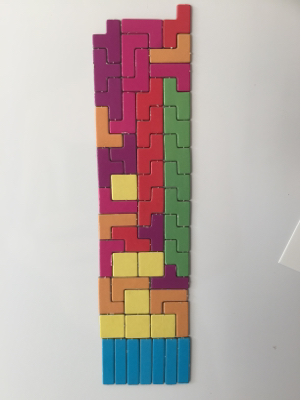
Go to Solution
193 votes, asked by Alconja#5208, answered by ffao#20521
Hints:
You don't need any hints, they are littered throughout the images everywhere, and I'm not giving you any more. :)
Ok, I will perhaps assist in framing things a little... This is actually a deceptively simple puzzle (though, simple $\ne$ easy). It isn't multiple layers deep, even if it may appear that way. In fact, there's really only a single puzzle to be solved here, and I believe it's actually doable with information from only three of the images. Most of the rest are hints and pointers to make your life easier, but also to distract a little. Part of the challenge is in filtering the truly necessary information from the noise, and in taking the lessons learned from the hints and applying them to the actual puzzle.
I'll just add one last bit of extra information (which you shouldn't take as a hint, so much as a clarification, for when you get a certain distance in): The security panel's circuitry contains a paradox prevention system...
Go to Solution
167 votes, asked by Alconja#5208, answered by VictorHenry#10861
I was walking home late last night and heard raised voices coming from a boarded up old warehouse. I stopped, out of sight, to listen...
[When I started eavesdropping, the conversation was already under way...]
Gangster 1: -infiltrator in our midst, and I know who it is... [dramatic pause] ...It's you isn't it!
Gangster 2: Me?
G1: What? No... him.
Gangster 3: That's ridiculous! I'm no traitor! How do we know it's not you?!
G2: It's not me!
G3: No... him... [under breath] ...idiot.
G1: That doesn't even make sense. I'm the most prolific amongst us. When would I even have the chance to work for the opposition?
G3: What do you mean? I'm in every day!
Gangster 4: [to himself] Me too, but you don't hear me harping on...
G3: [continuing] Not to mention I saw you with your ex last week on my way out of here... And I won't mention who I saw him hanging out with again yesterday...
G2: We weren't hanging out! I was just stuck behind him in a queue!
Gangster 5: Hey, we all fraternize with the enemy now and then... It's necessary to meet our goals... But this is different. From what I hear, half the time you act like you are one of them!
[A street sweeper drove slowly by, so I missed a little of the conversation...]
G3: It's a set up! Think about it... Who would gain the most from seeing me dead? ...I would!
Gangster 6: 'strue, but 'e would too...
G1: Sure, he occasionally fills in for me, but he could practically replace you!
G2: No he couldn't!
G6/G1/G3: Would you shut up!
G4: Geez settle down guys, what's with all the yelling?
G1: Because no one was talking to you!
G4: Ahh... Gotcha...
[A crowd of drunken revellers stumbled by and as I slipped into an alley to remain unseen, I missed another few minutes of the argument...]
G1: Gimme one good reason why I shouldn't kill you right now!
G2: I didn't do anything wrong!
G3: Wait... Who are we talking about now?
G1: You!
G2: Oh...
G5: Why?
G1: Yes!
[From here things escalated rapidly, and when gunshots were fired, I made a run for it...]
I went to the police but when they visited the scene, the gang was gone, and everything had already been cleaned. They said there wasn't enough to go on unless I could identify the victim and the perpetrators.
Who was the gang?
Which member was killed?
Why were they killed?
Bonus: What was the name of each gangster?
Go to Solution
157 votes, asked by stacksfiller#33827, answered by Deusovi#11876
Your final answer will respond to the question "Why don't I like Twitter that much?"
Like usual, I'll confirm any sub-answers if you find them
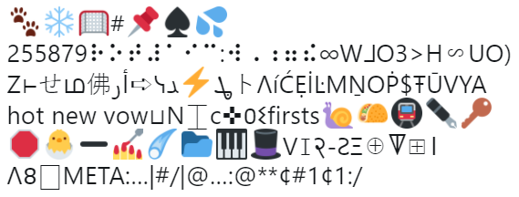
Here's the link to the puzzle on Twitter.
Here's the text of the puzzle:
üêæ‚ùÑü•Ö#üìå‚ô†üí¶
255879⠗⠕⠞⠼⠁⠊⠉:⠺⠠⠰⠶⠮∞WᒧO3>H∽UO)
Z⊢せம佛أر➪ᓭܜ⚡ﺪトΛíĆẸİĿMṈOṖ$ŦŪVYA
hot new vow‚äîN‚å∂‚ÖΩ‚úú·ãê·õäfirstsüêåüåÆüöá‚úíüîë
üõëüꣂûñüíÖ‚òÑüìÇüéπüé©Vùô∏‡•®-∆ߌû‚äïÍòú‚äû‡•§
…Öùüæ‚éïMETA:‚Ķ|#/|@‚Ķ:@**¬¢#1¬¢1:/
Go to Solution
152 votes, asked by BaSzAt#20572, answered by kamenf#15856
Below is an initial state for Conway's Game of Life with a single pulsar. Living cells are white.
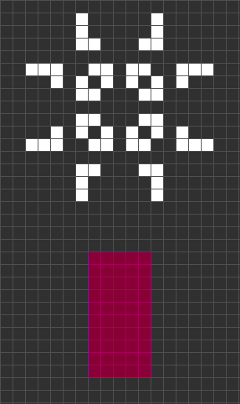
The area marked with red is your base. You are free to modify any of the red cells, but only those, and only in the initial generation. You are not allowed to do anything once the simulation starts.
Your goal is to annihilate every living cell in the grid – in other words, the game must reach a generation where every cell is dead, even in your base. Yet in other, way cooler words:
You have to construct a rocket to destroy the Sun and everything that was created in the process.
The grid is infinite in every direction, i. e. runaway gliders still count as living.
You may use a brute force algorithm if you really wish, but I don't recommend you to. For one thing, you're up against the halting problem. Besides, finding a good construction all by yourself is fun (at least it was for me).
What I do recommend is downloading a good GoL simulator – solving this with only a paper and a pencil is probably not so much fun.
EDIT: The puzzle has been solved, but please don't be discouraged from posting alternative solutions. They are still very valuable, as they seem hard to come up with.
This puzzle has a continuation, created by kamenf.
Go to Solution
152 votes, asked by Khale_Kitha#19944, answered by sandbo00#22007
Well this is strange.
I forgot to lock my monitor when I walked away from my desk, at work, and one of my co-workers decided to have a little fun.
When I got back, I found this little C# console app code segment, sitting forefront on my machine. I ran it a few times, but the results don't really tell me anything.
Does anyone else know what this could mean??
void Main()
{
GetEwe();
Console.WriteLine($"You have been given: {Ewe}");
}
public enum Directions { Up, Down, Left, Right, Forward, Backward, Diagonally };
public Directions? Ewe;
public Directions GetEwe()
{
Random rand = new Random(DateTime.Now.Millisecond);
do
{
Ewe =
(
from direction in Enum.GetValues(typeof(Directions)).OfType<Directions>()
//let u = Directions.Down
select direction
).ElementAt(rand.Next(0, Enum.GetNames(typeof(Directions)).Length));
}
while (Ewe == Directions.Up);
return Ewe.Value; Around();
}
private void Around()
{
Ewe = null;
}
Go to Solution
139 votes, asked by Travis Kindred#5626, answered by Matt Malone#2162
Sine waves bound in rectangles shaped into prisms. Mass increases, position changes twice, and mass decreases. The prisms become rectangles and are either discarded or stored for later use. If that sounds exciting to you, you may have an exciting future in our field! We need as many able-bodied candidates as possible to help with our project starting ASAP!
Due to lack of funding to actually pay a skilled team, we offer these fantastic incentives instead! How would you like some soggy old gramineaeze? Perhaps acidified coagulation and bio-viscera upon heavily triticumized water? Imagine what you could do with all of that! Sign up today to start this FANTASTIC ADVENTURE!
YOUR FUTURE IS WAITING! CORPORATIONS DON'T UNDERSTAND THAT ALL CAPS IS BAD. JOIN US!
*Company is not responsible for death or injury caused by crushing or falling.
What are you being asked to do and how are they paying you?
Go to Solution
134 votes, asked by dwjohnston#185, answered by njzk2#310
The riddle
Randall Munroe (of xkcd fame) has, a bit hidden on his site, a logic puzzle:
A group of people with assorted eye colors live on an island. They are
all perfect logicians -- if a conclusion can be logically deduced,
they will do it instantly. No one knows the color of their eyes. Every
night at midnight, a ferry stops at the island. Any islanders who have
figured out the color of their own eyes then leave the island, and the
rest stay. Everyone can see everyone else at all times and keeps a
count of the number of people they see with each eye color (excluding
themselves), but they cannot otherwise communicate. Everyone on the
island knows all the rules in this paragraph.
On this island there are 100 blue-eyed people, 100 brown-eyed people,
and the Guru (she happens to have green eyes). So any given blue-eyed
person can see 100 people with brown eyes and 99 people with blue eyes
(and one with green), but that does not tell him his own eye color; as
far as he knows the totals could be 101 brown and 99 blue. Or 100
brown, 99 blue, and he could have red eyes.
The Guru is allowed to speak once (let's say at noon), on one day in
all their endless years on the island. Standing before the islanders,
she says the following:
"I can see someone who has blue eyes."
Who leaves the island, and on what night?
There are no mirrors or reflecting surfaces, nothing dumb. It is not a
trick question, and the answer is logical. It doesn't depend on tricky
wording or anyone lying or guessing, and it doesn't involve people
doing something silly like creating a sign language or doing genetics.
The Guru is not making eye contact with anyone in particular; she's
simply saying "I count at least one blue-eyed person on this island
who isn't me."
And lastly, the answer is not "no one leaves."
He admits the puzzle isn't his:
I didn't come up with the idea of this puzzle, but I've written and rewritten it over the the years to try to make a definitive version. The guy who told it to me originally was some dude on the street in Boston named Joel.
The answer
He gives his solution:
The answer is that on the 100th day, all 100 blue-eyed people will leave. It's pretty convoluted logic and it took me a while to believe the solution, but here's a rough guide to how to get there. Note -- while the text of the puzzle is very carefully worded to be as clear and unambiguous as possible (thanks to countless discussions with confused readers), this solution is pretty thrown-together. It's correct, but the explanation/wording might not be the best. If you're really confused by something, let me know.
If you consider the case of just one blue-eyed person on the island, you can show that he obviously leaves the first night, because he knows he's the only one the Guru could be talking about. He looks around and sees no one else, and knows he should leave. So: [THEOREM 1] If there is one blue-eyed person, he leaves the first night.
If there are two blue-eyed people, they will each look at the other. They will each realize that "if I don't have blue eyes [HYPOTHESIS 1], then that guy is the only blue-eyed person. And if he's the only person, by THEOREM 1 he will leave tonight." They each wait and see, and when neither of them leave the first night, each realizes "My HYPOTHESIS 1 was incorrect. I must have blue eyes." And each leaves the second night.
So: [THEOREM 2]: If there are two blue-eyed people on the island, they will each leave the 2nd night.
If there are three blue-eyed people, each one will look at the other two and go through a process similar to the one above. Each considers the two possibilities -- "I have blue eyes" or "I don't have blue eyes." He will know that if he doesn't have blue eyes, there are only two blue-eyed people on the island -- the two he sees. So he can wait two nights, and if no one leaves, he knows he must have blue eyes -- THEOREM 2 says that if he didn't, the other guys would have left. When he sees that they didn't, he knows his eyes are blue. All three of them are doing this same process, so they all figure it out on day 3 and leave.
This induction can continue all the way up to THEOREM 99, which each person on the island in the problem will of course know immediately. Then they'll each wait 99 days, see that the rest of the group hasn't gone anywhere, and on the 100th night, they all leave.
Before you email me to argue or question: This solution is correct. My explanation may not be the clearest, and it's very difficult to wrap your head around (at least, it was for me), but the facts of it are accurate. I've talked the problem over with many logic/math professors, worked through it with students, and analyzed from a number of different angles. The answer is correct and proven, even if my explanations aren't as clear as they could be.
User lolbifrons on reddit posted an inductive proof.
If you're satisfied with this answer, here are a couple questions that may force you to further explore the structure of the puzzle:
- What is the quantified piece of information that the Guru provides that each person did not already have?
- Each person knows, from the beginning, that there are no less than 99 blue-eyed people on the island. How, then, is considering the 1 and 2-person cases relevant, if they can all rule them out immediately as possibilities?
- Why do they have to wait 99 nights if, on the first 98 or so of these nights, they're simply verifying something that they already know?
These are just to give you something to think about if you enjoyed the main solution. They have answers, but please don't email me asking for them. They're meant to prompt thought on the solution, and each can be answered by considering the solution from the right angle, in the right terms. There's a different way to think of the solution involving hypotheticals inside hypotheticals, and it is much more concrete, if a little harder to discuss. But in it lies the key to answering the four questions above.
The question
Everybody on the island could have come to the conclusion that 'There is at least one person with blue eyes', simply by looking around, seeing 100 people with blue eyes, and realising that everybody can see at least one person with blue eyes.
So why is it necessary for the Guru to say 'I see at least one person with blue eyes' to get the ball rolling?
Go to Solution
133 votes, asked by Tryth#7308, answered by xnor#4551
Two adventurers, Merlin and Hermes, approached a large iron door built into a cliff face."Well...", said Hermes, "What do we do now?". Merlin produced an old, large piece of crumpled paper from his pocket. "Hrm...", Merlin mumbled. "It says here that we must speak the six letter keyword to open the door and enter the secret chamber, but I don't remember seeing any signs as to what that keyword might be..."
After a bit of searching, Hermes notices something etched into the ground. "Come over here!", he yelled, pointing frantically. And sure enough, barely visible and obscured by dust, was a series of lines of differing color etched into the ground:

"Ah", Merlin said, "So that is the keyword." Hermes was lost and confused. After staring at it for another thirty seconds, he grumbled "What keyword!? All I see is a bunch of lines!". Merlin simply responded, "You're just looking at it the wrong way. It's obvious!"
Isn't it?
Go to Solution
119 votes, asked by MattClarke#2305, answered by squeamish ossifrage#40
I created a visual puzzle, which my wife then implemented as part of a stained-glass window. I've no idea if it is (a) obvious, (b) stupid or hopefully (c) extremely clever, and hence would love to hear your opinion.
Here's a photo. What does it represent?
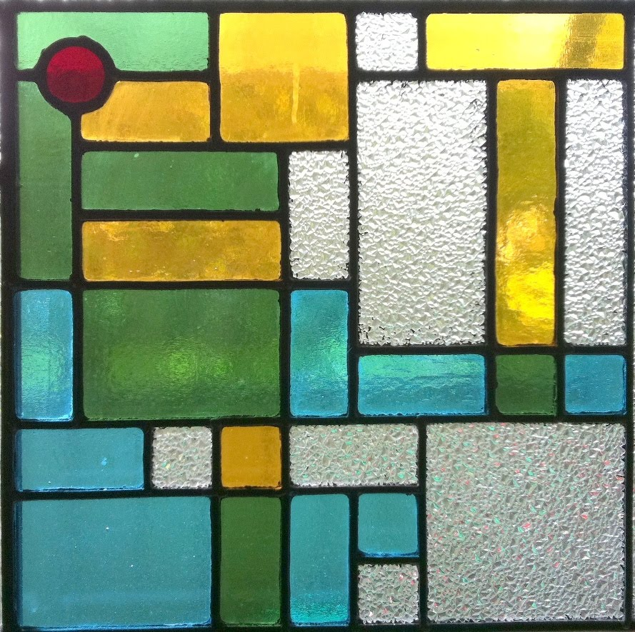
Go to Solution
118 votes, asked by John Meacham#4160, answered by martin#2819
You are a double-agent in the most important war of the 20th century, The
Falklands war. For years you have been playing the United Kingdom and Argentinian
governments against each other, taking bribes from both sides and it has caught
up with you.
One day travelling you are snatched off the street, kidnapped, drugged and
placed on a private plane. You wake up in a cell, you know you have been taken by
one of the governments to their capital for interrogation and treason charges but
you cannot tell which has abducted you. You have perfected both the UK and
Argentinian languages and accents and you know you can convince the guards to
let you go if you were to speak in their native tongue asking for your
government contact. However speaking the wrong language first will
certainly turn out very poorly for you indeed.
You look around your cell, it is a large room with high ceilings, a musty smell,
and thick dust covering everything. Based on being unable to hear anything and
the constant temperature you conclude you are underground. Nothing about the architecture is distinctive. The only things in
the cell are a single metal chair bolted to the floor in the center of the room
with a spotlight hanging from a cord right above the chair illuminating the
seat brightly leaving the rest of the room in shadow. You know it is a matter of time
before you are tied into the chair and interrogated by shadowy agents of one of
the governments.
You search desperately for a clue as to where you are. You
kick the chair and stub your toe; it is solid. You claw at the light, looking for a marking
or a way to open it and see the voltage rating but cannot find either. You yank
and pull on it to test how secure it is and cannot dislodge it from the ceiling
to get at the cord. You try to swing it far enough to smash against a wall but it will not reach. You search the chair for a makers mark but can find none.
You know much more action will invite suspicion even if you know the right
language so you stand back and think.
The guard watching on CCTV notices, but decides it is normal behaviour for
someone waking up in a cell regardless of guilt so is not immediately
suspicious. As far as he can tell you then pace around the room randomly for a
few hours deep in thought.
You suddenly walk towards the door and knock, with 100% confidence you
correctly ask in perfect Spanish for your government handler who promptly
releases you.
How did you know what government to ask for?
- You can assume you are correct in all your assumptions mentioned in the puzzle.
- You have no items other than the clothes and shoes you were wearing when abducted. no cell phone, no watch, no pocket lint etc.
Go to Solution
113 votes, asked by Alconja#5208, answered by Dan Russell#21234
Gah! I used to be the brilliant one at Verba Retorta University, but ever since that damned Professor Wordberg showed up, there's been nothing but trouble. And it's all his confounded machine's fault!
He's a fraud – he has to be – I just needed enough evidence to prove it. So, last night, I... Look, it's not important how I got in there, but purely by happenstance, I found myself in Wordberg's lab after everyone else had left (and, as a tenured professor, I can assure you, I have every right to be there). Anyway, with no one else around, I took the opportunity to gather the proof I needed. I grabbed four words I happened to have in my pocket, loaded them up and started up his alleged "word transformation engine"...
Here's the video footage I took of the process (sorry for the poor quality, my phone's a little dated):
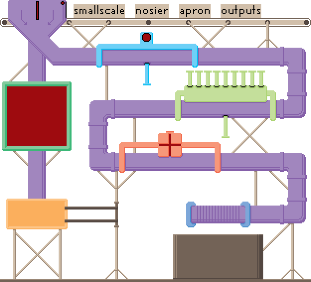
The words I put into the machine were smallscale, nosier, apron, and outputs.
Anyway, after a lot of show, the machine's output was unceremoniously dropped into the bin at the bottom. But this is where things went wrong, and where I'm hoping you can help... The most obvious problem is that the machine appears to have actually worked(!), but right now that's not my concern. The immediate issue is that there were already words in the bin at the bottom and I don't know which are mine and which were already there. To make matters worse, some of them have been broken in the fall, and again, I don't know if they're mine:
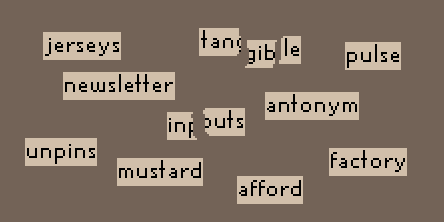
The words in the bin appear to be jerseys, tangible, pulse, newsletter, inputs, antonym, unpins, mustard, afford, and factory.
Now, under no circumstances can Professor Wordberg know I was in here, so in order to hide the evidence, I need you to help me work out:
- Which words from the bin are the, now transformed, words that I loaded in?
- If either of the two broken words are not mine, what word can I put through the machine again to create an unbroken copy?
Go to Solution
109 votes, asked by áolɐǝz «ù…• á qoq#435, answered by Dr Xorile#15942
Here is a interesting picture with two arrangements of four shapes.

How can they make a different area with the same shapes?
Go to Solution
108 votes, asked by Matt Malone#2162, answered by McMagister#6178
Complete the last line in each of the following five series:
Puzzle 1:
"Using" is E
"Desist" is I
"Visits" is E
"Design" is ???
Puzzle 2:
"Asia" is H
"Cuffs" is S
"Ender" is I
"Redness" is F
"Fuchsia" is ???
Puzzle 3 (advanced):
"Pro-tem" and "row" are H
"Ties" is K
"Cohesion" is A
"Casino" is E
"Hocks" is either a word, name, ??? or ???
Puzzle 4:
"Gross" is W or R
"Assign" is S
"Amassing" is E
"Design" is S
"Amassing" is S
"Arrows" is ??? or ???
Puzzle 5:
"Edna" is I
"Slang" is X
"Siege" is E
"Basin" is X
"Sin" is X
"Sin" is A
"Besiege" is X
"Signals" is ??? and ???
First person to solve all five gets the win.
Hint:
Each ??? stands for a single letter of the English alphabet.
Hint #2:
The puzzles are not related to one another, except that they are all based on the same principle. If you solve any one, you will rapidly solve all the others.
Hint #3, a quite cryptic one:
The very first parts of vague solutions can decode nothing: that's the core of these puzzles.
Hint #4, a more obvious one:
You want another hint?! Nag! Go botanist first, arse ulcer! O my! More clues? Rats! Rifts in a toboggan!
Go to Solution
106 votes, asked by Beastly Gerbil#18250, answered by stackErr#5030
If you have found her, maybe you could try saving her?
You come home one day and find your wife is out. You open your computer and discover an email from her.
To xxxxx,
/
Curiosity killed the cat, so whatever you do, please don’t come and find me. You need to save your energy for the kids. Please just trust me, this is for the best.
Obviously, I think I’ll come back. But please be patient. I wouldn’t leave my family unless I had to. I’ll stay hidden until it’s safe to return. I’ve left no clues, that would be too dangerous.
Unexpectedly someone has come after me. I had to completely disappear very quickly indeed. I had time to write this message or try and call you. My phone was dead, you were out so I wrote this. Wow, I won’t forget that feeling of panic. Hopefully you can see I had no choice about leaving. It wasn’t me that chose to leave, I was forced.
Now again, I must tell you not to come and find me. In the case that you do, then the chances are you won’t find me. There’s zero clues which lead to me.
Tell all the kids to be brave. I think that they’ll struggle and find it hard without a mother. And it’ll be my fault. I wish I could tell you my location so I could see you again.
Note I don’t want anyone knowing about this. Anyone that you call who asks, tell them I ran away, not the truth. And whatever you do don’t tell the police.
I would have stayed but I couldn’t have or I’d have been caught. The first thing that I did was to call a taxi. Then I think we must have hit a car, I'm sure I’ll sue the driver if I get a chance.
Never before had I been angrier. I couldn’t even get out of the car, and the state the back of it was in was unbelievable. I miss home so badly. If I could see it again, I really would do anything.
Even now, so far away, I love you and I’ll try and send letters. It’s you that I want to see again. I will come back as soon as possible. Try and find hope and some faith in that.
Love from me,
\
Lucida Xavier
Bemused and in shock you wander into your bedroom and slump down on the bed. You notice a poetry book next to you. One page has a folded corner. As you open the book to the page a piece of paper falls out...
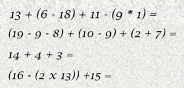
The sums seem awfully easy to you. You open the book to the page with the folded corner.
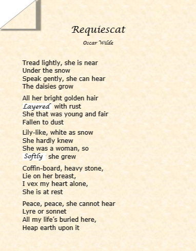
You notice a couple of words have been replaced and you wonder why. Going back to your computer you open up a tab and see your wife has booked 9 different flights out the country!
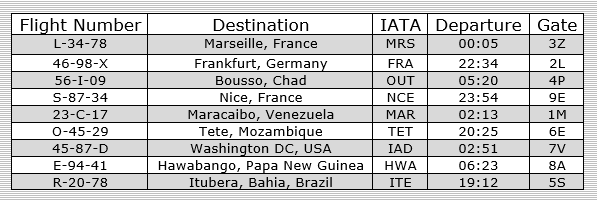
Where has your wife gone?
Solved by @seasnake, @Dan Russell, @pime, @MPeti and @palsch
Go to Solution
106 votes, asked by Rand al'Thor#5373, answered by squeamish ossifrage#40
You are a secret agent in the service of the KGB, about to embark on a highly dangerous mission to infiltrate MI6. You have your disguise, your papers, and your backstory all prepared. The night before your departure, you receive the following email:
From: Andrew Void < a.void@disparition.com >
Sent: Fri, 27 Mar 2015 11:57AM +0400
To: ██████████████████████
Subject: Your work
Dear Mr Smith,
This is to inform you that your poem is now nearly noted up for publication. Its age notwithstanding, this poem will fit as part of a vast pattern of poems that spans millennia. You stand among us now as a poet, throned among such applauded poets as Aristophanes, Plato, Byron, and so on. As one of us, your poetic prowess will not go unadmired.
Many congratulations!
Andrew
Mr Smith is the pseudonym you will be adopting on your mission in Britain, but you do not recognise the name Andrew Void or the email address. You are about to delete the email as spam, but some instinct tells you to examine it more closely. After a few minutes at your computer, you find the hidden message within it and slump back in your chair, disappointed.
What is the hidden message?
Go to Solution
103 votes, asked by Alexander#2544, answered by thepace#2656
The Sheikh dies, leaving behind three sons, 17 camels and the following order:
- His oldest son shall inherit one in two camels.
- His middle son shall inherit one in three camels.
- His youngest son shall inherit one in nine camels.
Now the three don't know what to do. So they ask an old friend of the family, which knows a solution such that everyone is happy.
What did he propose?
Go to Solution
100 votes, asked by Shevliaskovic#50, answered by Alireza Fallah#465
You are on your way to visit your Grandma, who lives at the end of the valley. It's her birthday, and you want to give her the cakes you've made.
Between your house and her house, you have to cross 7 bridges, and as it goes in the land of make believe, there is a troll under every bridge! Each troll, quite rightly, insists that you pay a troll toll. Before you can cross their bridge, you have to give them half of the cakes you are carrying, but as they are kind trolls, they each give you back a single cake.
How many cakes do you have to leave home with to make sure that you arrive at Grandma's with exactly 2 cakes?
EDIT : If you go to your grandma's with a half eaten cake, she's gonna be pissed. The trolls can't give you half a cake back. It is unhygienic and disgusting.
Go to Solution
100 votes, asked by Mathxx#15500, answered by Bailey M#11475
Which of the 8 tiles below is the missing one?
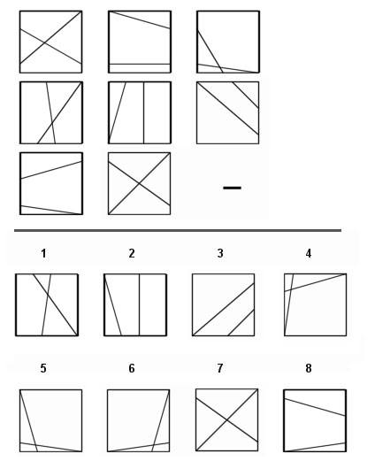
I've been trying to figure out the answer to this question for quite some time. Can anyone spot the pattern?
Go to Solution
99 votes, asked by GentlePurpleRain#4421, answered by CodeNewbie#12700
Hearken, now, and listen close; I have so much to tell.
Now lend an ear and do your job; you surely will excel.
To find my hidden message, gaze on every word herein.
While skimming through it might be fast, you'll miss the quiet gem.
How vitally important are the details of this verse;
examining them closely is the task to take on first.
And once they've been digested, one may feel the need to snooze;
now please reject that feeling and keep minding p's and q's.
Time and time again, you need to squelch the urge to rush.
I know that if you get too lax, you'll miss some clues and such.
So look at each word carefully; just read them one-by-one.
My friend, if every word's perused, your work is almost done!
I know that all this vigilance may start to vex or chafe.
So here's a hint to help you out and keep you feeling safe:
Some people say that punctuation rules are absolute.
Ill-use of them is abject and quite low, there's no dispute.
Now, as you keep perusing, you may find a common theme.
Getting down and dirty is the answer, it may seem.
Find every hidden message in the fine points of the text.
Rush to do your job, and quiz specific aspects next.
Oh, lazy folk will squawk at grammar law misapplication,
giving strong opinions of strict laws of punctuation.
Many nix all joy in words, subscribing to this faction;
in point of fact you might say it's a capital infraction.
Every word's important in this lengthy, rambling prose.
Altering just one could lose the message that's enclosed;
please examine hard and quick the verbiage herein.
'Cause every word's important to the puzzle that it's in.
Here's the quest that's put before you, puzzler and chum:
locate the mystery unknown; to languor don't succumb.
Search through all the text to see what's shrouded here among
the words you may enjoy or may prefer to leave unsung.
Thus far, you'll think not much was said about this work's solution;
so you'll obtain it straight right now, without any dilution:
you want a pair of words portraying you, my puzzling buddy!
And no quick fix can find it! No, just vim and lots of study!
Zest is what you'll have to have as these two words you seek;
as said before, the phrase describes a quirky puzzle geek;
just make a guess, go check your work; you'll see if it is right;
for after all, it's sure that you'll excel; you're very bright!
As fin'lly this verbose creation's coming to a close,
please acquiesce to take my thanks for suff'ring through my prose --
my urge to wax poetic may be tiresome to some,
but still, it's rather jazzy, if your brain is not yet numb.
What two-word phrase is hidden in the poem above?
Go to Solution
88 votes, asked by Avigrail#5106, answered by Deusovi#11876
We're in the year 2016 so it's finally time to take puzzles to the 3rd dimension!
So let's see what those beautiful times bring us today:


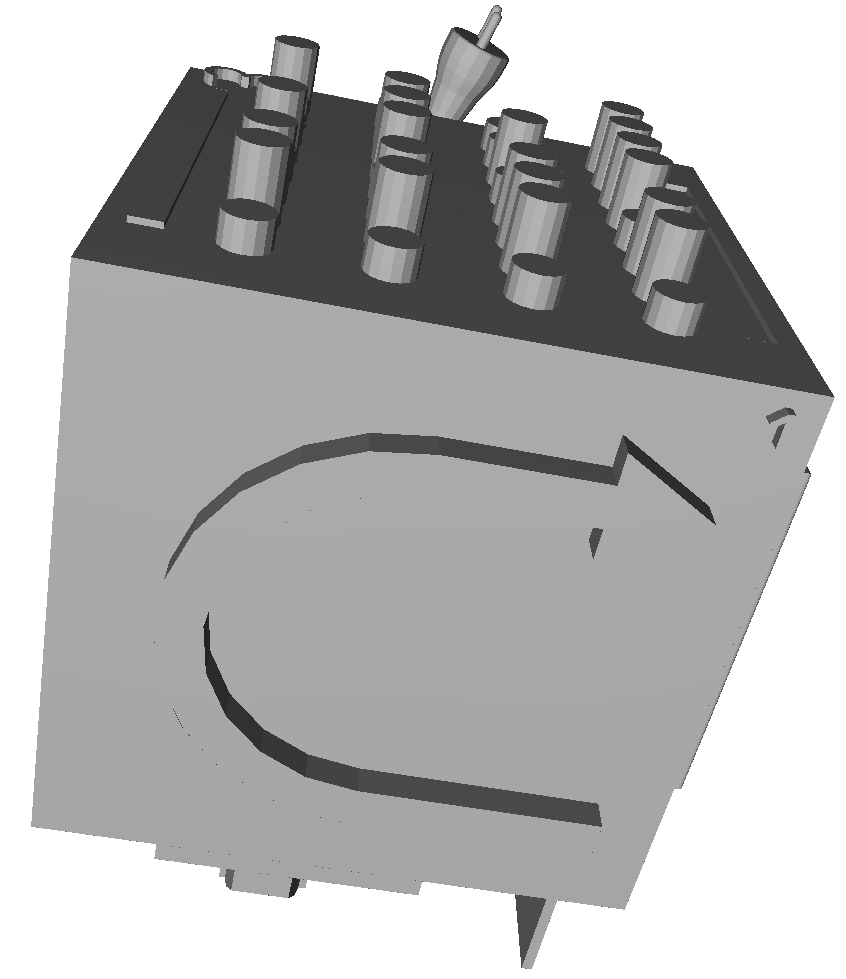


Everyone of you clever sods could as well have a look at the real thing
(please give it some time to load).
PC controls:
- Hold left mouse button: rotate cube
- Mouse wheel: zoom in and out
- Hold right mouse button: move cube parallel to screen
Mobile controls (tested on Android and iOS):
- tap: stop automatic rotation of cube
- 1 finger: rotate cube
- 2 fingers: zoom in and out
- 3 fingers: move cube parallel to screen
The cube shown above appears to have, like most cubes, 6 faces of which each one carries a more or less mysterious entity. After decrypting all of them we should be able to find out what this is all about!
Go to Solution
87 votes, asked by Aggie Kidd#9951, answered by Set Big O#1563
In 1980, a man lives on the 30th floor of his building. Every morning he wakes up, gets ready, kisses his wife, takes the elevator down to the first floor, and goes to work.
One morning, he wakes up, gets ready, kisses his wife, and gets in the elevator, exactly as he always has done. The morning is exactly the same as any other morning, and no one else was in their apartment.
The man is alone in the elevator and there are no windows in or visible from the elevator. Without receiving any communication of any kind, or the man being in any danger of any harm, he begins crying when the elevator reaches the 12th floor, because he knows his wife has died.
How is this possible?
Notes (added later) to eliminate "too broad" answers:
His wife was alive when he left the apartment.
The man loved his wife, and would never harm her in any way.
And for the more extreme options:
The man had a boring typical day job. No danger involved.
The laws of physics have not been repealed, and there are no mythical or fiction occurrences happening.
As always, aliens are not involved.
Go to Solution
84 votes, asked by Tom#19547, answered by Bolo#9200
An intrepid globetrotter needs to know this:
BENIN is in Libya
CANADA is in China
DENMARK is in the United States
FRANCE is in Germany
INDIA is in ??
Go to Solution
83 votes, asked by Rand al'Thor#5373, answered by Spacemonkey#11251
You have been incarcerated in a high-security prison for several nefarious crimes which we need not go into here. The warden, being a kindly logician, offers you a single chance to escape. You are blindfolded and given a choice of five doors, one of which leads to freedom and the other four to prison cells. You know that the doors are red, blue, green, yellow, and white; they are evenly spaced, each 2 paces from the next; and you are standing in front of the middle one. There is a guard standing by each door, and all five guards tell the truth (weren't expecting that, were you?). They make the following statements:
- The red door is somewhere to the left of the door leading to freedom.
- The blue door is not at either end.
- The green door is 3 doors away from the door leading to freedom (2 doors between them).
- The yellow door is adjacent to the door leading to freedom.
- The white door is the middle one.
To find out how many paces you need to take to which side in order to be standing in front of the door to freedom, you need to answer the following two questions:
- What is the order of the coloured doors, left to right?
- Which colour of door leads to freedom?
You may assume that all statements made about "left" and "right" refer to your left and right.
(I found more or less this puzzle on the internet and thought it would be easy, but for some reason it's a fair bit harder than it looks!)
Go to Solution
81 votes, asked by Bass#36023, answered by Rand al'Thor#5373
Looks like the community has spoken.
With a heavy heart (as if), I have trapped @Deusovi behind a never repeating, fractally recursive, infinite, unsolvable labyrinth. To keep him busy, I added a couple of teleports.
The green part of the maze contains a copy of the maze, scaled down so that it exactly fits.
A teleport is connected to every teleport of the same size. And yes. A scaled down "big teleport" is exactly the same size as a "small teleport".
Fun facts about this puzzle:
- The angle of the scaled-down copy is an irrational part of $\pi$, so the angle will never repeat.
- There are almost no dead ends. There are infinitely many distinct infinitely long mistake paths.
- There is no solution.
- .. OR IS THERE?
- ..No.
- Seriously. Don't try to solve this puzzle.
- Unless you are Deusovi, of course.
Go to Solution
80 votes, asked by Alconja#5208, answered by Alconja#5208
I never really knew my uncle growing up. He seemed nice enough, but I got the sense from the distant, troubled look in his eyes that there was at least some truth to the rumours...
Years before I was born, his fishing trawler was lost at sea under mysterious circumstances. None of his crew survived, and when pressed, he'd just mutter something about a freak storm. What is known, is that he spent several weeks adrift and when found, he was near death, babbling incoherently about pirates, treasure, and curses.
Anyway, my uncle passed away a few months ago, and last week, out of the blue a lawyer showed up on my doorstep with a large box that was, for some unexplained reason, left to me in his will. The box's strange contents included piles of musty, leather bound books, old tattered maps, a small brass telescope, a compass that no longer worked... It was interesting, even a little mysterious, but mostly it just seemed like junk. However, as I flipped through an old book documenting the native flora of some isolated pacific island, a small map fell to the ground...
As you can see below, the map is hand drawn and shows the features of an unnamed island in exquisite detail:
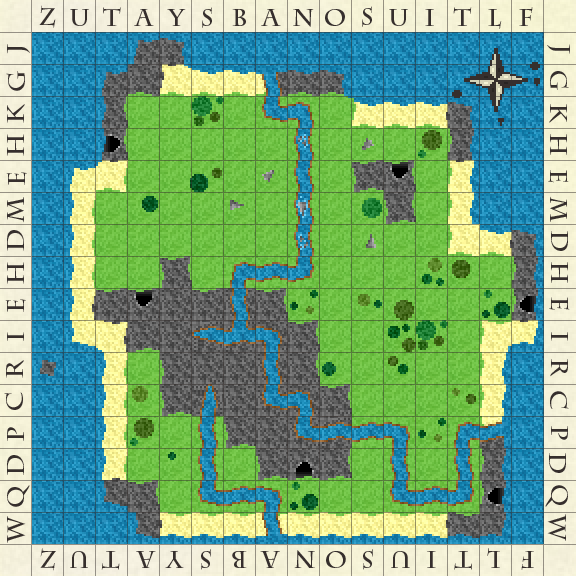
More interestingly, however, is the strange riddle scrawled on the back in a delicate, spidery script:
Start your search from dead man's cave and follow the clues herein.
Sharpen a sword and your wits and you're ready to begin.
Paired up, pared down, the truth exposed, lies within lies.
Heading onwards north, reeling seas terrorize.
Right is left and left is right, turn and go until,
Twins appear to mark an end, though you'll continue still.
Cardinals sitting in their nests, pick them up one by one.
Set them free and follow them, then turn to what's undone.
A leap of faith, surrender yourself. But when things come to a head,
Take the easy way out, with the blues left behind, go three and don't retread.
Follow the gaze of the crimson saint as he looks to the pre-dawn glow.
The distance the crow flies in to pi, hints how far to go.
Two one fives, all lined up, this time point the way.
They also indicate how far. Go now or be led astray.
Proceed until, when viewed from on high, the island itself gives a sign.
Next steps revealed as the river reflects and the ancient stones align.
Run forth with what you carry. Confusion becomes clear.
Now piece together your reward, you'll find it buried here.
Be warned though treasure seeker, should you make but one wrong turn.
The pirate's curse, and certain death, is all that you will earn...
It's not totally clear, but I'm pretty certain the riddle and map indicate some long forgotten pirate's treasure! Unfortunately, I've been unable to decipher any of it, and perhaps subconsciously I don't want to find the answer myself, for fear of the fate that befell my uncle and his crew... Either way, I've decided I'm turning it over to you. Good luck, but beware the pirate's curse...
Clarifications
To be 100% clear:
- Everything you need to solve this puzzle, beyond a little general knowledge, is contained in the map and riddle, the rest is just flavor text.
- The last stanza is also just flavor, but the rest contain one or more discrete directions.
- You can assume that you're capable of crossing rivers, climbing mountains, swimming in the ocean, etc. Basically all squares on the map are valid, but you'll never be directed off the map completely.
Also, if you want to keep your working to yourself initially (this is a race for the treasure after all!), feel free to just post in the comments, the coordinates you arrived at at the end of each stanza, with the last being the location of the treasure, along with what the treasure actually is. Eg. "AB, CD, ..., YZ - Treasure is a pile of gold". I'll then give a percentage indication of how successful you were. (obviously, when giving an actual answer, you'll need to justify those steps with valid logic though).
Hints
(This puzzle is now solved, but I'll leave these here for prosperity, or for late comers who still want to work through the challenge)
General hints:
1: As @Realdeo has observed in the comments, you can't necessarily assume North is up. Maybe there's a way to confirm...
2: Don't bother looking for a clue that will tell you where dead man's cave is. Just pick a cave and start. It will become apparent as you progress if you made the right choice...
3: Almost all the stanzas are effectively standalone riddles, so if you get stuck on one you can still work on others. Though you should still be aware that sometimes things rely on you being in a specific location in order to make sense (even then, you will likely be able to "solve" and understand the stanza). Of the individual stanzas/riddles, some are wordplay, some are mini puzzles, some use the map and some are fairly direct (though muddied with metaphor).
4: No clue will ever explicitly tell you to travel diagonally or any other non-orthogonal direction. Though some stanzas will be made up of multiple individual (orthogonal) steps, making the overall movement for the stanza non-orthogonal.
5: Don't bother trying to decrypt or decode all the letters around the edge. You won't get very far, as more than half are just random fillers. You'll need certain letters at some point, but hopefully when the time comes, you'll know which ones...
6: It will make your life easier if the first thing you do is to determine where north is. You can do this before even looking at the riddle.
7: Incorporating clues given on @rand's attempt at finding North: Paying close attention to the blotches around the compass rose is a captital idea! Plus, I'm sure the pirates would have put one on all four sides if they could have, but for some reason only three have anything visible... What could make those blotches, and why would only one side not have any? ...also, perhaps it's worth thinking about what's NOT there.
Stanza specific hints:
Start your search: This stanza is mostly just a direct statement, so for the moment, there's not much to be gained puzzling over it (see general hint about dead man's cave above).
Paired up: The first line is the most important here, as it will help to understand the second.
Paired up: To clarify the hint above, although the first line is key, both lines still need to be used together. If the first is the key, then the second is the lock.
Paired up: You don't need to look at the map for this one, just read it very carefully, every single word should make sense once you get it.
Paired up: The solution to this stanza will be a clear, but short, sentence with a form similar to "head two north"
Paired up: People have correctly realised that there is wordplay involved here... However, beyond some slightly awkward grammar, the first line is quite literal in terms of what you need to do.
Right is left: Where you are on the map matters for this one.
Right is left: In response to @rps asking if the twins were the II coordinates - there's multiple possible "twins" on the map with the correct ones being validated by your movement. If you know which way north is and you've solved stanza 2, you should be able to deduce/validate both dead man's cave & the twins.
Right is left: I slightly overstated myself in the hint above (apologies, though I doubt it sent anyone too far off track), you won't be able to 100% validate the twins and dead man's cave yet, but you will be able to narrow it down to two possibilities (one of which you'll be able to discount later).
Right is left: How would a pirate "mark and end" (particularly when we're talking about a treasure map)?
Right is left: Obviously I've made the twins a bit subtle, so when you're looking for them, consider squares as whole units... also, a pirate would need more than one set of twins to mark a spot...
Cardinals: Make sure you only free the cardinals that are actually in their nests, no others. If you get that far, what's undone should be clear.
A leap of faith: Metaphor and the map.
A leap of faith: Where you're standing and which way you're facing matter a lot here. If it makes no sense to you, you're probably standing in the wrong spot.
A leap of faith: There are multiple individual steps, but the instructions are all fairly direct (mostly just metaphor with some minor play on words, but no "tricks" like the "paired up" stanza), just make sure those blues are actually left behind when you follow the last step.
Follow the gaze: Who might the crimson saint be?
Follow the gaze: You'll need some very basic (high school level?) maths here, but currently you've almost certainly got it wrong...
Follow the gaze: The distance to go will be an integer value, with no rounding or approximating required.
Two one fives: "Two one fives" are the key here, but there are several other hints in this stanza to push you in the right direction.
Two one fives: How could "two one fives" be interpreted given the pluralisation?
Two one fives: Although "two one fives" is the key clue, the other sentence fragments are still hints. Ask yourself why I would phrase the rest of it the way I have...
Proceed until: First line is a simple directive, the second points to a mini puzzle of its own.
Run forth: What are you carrying?
Run forth: The first line is your last direction clue, the second line is talking about the treasure itself.
Run forth: "Confusion becomes clear" can be applied to the first sentence or the second line equally (and I've been dropping many hints to various people on how to discover what the treasure is).
Be warned: As stated in the clarifications, you can completely ignore this stanza.
Fallen heroes
A memorial to those who were lost to the pirate's curse:
- Realdeo attempted
HT TG ES EN ES MU EI HN HS, but those co-ordinates clearly spell out "THE NEMESIS HUNTS (geh)", which can't be a good sign... (with approximately 2% correct, he is now missing, presumed dead)
- tfitzger tried
UE IE II SR..., but luckily gave up as he had almost spelled out "[c]URSE" already! (with maybe 20% right of the 20% attempted, I can only hope he escaped the curse, but it's not looking good)
- It's a miracle. He's alive and still searching, with a second attempt of
UE IE II CU AE.... Going from "[c]URSE" to "CU[rs]E" is an improvement, but I still have my concerns.
- Timur Kuchkarov has made a cautious start of
FE FI II..., but with a low percentage correct, the "FIE" upon him may grow to something much worse.
- After various attempts, rand al'thor settled on
HT DT DO EN EB EU HU RY RI, but I'm worried for his safety given that the pirates seem to be trying to tell him "R! You be hurt, then died!" (grammar has never been a pirate's strong point).
- It seems rand al'thor is made of tougher stuff than I thought... he survived the pirate's death threats, to find the treasure!
Solution
The treasure was ultimately found and won by rand al'thor. However, since this page has become a bit of a mess of partial solutions and invalidated attempts, I have also posted a fully explained, canonical solution below, for those interested.
Go to Solution
79 votes, asked by AeJey#2730, answered by oleslaw#30222
Can you make all the below statements true with a single click? If yes, explain how.
- Three + Eleven = Ten
- Seven + Five = Six
- Two + Four = Eight
NB: Single click means, with only a single left mouse button click. Not with a series of steps including only one click action in it. Hope it's clear now.
Go to Solution
78 votes, asked by Decypher#1934, answered by Wu33o#20690
A classic:
A CEO of a multi-million dollar business has to go on a business trip to Belgium (from somewhere in America).
Before going to the airport in the morning with his limousine, he's going to the office first to get some files that he forgot the previous night.
When arriving at the office, the night guard opens the gate & door for him.
The CEO gets the files and drinks a coffee while chatting a bit with the guard, and he mentions that he's flying to Belgium today for a deal he cannot miss, it would bring millions of dollars to the business.
The night guard looks shocked, and explains why.
Guard: I just had a dream this night. A plane that would fly to Belgium is going to crash in the middle of the Ocean.
The night guard begs his CEO not to go on this business trip.
And the CEO believes him. He doesn't go to the airport and cancels his flight.
Later that day, on the news, an air-plane crash...
It was the plane that flew to Belgium. It crashed in the middle of the ocean.
The CEO thanks the night guard later and gives him $10.000.
The CEO also tells the night guard that he's fired.
Question: Why did the CEO fire the night guard after he saved his life?
Found it in a book: Raadseltjes, thought I'll share it with you :)
Go to Solution
78 votes, asked by Khale_Kitha#19944, answered by Alconja#5208
From: Ada Hughes <ahughes@fib.gov>
Sent: Thursday, April 7, 2016 7:03 PM
To: Joe Dorsen <jdorsen@fib.gov>
CC: Jason Bernz <jbernz@fib.gov>; IT Guys <cis@fib.gov>
Subject: Re: Fwd: Re: Karen is missing!
Hey Joe,
That sequence underneath the image: Do you think it means anything?
I tried changing some of them to letters, but didn't come up with anything. Did you get anything from your numbers idea?
‐ Ada
From: Jason Bernz <jbernz@fib.gov>
Sent: Thursday, April 7, 2016 6:25 PM
To: Joe Dorsen <jdorsen@fib.gov>
CC: IT Guys <cis@fib.gov>
Subject: Re: Fwd: Re: Karen is missing!
Joe
Okay, good; that helps. I'll get on trying to find Karen, and those kids, from my end, while you guys continue to work on that side.
Keep me updated!
‐ Jason
From: Joe Dorsen <jdorsen@fib.gov>
Sent: Thursday, April 7, 2016 6:21 PM
To: Jason Bernz <jbernz@fib.gov>
CC: IT Guys <cis@fib.gov>
Subject: Re: Fwd: Re: Karen is missing!
Jason,
You asked me to email you the information that we talked about, earlier, so that we had a record of it.
Some updates. There was a hidden message in the letter that stated: "Helps us figure out the clue key is understand". You're definitely going to want to work under the assumption that this is a kidnapping matter, at this point. We'll work, further, to see if that key means anything useful, or not.
We also noticed that strange discrepancy, that I mentioned earlier, with the name of the image that his wife sent him. The email stated that it had a specific name, but when we dug down into the server, it really had a different one. I don't know that it matters, but I went ahead and modified the text, down in this email thread, so that we can reference it, later.
Also (which you know, since you came to see me), we spent several hours trying to figure out if the image that he sent means anything and, quite honestly, we came up blank. I'm not sure if it will really provide us any insight, but we will, of course, keep looking, just in case I am wrong.
‐ Joe
FIB Technical Team
$\color{red}{NOTE:\ ORIGINAL\ PUZZLE\ STARTS\ HERE!}$
From: Jason Bernz <jbernz@fib.gov>
Sent: Thursday, April 7, 2016 1:12 PM
To: IT Guys <cis@fib.gov>
Subject: Fwd: Re: Karen is missing!
Hey, guys.
We've got a situation here. My partner is missing, and her husband received this really odd email, earlier today.
Please check into it, ASAP, and let me know if you guys find anything suspicious going on here. The rest of my team is not around; I've forwarded the entire thread to you, so that you can understand why I'm concerned.
Please let me know if you can figure out what's really going on, and if there's someone that I need to be looking for or if she legitimately left him.
Thanks,
‐ Jason
From: Sam Stone <sstone@geemail.com>
Sent: Thursday, April 7, 2016 1:10 PM
To: Jason Bernz <jbernz@fib.gov>
Subject: Re: Karen is missing!
OMG. This is a picture we looked at, a few months ago, when we were searching for where we wanted to take our vacation.
Here's the image from my computer, in case it helps you any. Please let me know what you find out!

From: Sam Stone <sstone@geemail.com>
Sent: Thursday, April 7, 2016 1:06 PM
To: Jason Bernz <jbernz@fib.gov>
Subject: Re: Karen is missing!
Sure. Here it is:
From: kstone@geemail.com
Sent: Thursday, April 7, 2016 12:46 PM
To: Sam Stone <sstone@geemail.com>
Subject: I can't deal with this anymore
Dear Sam,
I just wanted to write this letter, in the hopes that it heùöïps you to know why me and the kids are gone. It's not about you. It's about uѕ. We really just need to find a way to fiɡure out how to work things oùöût. Sometimes, I just think that tùóÅe problem must be that you really haven't a cluùñæ, but maybe it's me. Maybe I'm the problem.
Please remember that I do love you, and that's really the ùóÑey to any relationship. I hope this iêëà only temporary, and that we can come back soon, but I feel that it is entirely up to you. Remember where we wanted to go? I sent an image to remind you. Please try to unⅾerstand and I will contact you in a week. We'll take things bit by bit, but try to, at least, understand how significant this is for me.
With love,
Karen
---Inline Image---
106t154iq20rig62yyuj91atnfl173vecbof29gfjyqcn98.png
2p:4a;4d;43
This picture looks really familiar. Why does this look so familiar? I have to think on it.
Could you look into this, please? I'll try to figure out where I've seen that, before, and I'll let you know when I do.
From: Jason Bernz <jbernz@fib.gov>
Sent: Thursday, April 7, 2016 1:04 PM
To: Sam Stone <sstone@geemail.com>
Subject: Re: Karen is missing!
Sam,
Please reply to this and copy the email you got from her into it. It sounds really strange for Karen to do this to you, and I want to see if there's anything unusual in the email, okay?
Send it, ASAP.
‐ Jason
From: Sam Stone <sstone@geemail.com>
Sent: Thursday, April 7, 2016 1:01 PM
To: Jason Bernz <jbernz@fib.gov>
Subject: Re: Karen is missing!
Jason,
I just got an email from her. I...can't believe this. She left!! What the hell am I going to do, man? She even sent me some random picture with it, for some reason. I'm dying here! We haven't had any issues. Everything's been going great!
Oh man...
From: Jason Bernz <jbernz@fib.gov>
Sent: Thursday, April 7, 2016 12:07 PM
To: Sam Stone <sstone@geemail.com>
Subject: Re: Karen is missing!
Whoa. Slow down, Sam. There's a reason that the police hold off on these kind of things. No, I haven't seen Karen. She didn't come in to work, this morning, either, but neither did Kyle, Jim, or the rest of my team, so he may have them off doing something that I wasn't told about, yet. Try to calm down, and let me know if you hear from her, soon. I'll keep an eye on my email, in case you hear anything.
Don't worry about the personal matters issue. I'll deal with that. She is my partner, remember.
Good luck,
‐ Jason
From: Sam Stone <sstone@geemail.com>
Sent: Thursday, April 7, 2016 10:23 AM
To: Jason Bernz <jbernz@fib.gov>
Subject: Karen is missing!
Buddy. I need some help. I know that you aren't supposed to your use privileged position for personal matters, but I don't know where else to turn!
When I got home from work, yesterday, Karen and the kids were gone. I waited around for a few hours, and I called her cell phone, but I couldn't get an answer. Finally, I got tired, while waiting, and passed out.
This morning, I woke up on the couch and checked the whole house again. They're still gone!! I called the police, but she hasn't been gone long enough for them to look into it. I'm going nuts here, man! Please, you've got to help me. Please let me know if her, and the kids, are up there at you guys' work.
‐ Sam
Go to Solution
77 votes, asked by stacksfiller#33827, answered by Deusovi#11876
Here is a puzzle I drew
Your final answer will be what you need to know to solve this puzzle (You'll know it when you have the final answer)
Notes:
I did a couple dumbs. One is the space planning. Anywhere with awkwardly written or squeezed in numbers is just that and so you don't have to read in to it.
Another is that apparently I can't spell. There's a typo I only noticed after an hour of drawing, and since this is pen, it'll just have to stay. woops
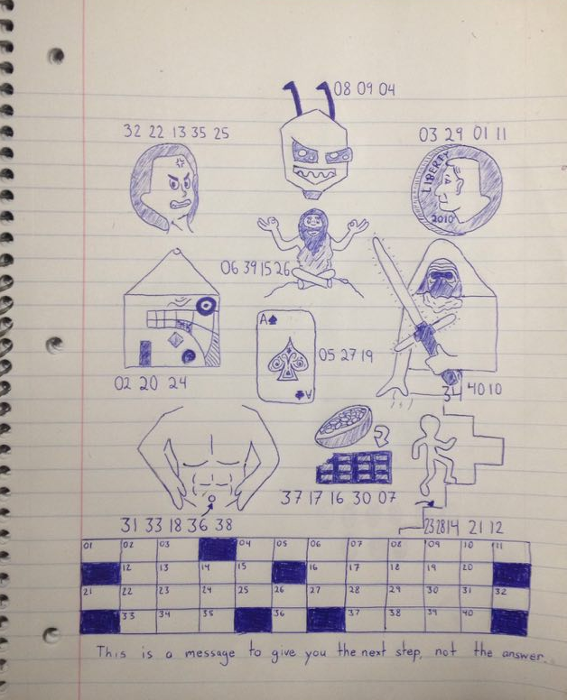
Go to Solution
75 votes, asked by Bob#11297, answered by leoll2#10281
Three logicians walk into a bar. The barman says, 'Does everybody want a drink?'
The first logician says, 'I don't know.'
The second logician says, 'I don't know.'
What does the third logician say?
Please provide a clear explanation of why each of the logicians reply in the way they do.
Go to Solution
75 votes, asked by Steven Vascellaro#34836, answered by R.M#40820
I am a computer’s nightmare, but a programmer’s best friend.
I am both the cause of a problem and the source of its resolution.
What am I?
Go to Solution
74 votes, asked by ME Ant#22253, answered by Deusovi#11876
It is my birthday today
Last year I had 5 candles
4 were lit the last was not
But today, I'll light them all
How old am I turning today?
HINT: I am not turning 5 today and...
Next year I'll have 6 candles, but I'll only light the first
Go to Solution
73 votes, asked by Zxyrra#32133, answered by Rubio#30633
Migrated from WorldBuilding SE $:)$
"Each mirror is a world of it's own," Joe explains.
"Joe, that's bulls***! Mirrors are just mirrors!" Rita proclaims.
Joe proceeds to lay out the following~
$10~Laws~of~Mirror~Universes$
- Law of Rotation: For each one orientation of a mirror (rotated spherically or in 3D space) there
is exactly one universe perfectly symmetrical to our own.
- Law of Quantity: There are infinite orientations possible in a sphere, so there are infinite universes parallel to our own. (Sidenote: Why not just have one mirror universe? Why do we need infinite parallel ones? Because moving an entire universe when you pick up a mirror seems like a lot more work then connecting to a bunch of other ones)
- Law of Non-Uniqueness: Every universe began at the same time and progressed in the exact same way, with the exception of being "flipped" as we observe in a
reflection. That means we are nothing special.
- Law of Boundaries: The line of symmetry in each case is defined by the mirror itself.
- Law of Congruent Copies: Changing the orientation of a mirror links to another exact replica of that mirror universe - they are all congruent to each
other through transitivity
- Law of Interaction: We cannot exchange matter into these universes because for every one particle that attempts to cross the threshhold, exactly one congruent particle meets it at the barrier.
- Law of Weak Reflectional Attraction: A weak force along the mirror accounts for substances "stuck" to each other across the threshhold. This is why mirrors can be dirty: the boundary has a slight pull that makes dirt, etc stay on the plane of the mirror instead of falling as if there was simply air.
- Law of Rigidity and Flatness: Boundaries such as funhouse mirrors or reflections in water serve only as distorted windows; they must be flat and rigid to allow
actual interaction.
- Law of Heat Transfer: The medium of the mirror (metal, etc) moderates heat transfer, which is why you don't feel immediate warmth when you touch
a mirror with your hand.
- Law of Medium Maintenance: That which would break the mirror surface due to pressure or momentum will do so before trying to pass through. Each new shard is its own boundary.
"Joe," says Rita, "Your 'theory' doesn't account for this."
Rita picks up a household object and demonstrates why mirrors are simple reflections of light, and nothing more.
Her demonstration produces results that would be different if there were multiple, congruent universes bound by mirrors (for example hitting the mirror with something that should have gone through if there were actually an alternative universe on the other side)
What does Rita do?
Go to Solution
72 votes, asked by Glinka#14458, answered by f''#12408
One night nine gangsters stole a gold bar. When the time came for dividing the bar, they faced a problem: two of the criminals put guns to each other's faces. Now it's up to fate whether one of them lives, they both live or both die.
While these two are dealing with each other, the others decide to continue dividing the gold bar. What is the minimal amount of pieces they should divide the bar into, so that no matter how things pan out, everyone can be given an equal share?
Scenario 1: Both gangsters blow each other's brains out. The gold must be divided evenly among the seven remaining gangsters.
Scenario 2: One gangster is quicker on the draw, and manages to take out his opponent. The gold must be divided evenly among the eight remaining gangsters.
Scenario 3: The duelling gangsters discuss their differences, come to a mutually beneficial agreement, and put away their guns. The gold must be divided evenly among all nine gangsters.
Go to Solution
71 votes, asked by generalcrispy#2444, answered by Bozman#2803
Two girls went to dinner together and both ordered iced tea. One girl pounded down five of them in about a minute, and the other took her time drinking one.
The girl who drank one died, while the girl who drank five survived. However, all of the drinks that were served turned out to contain poison.
Why did the girl that drank more iced tea survive?
Go to Solution
71 votes, asked by Tyler Seacrest#2722, answered by matega#7551
Three prisoners have a brief strategy meeting, and then are not allowed to communicate.
Each night one of the three has steak for dinner, while the other two have fish tacos. Also each night, each of the three prisoners votes for one of the following two options:
- All of us have had steak at least once.
- Don't know yet.
If a majority go with option 2, nothing happens that night. If a majority go with option 1, then they are set free if they are right, and executed if they are wrong. The distribution of votes is kept secret, so it is unknown what each of the others voted.
What should their strategy be?
Go to Solution
71 votes, asked by Alconja#5208, answered by Beastly Gerbil#18250
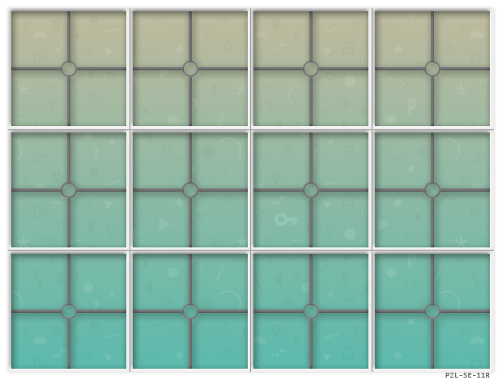
I'm going to come right out and say it: I'm kinda bored of making puzzles, but I still want those sweet, sweet imaginary internet points, so I'm phoning it in this time with a flat-pack rebus I bought at a puzzle warehouse. The only thing is, I can't really be bothered putting it together... Rather than completely waste my money though, I'm just posting it here, in case someone else wants to finish building it.
Above is a bog standard PZL-SE-11R puzzle socket that this rebus is compatible with (as I'm sure you've seen a million times before), and below are the instructions... Underneath that, are the puzzle components themselves.
Instructions:

Components:
Note: I already opened the puzzle, and discarded the packaging. The parts came as a pair of cubes, which opened out, ready to slot into the socket up the top (I think the makers have misunderstood the flat-pack concept). The cube that's in two pieces didn't break, but just came apart as it unfolded. I didn't pay attention to where it was originally joined, but I'm sure it won't make much difference...
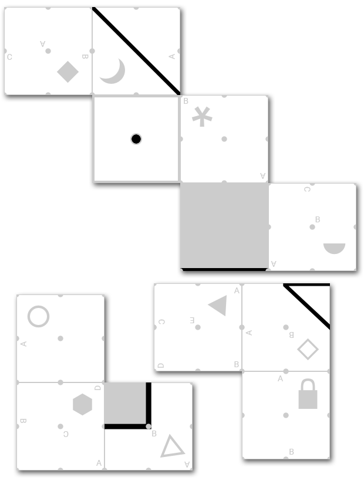
So, yeah... Feel free to finish putting it together, and then solve the resulting rebus.
Or not... Whatever...
Edit: People have solved 99% of the instructional steps in chat, but seem to have got stuck on the final rebus itself. So to nudge things along,
Hint 1:
The rebus resolves to a short and well known phrase.
Hint 2:
If you did everything correctly, there may have been an instruction that seemed arbitrary, or even unnecessary... It was, in fact, essential.
Go to Solution
71 votes, asked by Milo Brandt#4765, answered by keymaster#8739
One day, the warden of a prison is, like most wardens in puzzles, feeling a little bit capricious and decides that he wants to get rid of his prisoners, one way or another. He gathers all the prisoners in the yard and explains to them - "Tonight, I will go to each of you, hand you a key, and tell you who has your key. Each day after that, while the others are out of the cells and no one is watching, I will allow each of you to place your key in someone else's cell - and each night, you may collect the keys in your own cell. If, at any point, you are certain that everyone has the key to their own cell, you may summon me, at which point each of you will open your own cell and walk free. If anyone has the wrong key, everyone will be executed then and there. You may discuss your strategy before tonight, but afterwards no communication will be allowed regarding my game. - Oh, and by the way, if you are still here seven years from today, I will execute everyone - it'll be a big birthday for me and I want to retire!"
That night, just as promised, the warden went to each cell and gave each prisoner a key. As he handed each prisoner the key, he whispered to them the name of the person possessing the key to their cell. The keys were entirely indistinguishable from one another, but that was okay, because the prisoners had not counted on being able to tell anything about them. Indeed, the prisoners all seemed confident.
Each day for the nearly seven years, the prisoners all anonymously gave the key in their possession to someone else. Then, hardly a month before the deadline, a prisoner shouted to the warden that they were ready. All the prisoners were certain that they would live, and, lo and behold, when they put the keys in the locks to their cells, every cell opened.
What was their strategy? Exactly how many days did it take?
Hint:
The warden had learned this from his own days as a prisoner, when the same challenge was issued to him and just two other prisoners. It took only six days of trading keys before they were released.
Edit: Oops, turns out my prisoners were kind of dumb in their choice of strategy. (If anyone wants to puzzle out what I was thinking of, the information in the post about should be sufficient - but I consider the puzzle, and this question to more about the most efficient way to do it). The prisoners, if wise, can be free in less than a fortnight.
Go to Solution
71 votes, asked by bleh#17970, answered by DooplissForce#23521
I was walking down a street, when I see a door, with a security guard.
A man approaches him, and the guard flips a middle on him.
"Well that escalated quickly." you think.
The man, unfazed, replied "4."
The guard allowed him to pass.
When another man approaches, the guard did not stick one, but two middle fingers.
The second man now replies, "132."
At this time, you are completely bewildered.
You decide to approach the guard. He looks at you, and he throws both pinkies up, and sticks them together.
What do you say?
Go to Solution
71 votes, asked by Trevor Powell#9286, answered by Dr. Wharfe#23001
Inspired by this other puzzle, tell me a correct way by which adding 22 to 4 will give 82.
As in that other puzzle, these numbers are all expressed in base 10.
Go to Solution
71 votes, asked by Ivo Beckers#1748, answered by Element118#17581
One day, my Japanese wife Nono handed me two messages
580D10F20G10D13011173203443206640942092330411622053222041112
103112221032212210421142012234130580236905325A031112H0421279
05121890142726016135802622212602A22270B412230846250A73110652
6107324208322081122056
and
7109501A350726505138504112A0423A0222290331A02225302142213043
112220143341203421211204141211210524122206122112106133123072
351211071912120629222072B42061227142052361121053132221042222
23106162210121262220121281320335B204A40A10D0D0E
"I have something to tell you. Decrypt my message and you'll see", she said while smiling at me.
It took me a while but when I finally got a result I was full of joy! Why was I happy?
Hint 1
You can solve this using only pen and paper
Hint 2
My wife's name is an important clue
Hint 3
One of the characters acts as a separator
Go to Solution
70 votes, asked by Richard#4852, answered by moonbutt74#15757
A rare double-edged sword is currently on loan from the British Museum to the Magna Carta exhibition.
The sword itself is described as likely made in Germany around 1250-1330 and includes the inscription pictured below.
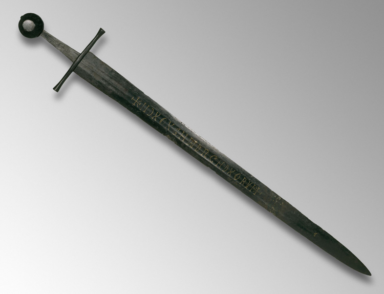
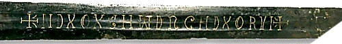
So what does +NDXOXCHWDRGHDXORVI+ actually mean?
Go to Solution
69 votes, asked by Halvard#29129, answered by Smart#27404
I remember answering this one incorrectly and when the answer was explained to me I was annoyed with myself. Here is your chance, with the original word phrasing:
Jack is looking at Anne, but Anne is looking at George. Jack is married, but George is not. Is a married person looking at an unmarried person?
A) Yes
B) No
C) Cannot be determined
The first with the correct alternative with the correct logical explanation ... (you know the drill).
Go to Solution
67 votes, asked by bleh#17970, answered by Lothar Narins#12006
One day, you enter your math classroom. On the board, there are the words POP QUIZ.
Dang it! Was it about fractions? you knew you were bad with fractions.
You look down.
$\begin{array}{|cc|} \hline \text{You can only use your brain, and paper.
} \\ \text{The number of digits in this box that are not 1 is} & \text{_______} \\ \text{The number of digits in this box that are not 2 is} & \text{_______} \\ \text{The number of digits in this box that are not 3 is} & \text{_______} \\ \text{The number of digits in this box that are not 4 is} & \text{_______} \\ \text{The number of digits in this box that are not 5 is} & \text{_______} \\ \text{The number of digits in this box that are not 6 is} & \text{_______} \\ \text{The number of digits in this box that are not 7 is} & \text{_______} \\ \text{The number of digits in this box that are not 8 is} & \text{_______} \\ \text{The number of digits in this box that are not 9 is} & \text{_______} \\ \hline \end{array}$
Hint.
All of the blanks are not mostly the same number.
Go to Solution
67 votes, asked by WendiKidd#10, answered by CaptainRad#320
I found this puzzle online:
On the top floor of a castle lives a princess. The floor has 17 bedrooms arranged in a row. Each bedroom has doors connecting to the adjoining bedrooms as well as to the outside corridor. The princess sleeps in a different bedroom each night by opening the door to an adjoining bedroom and spending the night and the next day in that room.
One day a prince arrives at the castle and is desirous of marrying the princess. The guardian angel at the castle tells him of the princess' sleeping patterns and informs him that each morning he may knock on one of the outside doors. If the princess happens to be behind that door, she will open it and consent to marry him. The prince also has a return ticket to his kingdom in 30 days, so he can make at most 30 attempts. Can the prince win the hand of the princess, and if so, what is his strategy?
An unstated assumption here is that the princess can move to any adjacent room (she's not restricted to moving in one direction). So a possible sequence could be 3, 2, 3, 4, 5, 4, 3, 2, 1, 2...
Further down the thread at the link, this solution is given:
The Prince should knock on the second door from one of the ends of the corridor (call it door #2), and knock on the next adjacent door each successive day until he reaches the second door from the opposite end of the corridor (door #16). The day after that, he should begin the same process in reverse order (meaning he will knock on the 16th door two days in a row). By the time he reaches his starting point (door #2 on the 30th day), he will have found the princess.
Number the doors 1 thru 17.
If the princess occupies an even numbered room on the day the prince first knocks on a door (#2), then she will either occupy the same room he knocks on or she will be an even number of rooms away. Since both move to an adjacent room each day, this will hold true so she will never be in a room adjacent to the one he knocks on, and thus never be in a position to move past him the next day. She will have nowhere else to go by the time he reaches the 16th door, and will have by then been located. If she, on the other hand, was in an odd numbered room when he began, then she will be in an even numbered room when the prince starts the process again on day 16 (when he knocks on door #16 the second time).
I've been trying to follow the solution, but I don't quite get it. The main assumption the logic in the solution seems to hinge on is this: "she will never be in a room adjacent to the one he knocks on, and thus never be in a position to move past him the next day." I can't figure out what evidence from the puzzle supports that assumption. If we begin knocking at door #2 and the princess is in room #3, our next move (following this solution) will be to knock on door #3. But at this point the princess could have moved to room #2, and we will keep moving to higher numbered rooms, and the princess could easily remain in the lower-numbered rooms.
So I'm having trouble understanding why this is the solution. Can someone explain it more clearly/in a different manner? Why will this process ensure the princess is found?
Go to Solution
66 votes, asked by Anonymous#0, answered by Sleafar#15632
So I was just browsing Puzzling as usual, when I stumbled upon a... to put it mildly, "strange" question:
The question seems to be permanently deleted now...
For those who disabled GIFs in their browser, here are pictures that together form the whole webpage of the question: One, two, three. The question score constantly gets lower and when you hover over the word "clouds" (sorry for forgetting doing that in the GIF) a tooltip appears which says:
to which I always returned to for orientation and only changed the height when I had to
Edit: Thanks to Sleafar for stitching all three parts together. The missing parts between part 2 and 3 do not contain anything important.
Since the colored ciphertexts are hard to read:
Orange: HUSOQTLNBSSALRDIDPNOKHFTHEXJVMDDJCCNCMMOTRTFRETJTXZGSBUPWRNOLZYVIRSHDEQKDRXVTQGRNMOSXDFNWEAINGWSQBBQYXFTWFHECINGVSO
Yellow: NJVZVOGYEVSGOGSJRKBASPBFOQMFHFJKUFEG
White: ITLAFSGWHOBTCHIEUOHETLHDVENSLESECDOAI
Blue: MGQPHPGRNKEAWQYG
Green: UDWTTERUDCTONOHGON
Red: ESTXHMWETZOYRIJOM
Gray at the bottom of the page:
To the ##### of the ###
The profile image is also a GIF, and since the quality of it in the video is bad, here's a larger version of it. I didn't want to include it directly in this post since it's kind of annyoing.
And again, for those who can't run GIFs, the profile image consists of six parts: First, second, third, fourth, fifth, sixth.
Hint #1:
The substring "I started from the seemingly perfect state, with clouds (to which I always returned to for orientation and only changed the height when I had to) in front of me and earth below" primarily gives instructions how to rotate the cube when labelling it (keeping the "seemingly perfect state", of course), although one part of it also tells how to hold the cube when starting to "reconsider the self-image".
IMPORTANT EDIT: (SPOILERS/PARTIAL GIVEAWAY)
How do I put this... I apparently used a fake Rubik's cube when making this puzzle (without me knowing it). Sorry for the waste of energy and time if you tried to solve this, I have no excuse for it. The color scheme my cube has is this one. I also gave away the orientation here. You can downvote this into oblivion if you want, I'd certainly understand it.
Hint for Orange:
This isn't really a cipher, even though it does have to do with cryptology. Most of it is just junk, so the plaintext isn't actually 115 characters long.
What are the plaintexts of all the ciphers (including the gray text at the bottom)? Please add reasoning, not only the solution.
Go to Solution
65 votes, asked by Mike Earnest#10615, answered by Lopsy#1752
You die, and awake in Hell. Satan awaits you, and has prepared a curious game. He has arranged $n$ quarters in a line, going in the east/west direction. He placed the coins at the ends tails up, and all others heads up, like so:
$$
\text{T H H H }\cdots \text{ H H H T}
$$
Satan explains the rules.
- Once a day, a coin is removed from the east end, and placed on the west end.
- If the coin was initially tails-up, then you get to choose whether the coin is placed heads up or down.
- If it was initially heads-up, then Satan gets to make this choice.
- If the coins are all heads up at the end of a day, you get to leave Hell.
Satan will of course try his hardest to make sure you never leave.
For example, when $n=5$, we start with $\text{T H H } \color{red}{\text H} \color{green}{\text{ T}}$. The first day is your choice; if you choose heads, the arrangement becomes $\color{green}{\text{H }}\text{T H H } \color{red}{\text H} $. The next three days, however, will be Satan's choice. He may fight back on the second day by choosing tails, resulting in $\color{red}{\text{T } }\color{green}{\text{H }}\text{T H H } $.
Is there a strategy that eventually guarantees your salvation? Or can Satan conspire to keep you in Hell forever?
Addendum: To give credit where it is due, this puzzle from The Puzzle Toad, (under the name "Zeroise Me") which is a superb collection of similarly clever and enjoyable conundrums.
Go to Solution
64 votes, asked by Maria Deleva#29050, answered by Glorfindel#11110
The rules are the same as for a normal sudoku puzzle. The only thing different is that instead of numbers for clues, you have greater than/less than (> <) signs between the cells.
Have fun solving!
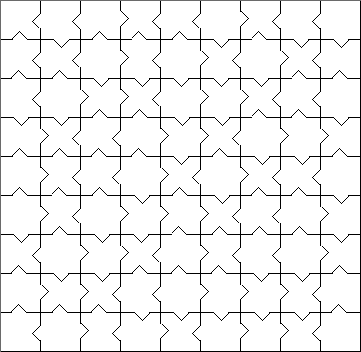
Go to Solution
64 votes, asked by Xenocacia#30254, answered by Steven Eccles#30345
I made this up myself a while back, just thought I'd share:
The key to this riddle is only for you
Below are instructions, above this the clue
First strike the one near the head of a year
Then remove he who begins a cheer
Next take away the end of a tunnel
Then let us go to solve this puzzle
What you first took you must now take again
With three you are left, but fret not dear friend
Fattest to front and thinnest to rear
Add in two "eyes" and all becomes clear
Like the title says (I'm not very good with titles), you're looking for a number here.
Edited to add a hint:
As you can tell from the title, I tend to be very literal with my words.
Go to Solution
63 votes, asked by Mike Earnest#10615, answered by gtwebb#12760
This is an entry to the 12th fortnightly challenge.
Alice: Would you tell me, please, which way I ought to go from here?
Cheshire Cat: That depends a good deal on where you want to get to.
Alice: I don't much care where...
Cheshire Cat: Then it doesn't much matter which way you go!
Alice: ... so long as I get somewhere.
Cheshire Cat: Oh, you're sure to do that, if only you walk long enough.
Alice is in the most puzzling part of Wonderland yet. Following the white rabbit, she emerged found herself in the middle of a hedge maze. The rabbit provided her with a map before scurrying off, but it only seemed to make her more confused. She needs your help to figure out how to escape the maze.
The maze has 12 potential exits, numbered on the map. Each of the squares labeled A, B, C and D represent smaller copies of the entire maze. These submazes each have their own submazes, like infinitely many nested Matryoshka dolls, except that every doll has four dolls nested inside it.
Below the map is a bird's eye view of the actual maze, where you can see how the passages become smaller and smaller in a fractal fashion (only three levels of recursion are actually pictured). Fortunately, Alice has an ample supply of cakes and elixirs to change her size as necessary.
One last note: the little orange curve between B and D is a bridge which can be crossed over and walked under, but jumping from the bridge to the path below is not allowed.
Map

Bird's Eye View
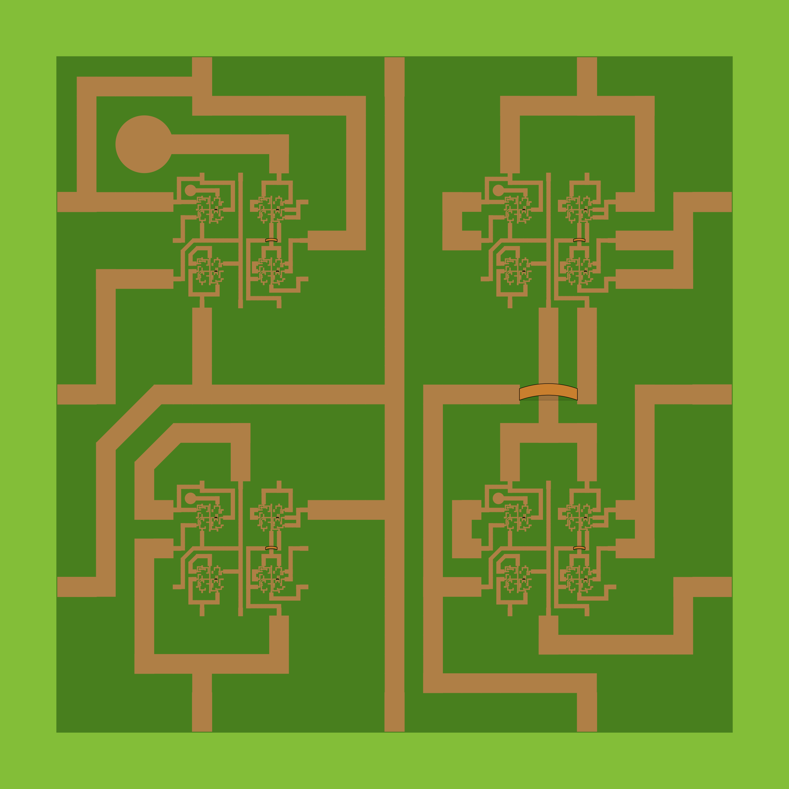
Sources
Though I created this particular puzzle, the concept of a fractal maze is nothing new. Here are some other notable examples of cool fractal mazes, which served as inspiration for this one.
As far as I can tell, the concept of a fractal maze was created my Mark J. P. Wolf. He has made at least two mazes, taken from mathpuzzle.com.
These are from the blog Skeptic's Play:
Two devious looking mazes which I found referenced in this forum, but couldn't find the original sources for.
Go to Solution
62 votes, asked by 2012rcampion#9718, answered by elias#8822
This weekend, while totally minding my own business and in no way being suspicious, I just happened to come across the following interesting document:

Left page: download as TIFF (100,203,616 bytes) / JPEG (20,003,558 bytes)
Right page: download as TIFF (100,784,464 bytes) / JPEG (20,221,606 bytes)
The thumbnail doesn't do it justice: here's a small sample of the upper-left corner at full resolution from the scanner:

It looks like some sort of paper data archiving format. I need to find out what's on there (purely out of curiosity, of course!) but I have no idea where to start. I heard that you guys like solving mysterious messages, so do you want to give it a shot?
Oh, by the way, I pulled some more papers out of the incinerator at the same time as that document. I'm pretty sure they're related, maybe they'll be helpful in figuring out how to decode it.
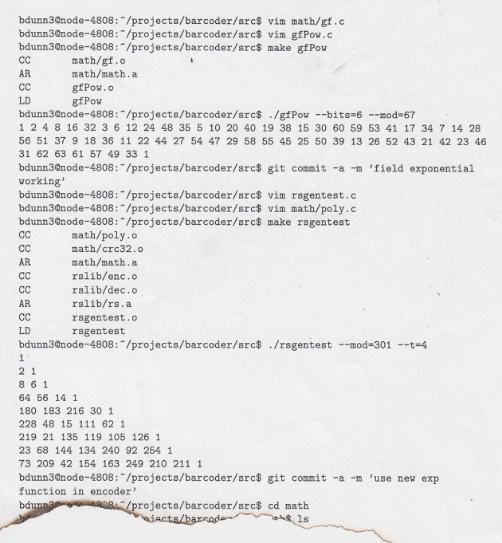
(click to enlarge) download as TIFF (63,056,232 bytes) / JPEG (8,353,067 bytes)

(click to enlarge) download as TIFF (74,861,272 bytes) / JPEG (12,290,125 bytes)
Puzzlemaker's note: this puzzle will be 'officially' solved when you successfully extract a computer file from the two-page document at the top of this question. Anything in that file is more of an easter egg than a part of the puzzle.
Go to Solution
62 votes, asked by Puzzle Prime#14140, answered by 2012rcampion#9718
The puzzle below is part of a Puzzle Crime Story I have started on my website, but will skip the details here (you can see other puzzles from the series here and here). In short, you have the following rectangular card which has the word "SIN" written on one side and a bunch of letters/symbols on the other. You must figure out a 4-digit number encoded in the card. I am sharing the puzzle here because I've noticed nobody has figured it out yet and want to decide whether to simplify it a bit.
front side
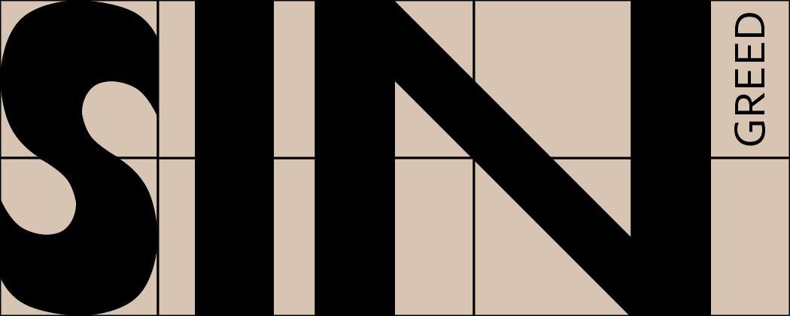
back side (turning the card left-to-right)
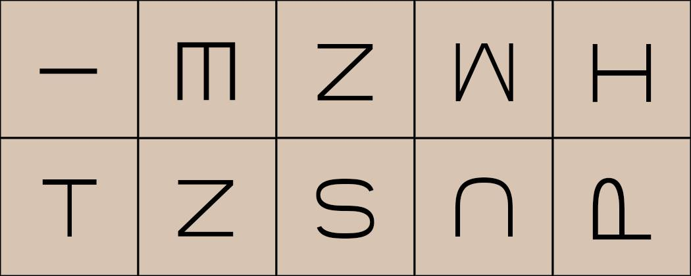
Go to Solution
62 votes, asked by Rubio#30633, answered by Brian Rushton#10582
$$\bbox[orange]{\begin{array}{rcl}\\\hline\huge\ \ \star\ \ \star\ \ The&\huge{Puzzling}&\huge{Times\ \ \star\ \ \star\ \ }\\\hline\\\end{array}}$$
Vol. 4, No. 1 $\raise 2pt \tt{\large{\ \ \ \ \ \ \ \ \ \ \ \ \ \ \ \ \ MONDAY,\ JANUARY\ 9^{th},\ 2017\ \ \ \ \ \ \ \ \ \ \ \ \ \ \ \ }}$ Price: One
$\raise 55pt\begin{array}{c}\mathbb{\large PSE\ R\small INGS\ \large I\small N\ THE\ \large N\small EW\ \large Y\small EAR!}
\\\hline\\\small\text{We here at }\ The\ Puzzling\ Times\ \text{ wish}\\\small\text{to wish all of our readers a very happy}\\\small\text{2017 — we're off to a terrific start thus}\\\small\text{far and hope to be there with all of you}\\\small\text{to see what this new year will bring us.}\\\small\text{So, farewell 2016 ... and bring on 2017!}\\\hline\end{array}$
$$\begin{array}{lll}\hline
\bf Y\scriptsize\text{OU'D HAVE TO BE BLIND}\ &&\ \ \ \ \ \ \ \ \ \text{— Li'l Tidbits —}\\
\text{not to have noticed the} \ &\ \tt{p.1 \ —Welcome\ 2017!} &\ ·\small FTC\#24: \rm Grid–Deduction!\\
\text{new styles of puzzles that} \ &\ \tt{p.2 \ —Rebus'o'Rama!} &\ ·\small Farewell\ to\ Hats \ :(\\
\text{have cropped up with the} \ &\ \tt{p.3 \ —What's\ New\ PSE} &\ ·\small New\ 40K\ Club\ Member!\\
\text{new year! We've seen a} \ &\ \tt{p.4 \ —Notes\&Letters} &\ ·\small New\ 10K\ Club\ Member!\\
\text{great series of Rebus and} \ &\moveleft{2pt}{\smash{\Rule{.2ex}{18.9ex}{0ex}}\rlap{\Rule{54.2ex}{.4ex}{0ex}}}&\smash{\Rule{.2ex}{18.9ex}{0ex}}\phantom{xxxxxxxxxxxxxxxxxxxx}\smash{\Rule{.2ex}{18.9ex}{0ex}}\\
\text{Cryptic Rebus puzzles, a} \ &\ \text{Be sure to check out} \ &\ \text{check out which hats you}\\
\text{fresh batch of Grid styled} \ &\ \text{the FTC#23 roundup} \ &\ \text{got, and which ones you}\\
\text{logic puzzles for FTC#24} \ &\ \text{post: there were some} \ &\ \text{missed! You can also see}\\
\text{and a }bunch\text{ of numeric} \ &\ \text{wonderfully festive} \ &\ \text{which of your fellow PSE}\\
\text{sequence questions. Just} \ &\ \text{seasonal puzzles.} \ &\ \text{puzzlers topped the Hats}\\
\text{goes to show, you never} \ &\ \text{Don't forget to take a} \ &\ \text{Leaderboard, and see who}\\
\text{can tell what we'll see} \ &\ \text{look at the Winter} \ &\ \text{beat you in the rankings}\\
\text{next on Puzzling SE!} \ &\ \text{Bash blog post, too—} \ &\ \text{(and who you beat out!).}\\
\hline\end{array}$$
$$\begin{array}{c}\hline\mathbb{\large\ \ \huge T\large HE\ \huge M\large AIN\ \huge E\large VENT\ \ }\\\hline\end{array}$$
$\bf T \scriptsize ODAY'S\ \normalsize M \scriptsize AIN\ \normalsize E \scriptsize VENT\ \scriptsize PUZZLE$ comes from Rubio, who is pleased to have his first puzzle featured in this section. He had this to say:
$$\small\begin{array}{c}This\ is\ an\ idea\ I've\ had\ in\ my\ head\ for\ a\ while\ now\ and\ I\ was\ finally\ able\ to\ \\put\ all\ the\ pieces\ together\ the\ way\ I\ had\ envisioned.\ I\ hope\ you\ enjoy\ solving\\it\ as\ much\ as\ I\ enjoyed\ creating\ it!\end{array}$$
So—on with the puzzle.
$$\boxed{\text{The clue is:}\ \bf{Photo Journalist?}\\
\\\
\\\rm\text{Cipher Text:}\\
\ \ \ \bf\text{yand sfwh tou the" forand gharar qgh yand thp forand qgh}\ \
\\
\ \ \ \text{ando owo thp}
\ \ \ \text{sfwh tou thp qgh yand oow}\ \ \ \\
\ \ \ \text{qg qgh yand qwith thp forand qgh}
\\\
\\\bf{What\ Am\ I?}}
\require{action}\require{enclose}\llap{\smash{\raise{5pt}{\moveright{1ex}\toggle{\scriptsize\enclose{circle}[mathcolor=white]{\rlap{\begin{array}{c}\\\smash{\lower{4ex}\color{silver}{\Rule{14ex}{3ex}{0ex}}}\\\smash{\lower{4ex}\color{silver}{\Rule{12ex}{10ex}{0ex}}}\\\smash{\lower{3ex}\color{silver}{\Rule{8ex}{15ex}{0ex}}}\\\smash{\lower{1ex}\color{silver}{\Rule{2ex}{18ex}{0ex}}}\end{array}}\scriptsize\color{black}{\begin{array}{c}\phantom{\Rule{14ex}{0ex}{0ex}}\\scratch\\off\ for\\hint\\\ \end{array}}}}
{\enclose{circle}[mathbackground=white]{\scriptsize\begin{array}{c}\\\ \\\ \ \rm Y\rlap{\smash{\raise{2.9ex}{\rm\ 0}}}\lower{2.9ex}{\tt\ c}\ \ \rlap{\smash{\raise{4ex}\rm f}}\lower{4ex}\tt{5}\ \ \ \ \ \ \ \ \ \ \ \ \tiny\\\ \end{array}}}\endtoggle}}}
$$
Hints: 1983-1985. Grade 2. Apple.
This is a riddle, cipher, enigmatic-puzzle, knowledge, and ... visual puzzle?! ... Good luck!
$ $
$\begin{array}{c}\hline\mathbb{\large C \small RYPTICS\ \large C\small ORNER}\\\hline\end{array}$
Wherein we present a few quick Cryptic Clues...
- Italian food left unfinished, you and I trade places and start Lasertank$ $ing—first interesting, now greatly perplexing. (8)
- Chimney part of Hanoi towers? (5)
- Replace old partner with something new. (8)
$ $
$\begin{array}{c}\hline\mathbb{\large C \small OLUMNS}\\\hline\end{array}$
$$\begin{array}{l|l|l}\hline
\scriptsize\text{Site Scope}^\text{TM}&\scriptsize\text{Puzzler's Q&A}&\bf E\scriptsize\text{DITORIAL}\\
\bf I\scriptsize\text{S SITE REP EVERYTHING}\ &\ \bf W\scriptsize\text{HAT'S A RED HERRING} \ &\ \\
\text{it's cracked up to be? Do} \ &\ \text{and why is it that many} \ &\ \text{Why are}\ ``\text{simple" puzzles}\\
\text{I even need it? What's it} \ &\ \text{puzzlers—both setters} \ &\ \text{often considered}\ ``\text{bad" or}\\
\text{useful for, and how do I} \ &\ \text{and solvers alike—hate} \ &\ \text{of low quality, and end}\\
\text{earn it? We are going to} \ &\ \text{them? Are they all just} \ &\ \text{up being downvoted into}\\
\text{share some valuable tips} \ &\ \text{fish-haters?} \ &\ \text{oblivion? Isn't there room}\\
\text{on how you (yes, YOU)} \ &\ \text{For people who haven't} \ &\ \text{on PSE for some easier}\\
\text{can gain reputation, and} \ &\ \text{heard the term before,} \ &\ \text{fare, to help newer users}\\
\text{what you can look} \ &\ \text a\ red\ herring\ \text{is an} \ &\ \text{get their bearings without}\\
\text{forward to as you reach} \ &\ \text{element of a puzzle that} \ &\ \text{having to tackle the more}\\
\text{higher rep levels.} \ &\ \text{is there only to serve} \ &\ \text{challenging puzzles that}\\
\text{First, you should make} \ &\ \text{as a distraction from} \ &\ \text{more experienced users}\\
\text{sure you have taken the} \ &\ \text{a puzzle's real}\ ``\text{meat"}, \ &\ \text{are accustomed to?}\\
\text{Site Tour, as it gives} \ &\ \text{which can be frustrating} \ &\ \text{Often, larger puzzles are}\\
\text{general information on} \ &\ \text{to have to root out and} \ &\ \text{too daunting for newer}\\
\tiny\text{CONTINUED ON PAGE 4} \ &\ \tiny\text{CONTINUED ON PAGE 3} \ &\ \tiny\text{CONTINUED ON PAGE 4}\\
\end{array}$$
(Solving this puzzle, while not particularly challenging to do, requires a couple of steps of finding the right way to interpret information and the right way to do it. Partial solutions, while not strictly necessary, may prove helpful.)
—HINTS—
helpfulness level 0:
The choice of how to present this puzzle was not arbitrary. There's a specific reason for it.
helpfulness level 1:
There's an obvious main riddle, some cryptics, and a few bits of spot-the-reference fun in here. But don't be fooled by the presentation. Solving the main riddle requires thinking (and reading) outside the box.
helpfulness level 2:
Pay attention to (all) the tags.
helpfulness level 3:
An awesome and fantastic tools site lists this encryption as a Substitution Cipher method code. From my testing, though, you can't decode the cipher-text there, so no harm in giving you that site's domain name... so I just did.
helpfulness level 4:
$\lower{1.5pt}{\bf W\tiny\text{HAT'S A RED HERRING}}$ is a red herring. What isn't a red herring?
helpfulness level 5:
Many of you have seen this encoding within the last week or two, but weren't paying it any attention.
People who were paying attention, probably didn't see it.
helpfulness level 6:
üîí LOCKED (Unlocks only if needed, and *only* after cipher is broken!)
Go to Solution
61 votes, asked by Qaisar Satti#23204, answered by Techidiot#30887
Can any one know how to crack this? I got this as a challenge.

Go to Solution
60 votes, asked by GentlePurpleRain#4421, answered by Aggie Kidd#9951
As an alphabet aficionado, I can make you laugh long into the night.
As a make of Japanese vehicle, I can keep your surroundings clean and beautiful.
As an execution apparatus, I make you laugh despite not maturing.
As a mixed-up romance, I lead tens of millions.
As a gardening tool, I provide weekend evening entertainment and provide guidelines for proposing.
As a reddish-brown meadow, I dazzle you with tricks.
As a fighting knife, I make popular music and navigate a maze.
As a speech-impaired aquatic athlete, I am your friend.
As a renter, I am your doctor.
Who am I?
Go to Solution
60 votes, asked by Rafe#2225, answered by Zyerah#20
You are a prisoner in a room with 2 doors and 2 guards. One of the doors will guide you to freedom and behind the other is a hangman --you don't know which is which.
One of the guards always tells the truth and the other always lies. You don't know which one is the truth-teller or the liar either.
You have to choose and open one of these doors, but you can only ask a single question to one of the guards.
What do you ask so you can pick the door to freedom?
Go to Solution
59 votes, asked by Ankoganit#25412, answered by Milo Brandt#4765
The town of Squareshire has six streets: four sides of a square and the lines joining the midpoints of opposite sides.
$\hskip2in$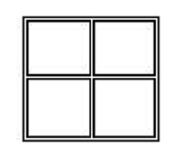
A policeman is chasing a thief along these streets. If they are ever on the same street, then the policeman can shoot the thief. The policeman runs slightly faster than twice the thief (say 2.0001 times the speed of the thief). How can he shoot the thief?
Source: Moscow mathematical Olympiad, 1978
Clarification:
The squares between the streets contain houses and walls, so the policeman can't see the thief unless they're on the same street. He has no idea about the exact location and strategy used by the thief.
(Thanks to and Milo Brandt and Falco for the suggestion on clarification)
Go to Solution
59 votes, asked by GOTO 0#4394, answered by Dr Xorile#15942
It is known that when logicians get drunk they may claim not to know the answer to a question when they should know it very well.
After a night of heavy drinking at the bar, three logicians decide that it's time leave. Before they walk out of the place, the barman asks "Is anybody able to drive back home?".
The first logician says "I don't know".
The second logician says "I don't know".
The third logician says "I don't know".
How many logicians must be drunk at a minimum? Provide reasoning.
Go to Solution
59 votes, asked by dcfyj#22684, answered by Siyual#17596
While Bob was walking down the street one day, he met a wonderful woman that was attractive and smart and a great conversationalist.
After they had been chatting for a while the woman looked at her watch and quickly got up and scribbled something down while saying "I have to go, I'm running very late. Here's my phone number, if you know my name you can call me, otherwise don't bother."
This is what she wrote on the paper:
1.4- 2-2.2- 1.4- 2.3- 2-2.2- 1.4- 1-4. 2-2.2- 3-2. 2-2.2- 1.4-
4-1. 2-2.2- 1.4- 4.1- 2-2.2- 4.1- 2-2.2- 4-1. 2-2.2- 1.4-
2.3- 5- 2-2.2- 1.4- 2-2.2- 1.4- 4.1- 2-2.2- 2-3. 2-2.2- 1.4- 5.
1.4- 4-1. 2-2.2- 4-1. 2-2.2- 5. 2-2.2- 1.4- 3-2. 2-2.2- 1.4- 3-2. 2-2.2- 1.4-
4-1. 2-2.2- 1.4- 4.1- 2-2.2- 4.1- 2-2.2- 4-1. 2-2.2- 1.4-
2.3- 4.1- 2-2.2- 1.4- 3-2. 2-2.2- 1.4- 2-2.2- 2.3- 5.
1.4- 4-1. 2-2.2- 4-1. 2-2.2- 5. 2-2.2- 1.4- 3-2. 2-2.2- 1.4- 3-2. 2-2.2- 1.4-
5. 2-2.2- 3.2- 2-2.2- 3-2. 2-2.2- 1.4- 5.
2.3- 2.3- 2-2.2- 4-1. 2-2.2- 3.2- 2-2.2- 2.3- 5- 2-2.2- 1.4- 5. 2-2.2- 1.4- 3-2.
5. 2-2.2- 3.2- 2-2.2- 3-2. 2-2.2- 1.4- 5.
1.4- 4.1- 2-2.2- 1.4- 5. 2-2.2- 2.3- 2.3- 2-2.2- 5. 2-2.2- 1.4- 3.2- 2-2.2- 2.3- 2-2.2- 5. 2-2.2- 1.4- 3-2.
1-4. 2-2.2- 1.4- 5. 2-2.2- 2.3- 4.1- 2-2.2- 2.3- 5- 2-2.2- 1.4- 3-2. 2-2.2- 1.4- 5. 2-2.2- 2.3- 5-
4-1. 2-2.2- 1.4- 4.1- 2-2.2- 4.1- 2-2.2- 4-1. 2-2.2- 1.4-
1-4. 2-2.2- 1.4- 5. 2-2.2- 2.3- 4.1- 2-2.2- 2.3- 5- 2-2.2- 1.4- 3-2. 2-2.2- 1.4- 5. 2-2.2- 2.3- 5-
5. 2-2.2- 3.2- 2-2.2- 3-2. 2-2.2- 1.4- 5.
2.3- 5- 2-2.2- 1.4- 2-2.2- 1.4- 4.1- 2-2.2- 2-3. 2-2.2- 1.4- 5.
1.4- 3-2. 2-2.2- 1.4- 5. 2-2.2- 1.4- 3.2- 2-2.2- 5. 2-2.2- 1.4- 5.
5. 2-2.2- 3.2- 2-2.2- 3-2. 2-2.2- 1.4- 5.
5. 2-2.2- 3.2- 2-2.2- 3-2. 2-2.2- 1.4- 5.
2.3- 1-4. 2-2.2- 2.3- 1.4- 2-2.2- 1.4- 2.3- 2-2.2- 2.3- 1.4-
5. 2-2.2- 3.2- 2-2.2- 3-2. 2-2.2- 1.4- 5.
5. 2-2.2- 3.2- 2-2.2- 3-2. 2-2.2- 1.4- 5.
1.4- 3-2. 2-2.2- 1.4- 5. 2-2.2- 1.4- 3.2- 2-2.2- 5. 2-2.2- 1.4- 5.
1.4- 5. 2-2.2- 1.4- 4-1. 2-2.2- 3.2- 2-2.2- 1.4- 2-2.2- 1.4- 3-2.
1.4- 4.1- 2-2.2- 1.4- 5. 2-2.2- 2.3- 2.3- 2-2.2- 5. 2-2.2- 1.4- 3.2- 2-2.2- 2.3- 2-2.2- 5. 2-2.2- 1.4- 3-2.
4-1. 2-2.2- 1.4- 4.1- 2-2.2- 4.1- 2-2.2- 4-1. 2-2.2- 1.4-
1.4- 4.1- 2-2.2- 1.4- 5. 2-2.2- 2.3- 2.3- 2-2.2- 5. 2-2.2- 1.4- 3.2- 2-2.2- 2.3- 2-2.2- 5. 2-2.2- 1.4- 3-2.
5. 2-2.2- 3.2- 2-2.2- 3-2. 2-2.2- 1.4- 5.
1.4- 3-2. 2-2.2- 1.4- 5. 2-2.2- 1.4- 3.2- 2-2.2- 5. 2-2.2- 1.4- 5.
For obvious reasons, Bob was rather confused for a while. He realized that in their entire conversation she had never said her name.
All the same, he began trying to figure out the message she had written him. He was beginning to despair but then as he finished working out what she had written him, he immediately knew her name and called her number the first chance he got.
What was her name?
Go to Solution
58 votes, asked by Bailey M#11475, answered by Alconja#5208
You've trekked through jungle and tundra, across mountaintops and deserts, into giant caverns and beneath the ocean to find the person known as The Oracle. Finally, after all your hard work, you find him. He sits alone in an opulent palace, never moving, never blinking, allowing each visitor to ask one question of him. You take a moment to catch your breath after climbing the steps to his throne, gather yourself, and ask:
"What is the meaning of life?"
You were told that he would answer one question for each person, and this question has been nagging on your mind.
What you were not told is that his answers were not quite straightforward.
As he begins to speak, you scramble to grab your notepad and begin writing. At the end of his message to you, you read back what he's said. "What?", you ask out loud, audibly confused.
Of course, The Oracle does not answer.
To start, stay within the pathway of general glee,
though stay clear of the law faery, who flits about wildly.
The road third-least taken leads to you and I in flight.
Head north 'til you see the reverse, then once more north to the burial site.
When five becomes square, it may lead to confusion;
behead the basilisk, an ironic inclusion.
Before two sharp curves and the ring of sorcery,
stand still, close your eyes, and count aloud past three.
In the air - do you hear it? The water baby screams.
Let our own misgivings start and end in our dreams.
A quixotic elf and I stand at the gates -
succumb to the virus, and the city awaits.
As you approach the arbor, I wait in between.
Clutch your keepsake as the first enemy's heard and seen.
Will being stuck in all this goo truly help you see?
Primarily, primarily; whip around, forcefully.
Between the lines you'll find your answer, definitively twisted;
yet in the shadows aligned so clearly you'll be surprised you missed it.
Can you discover the meaning of life from The Oracle's message?
HINT 1:
The Oracle speaks quite cryptically, don't you think? (I've added a new tag to the puzzle that should add some clarification to it. Hopefully that should give you some idea as to how the puzzle should be solved - and more importantly, some knowledge on how it shouldn't.)
HINT 2:
The two most important words to figuring out this puzzle's big gimmick are "definitively twisted".
Stanza-Specific Hints:
Stanza 1: This couplet gives you a key cryptic crossword indicator, but don't get caught up on the result making any sense. In fact, the couplet tells you exactly which words to use and which to avoid. Keep in mind somewhere in there is a definition!
Stanza 2: Pretty much everyone has identified 'u' and 'i' from this couplet, and you're all on the right track. Most of the words in this couplet aren't indicative of words, per se.
Stanza 3: If five becoming square actually meant the number 25, that wouldn't lead to confusion at all, would it? Harry Potter's version of the basilisk is not the only one out there.
Stanza 4: The last number reference leads to confusion. This one does not. Make sure you're counting aloud. To figure out the rest of the couplet, getting out a pen and paper and illustrating might help.
Stanza 5: I already mentioned that 'in our dreams' is just in this couplet as a rhyming mechanism. There's only one other place where I do that, and I'll identify it. The cryptic here has already been solved. Which words weren't part of it? Those may help you with another stanza...
Stanza 6: This one is a fairly straightforward clue. Open your cryptic-solving mind, remember the gimmick of the puzzle, and look for a keyword or two to get things going.
Stanza 7: You already know at least one word here that doesn't belong with this couplet. The rest of the couplet should be easily solvable, especially if you don't worry about the definition until you solve the cryptic.
Stanza 8: Will 'truly help you see' truly help you see? Not really.
Stanza 9: The first line means two things. You already know what 'definitively twisted' means, which is a good start. 'In the shadows' is a reference to the cryptic clues, which are apparently aligned so clearly! I'm surprised you missed it.
All stanzas: You will find pretty quickly that the words all share a specific property. It's not an obscure property, either (I promise).
All stanzas: The best way to approach this puzzle is to solve a stanza's cryptic clue, find its definition, then solve that stanza's cryptic clue with the words in the previous stanza's definition excluded (obviously); lather, rinse, repeat. Luckily, you've already been given a head-start with both a cryptic clue solved and its definition identified.
6/11/2015 Update: Hey, guys! I've opened a bounty on this puzzle as well as my other unanswered puzzle as a way of saying thanks for the bounty you helped me earn on this excellent puzzle. As such, I want this puzzle to be solved - my bounty shan't go to waste! If there are any questions I can answer to confirm whether or not you're going in the right direction, please don't hesitate to ask them in the comments. If I feel they don't give too much of the puzzle away, I'll be happy to answer them.
6/15/2015 Update: 2 days left on the bounty - someone better solve this! Pete and Fillet have given you all you need to work with. I can also conclusively tell you that the ninth stanza is specifically instructions, rather than another clue to the puzzle. Once again, I'm happy to answer any questions! (I've also added stanza-specific hints, in hopes that one or two might kickstart the solution to this puzzle.)
6/16/2015 Update: Hopefully this will be the last time I update this puzzle! I just want to note that partial answers are totally awesome for this puzzle. If the final answer is spread among multiple posts, I'll post a community wiki answer encompassing everything (in fact, I may do that anyways). When all's said and done (or, tomorrow before it expires), I'll give the bounty to whomever's solved the most clues! Good luck, happy puzzlers! You're doing awesome so far (just sometimes off in the wrong direction)!
Go to Solution
57 votes, asked by Egor#6163, answered by Foami#26356
Stolen from babies as soon as I'm born,
Right from my maker by force I am torn
Pale at first, weak, and infirm,
Oh how I'll change in my ultimate form.
Billions of creatures will toil away
Changing me subtly, day after day.
I will be ready, it won't take too long
And then I'll be sharp, and I will be strong
I can be orange, yellow, or blue
And that will be it, that's the last clue.
Go to Solution
57 votes, asked by Kelsey Abreu#33241, answered by Zyerah#20
Currently stuck in this game of Minesweeper. Can't seem to find any openings, so what would be the moves you would take and why?
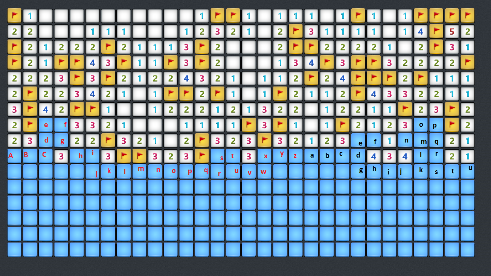
Go to Solution
57 votes, asked by Beastly Gerbil#18250, answered by Beastly Gerbil#18250
You now know where your wife is, so you hop on a plane and fly over to France. You reach the house and burst through the front door, only to find the house deserted. In despair, you slump into a chair in the kitchen. You then notice a note pinned to the table in front of you:
To xxxxx,
/
Now it seems you misunderstood me, despite my letters to you. I don’t need any help, although I’m happy you came. I told you to please not come looking, but it appears you have anyway. Honestly, again, you have to return.
I’ve been forced to disappear. You must go back to the family to make them see. Make sure you check on the kids, and do not forget, before going home.
Care for my family. This will not be easy for them to take. Tell them I was hiding after being afraid someone was coming, and that I ran. I was scared, but over time the fear reduced and I became less and less cautious so I then left my carers when things got out of hand. When I heard you were coming to find me before trying to save me I had to return to them and to hiding. We couldn’t afford to meet.
Enough of that, I don’t have much more time to write each of these letters. This, with life having gone into reverse, I expect will be my last letter to you. But I hope that sometime I can, you have my word, come back.
Think of me often and hope our next meeting is soon. Our relationship was just absolutely unimaginable, the best possible, I thank you a lot for that of course. I really am extremely thankful, our life was first class and fantastic.
Really must hurry now, can’t say the reason why but I really have to go. To be truthful there’s so much more I want to say to you but I can’t, for one thing that’s straight forward - my dinner’s going cold. So’s my tea.
You can move but will always, and hopefully one day once again can be my husband, you know that already without these words. Remember I love you. This is one of, or the hardest thing I probably have ever done, I’m short of breath, trying not to get tear drops over these letters, or even worst and the very thing I want last, over my writing. It’s really hard not to sob.
\
Love from me,
Lucida Xavier
Realising that your wife may be here after all you get up and look in the next room to find a page of what appears to be algebra. You also put it in a spreadsheet so its easier to look at, though the formating isn't as good.
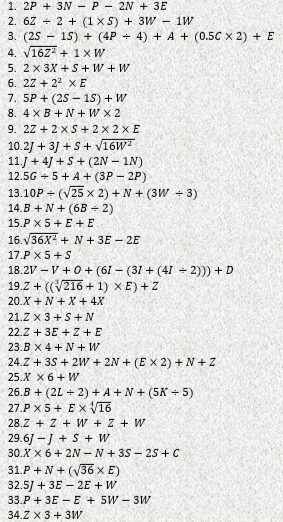
Expecting more, you go upstairs and find a page ripped from a book. You take a glance at it. It seems to be from Great Expectations by Charles Dickens, but you suspect the letters themselves are more important than the book...

And lastly you find a load of supposingly meaningless letters scrawled on the wall upstairs. You write them down:
Smi semo dllam olive sr etirp,
Mohw wdegre dhti regna.
Ttub wsginh nere ato thgirl.
Inehw dt ndi tto onru ff.
Syeht sdia agnihtemo ltuob gninrae,
Aro lt stsae sgnihtemo tralimi to tah,
Tmi bdeppar atu tosl keh ye.
That appears to be it. You sit down and think hard about what these could mean.
Can you save your wife?
If you wish to see how this story ends, see the epilogue at the end of the complete answer. However the answer and epilogue contain spoilers.
Go to Solution
57 votes, asked by Will#17147, answered by M Oehm#9860
There's a cool new cybercafé in town called #DECAFE
The café charges a fee to use their computers, but if you BYOC (bring your own computer) you can get on their internet free with any purchase... if you know how!
After you pay, the cashier says a sentence. If you reply with the correct number, they will hand you a slip with credentials.
You eavesdrop as the four people in front of you acquire internet credentials:
Cashier: Aloof whale swim forth.
Customer #1: One
Cashier: Tasty warm pasties contain stuff.
Customer #2: Two
Cashier: Pinkish fish adds distinct flavour on your bagel: robust smack.
Customer #3: Three
At this point, you figure it's easy enough, but then you're thrown for a loop when the next number is not four.
Cashier: Toxic frogs dispatch.
Customer #4: Sixty
After you've made your purchase, the cashier says:
Our cat can lick ice, you know.
What number must you say to obtain internet credentials?
Clarification
The challenge-response format is just intended to be a fun wrapper (and to make solving the puzzle easier by providing explicit known hidden messages): the challenges conceal the appropriate responses plainly using steganographic methods.
Hints
#DECAFE is a color as pointed out in the comments, but that's not what counts.
Every word is important, but only a handful of letters are meaningful.
The spelling of a number (in English) is relevant in at least one challenge. Not all numbers are represented the same way.
The cat could also pour ale without changing your answer. Similarly, the pasties could also contain pilaf, but not meats. Moreover, the whale could instead be a goose or a drake or possibly a manatee, but not an otter or a squid.
This phrasing with cryptical prose forms hint
Go to Solution
56 votes, asked by Rand al'Thor#5373, answered by xnor#4551
You are well known as the best jeweller in Puzzovania; your shop is always well stocked and your pockets are always bulging.
One day, the local 'godfather' of Puzzovania's organised crime comes into your shop. Naturally, you owe him a favour - who doesn't in these parts? He hands you a diamond the size of a hen's egg and tells you what he requires from you:
"This is for my daughter. She's getting married - you understand? I want her to have the best-cut diamond in the whole of Puzzovania. It's family honour."
You nod mutely, inspecting the diamond in awe. It's the biggest one you've ever seen. You decide it would be more prudent not to ask where the diamond came from.
"So listen, my friend. The diamond needs to be cut to the shape of a convex polyhedron. Any size and shape; that doesn't matter. What matters is that every face of the polyhedron needs to have a different number of sides. My daughter's such a changeable character - never quite the same person twice. I want her jewel to reflect that. Do you think you can manage that for me?"
"Of ... of course, Godfather," you stammer. Once that imposing gentleman has taken his leave, you sit down, still holding the diamond, and wonder how you're going to do it. You need to call in a mathematician ... or possibly a puzzler!
Can you satisfy the Godfather's wishes? If so, construct a polyhedron as required (and prepare your best suit, since he'll probably invite you to the wedding as a reward). If not, prove the non-existence of such a polyhedron (and book your flight out of the country, to somewhere far enough away to be out of the reach of his power).
(Note: this puzzle sounds much better if you read all the Godfather's words in Marlon Brando's voice.)
Go to Solution
56 votes, asked by GentlePurpleRain#4421, answered by Dan Russell#21234
MY friend, your luck has Turned.
i've made tHIs Riddle and it is the best, anD "soon iT sHould bE solved.
if it is not, then a QUIet miNd mighT let sEedS be Sown, within which idEas caN grow.
in essenCE: at THE end, in one small day, seCRetly, Our vieW regarding the solution caN be tOld.
are you Festooning the Place with strEamers already
this is a quiRky, Fun, Exciting riddle.
by my CounT, the few gIfted whO caN solve are > tolerable, BUt the texT, inc. punct. marks, is SPLInTered anD somehOW iN reverse.
many may fail, buT tHE one, the disCErniNg will Take his time; will REthINk whaT one Word may or may nOt be rEQuested.
if yoU are able, cALl a friend, loSE the laCk of exciTement, Include the right answer, and find the word that solves the riddle at ONce. yeS ;>
- The solution to this puzzle is a single word.
- An explanation of how you arrived at the solution is required.
- There is more than one part to this puzzle.
- Paying attention to the tags might help (a little).
- If you're having trouble seeing the intricacies of the text, try zooming your browser.
Go to Solution
56 votes, asked by pacoverflow#4450, answered by Ian MacDonald#10399
The following shows a Linux command line with a # prompt:
#
echo -e 'AAAAHHH!!!\a' > /dev/null
#
It represents a famous line from a work of fiction. What line is that?
Go to Solution
56 votes, asked by rnaylor#18508, answered by Deusovi#11876
Alice has a secret polynomial $P$ with positive integer coefficients. When Bob gives Alice a positive integer $n \neq 2016$, Alice replies with the value of $P(n)$. After doing this several times, Bob guesses the value of $P(2016)$; he wins if he is correct and loses if not.
How can Bob guarantee a win in as few such exchanges as possible?
Go to Solution
55 votes, asked by Joe#2518, answered by Bachrach44#2501
War has broken out in the kingdom. The king's castle is guarded pretty heavily, by guards with instructions to kill anyone who can't produce the correct password.
Unbeknownst to the guards, the beggars near the main gate are in fact enemy spies. They listen intently as the first knight approaches. "Six!", the guard calls out. "Three," answers the knight. He is allowed through. "Aha," the spies think.
But they needs to be sure. They see another knight approaching and listen in on his exchange with the guard. "Twelve!", "Six!"
One spy decides he's heard enough, so he leaves and returns dressed as a knight. "Eighteen!" The spy answers "nine" and is killed on the spot by the guards.
Another spy, who used to browse Puzzling.SE before he signed up for the Espionage Division feels a moment of deja vu, and decides he now knows the answer. As night falls, he goes off and disguises himself as a knight. He comes back in the morning and walks up to the guard.
"Eighteen!" shouts the guard, "Eight!" the spy replies. The guard cuts him down, and he makes a surprised "gurgle...splot" noise as he dies.
The last spy, still in hiding is confused. As he's thinking, another knights walks up. "Twelve!" is the challenge, "Zero!" comes the reply. The guard steps aside and the knight enters.
Finally, the last spy gets up, goes off and does the whole dress-as-a-knight thing and comes back. "Eighteen!" shouts the guard. What is the correct response?
Update: The answer to TWELVE could have been Zero or Six either time - both were correct. This is one of only two such cases of 2 valid answers.
Edit for anyone who sees this in the future: I'm aware that it's not fully-scoped. It's my first puzzle and I neglected to give any odd-number examples, which is kind of important. It's totally solvable without them, I just should have included at least one.
Go to Solution
55 votes, asked by kamenf#15856, answered by 2012rcampion#9718
Based on Game of Life: Kill the Sun
Conditions are the same:
Below is an initial state for Conway's Game of Life with a single pulsar. Living cells are white.
The area marked with red is your base. You are free to modify any of the red cells, but only those, and only in the initial generation. You are not allowed to do anything once the simulation starts.
Your goal is to move the pulsar so that its center is within area of the base – in other words, the game must reach a generation where only a pulsar with its center in the red area remains/loops infinitely and everything else is destroyed. Yet in other, way cooler words:
You have to construct a rocket to move the Sun and nothing else that was created in the process to remain.
The grid is infinite in every direction, i. e. runaway gliders still count as living.
EDIT: Because all answers are correct and there is no easy way to choose which one is the most valid, I'm picking the one with the most votes. I hope this will not discourage others to post other interesting solutions.
Go to Solution
55 votes, asked by Amruth A#22890, answered by f''#12408
I have three fingers,
Middle finger has a triangle,
Left finger has a circle and,
Right finger has a square,
What is this?
Go to Solution
55 votes, asked by Hugh Meyers#18924, answered by Wu33o#20690
The following is a riddle. Do not solve the riddle. Instead, explain the title.
My top is tilted to the light,
A trumpet, almost, in its form
You court a woman? There I am.
I please, palliate, perfume and mourn.
Your grief I lament. Slay me and
I will your last amen adorn
Go to Solution
55 votes, asked by JLee#463, answered by JS1#4479
After many years, authorities are still looking for a family of 6, five of whom are suspected of many multiple-country border crossings with no passports or proper identification. Although no known damage has been done, the homeland security divisions of many countries are irate, and continue "to spend much time and money until these 6 are found and punished."
A recent tip led investigators to believe that 5 of the 6 are still actively on the run, and that these 5 meet with the 6th member (believed to be the leader) at the same time each day, presumably to plan future evasion tactics. However, no sightings of any of the 6 have been documented, leaving authorities puzzled.
On multiple occasions, top intelligence in many different countries led several police forces to some of the family members' projected locations, but each time officers have reported an eerie feeling of 1 or more members of the family being extremely close to them, yet none were seen.
The official, but limited, suspect information:
- Priscilla, mother and leader, at least 8 counts of trespassing, claims her children are not doing any harm, and that she has trained them on the straight and narrow path their whole lives
- Ed, tallest sibling, 13 counts of trespassing, the most famous of the 5 siblings worldwide
- Caitlin, 17 counts of trespassing
- Cadence, twin sister of Caitlin, at least 12 counts of trespassing
- Arnold, 8 counts of trespassing
- Anthony, twin brother of Arnold, multiple counts of aiding and abetting
Who are these six?
Go to Solution
54 votes, asked by Deusovi#11876, answered by question_asker#17250
We're graduating! I feel the only appropriate way to respond is a Stack Exchange themed puzzle:
- Albertan politician who succeeded Lucien Maynard (6, 7 or 6, 8)
- Approved for passport authorization (6)
- Famous stage direction from The Winter's Tale (4, 7, 2, 1, 4)
- Method of hiding messages undetected inside images, audio, or text (13)
- Pigment made from antimony (6, 6)
- Rapper or theater worker (5)
- Revealed or exposed - what the Scooby-Doo gang did to the villain of the week (both literally and figuratively!) (8)
- Voice of Carl from Up (2, 5)
What's my message to the SE admins? You'll know it when you find it.
Go to Solution
54 votes, asked by Tryth#7308, answered by Alconja#5208
There are people who claim that they can look upon the land, and the land will speak to them.
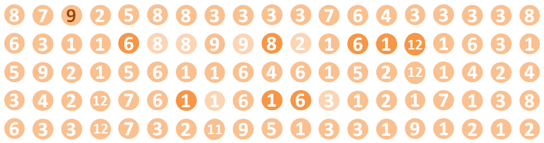
I recently got caught in a sandstorm, and particles of sand flew past my eyes.
What is the desert saying?
(The solution is six letters)
Go to Solution
54 votes, asked by rsp#40590, answered by Beastly Gerbil#18250
This is a nice picture, so what's wrong with it?

Go to Solution
54 votes, asked by Sleafar#15632, answered by Reti43#20122
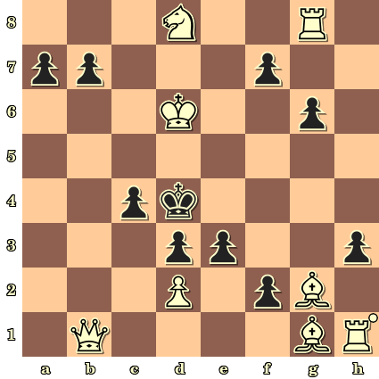
As stated in the title, white must mate black in 1 move. But first you must solve the mystery behind this puzzle.
This puzzle was created by Hieronymus Fischer (1843-1927).
Go to Solution
54 votes, asked by Dan Russell#21234, answered by M Oehm#9860
You're sitting at your Alphabet City Police Department sergeant's desk on a normal Wednesday when the phone rings.
"Oh my god, oh my god! Please help me. It's my pet word. It's been, well, I don't know exactly, but...oh, the horror!" says a frightened voice.
"Calm down, sir. Please tell me what happened."
"I didn't see it. But others did. Just come down to the intersection of Character and Grapheme. SOON. Please! The poor little thing. Only four letters long and then this happens..."
You hang up the phone and glance at the pile of DUIs and B&Es looming on your desk, and can't keep a sigh from escaping. You didn't get into Letter Policing for this, sitting at a desk day after day, going through the motions... Even if this story turns out to be gibberish, at least it's something unusual. You grab your coat.
"I'm heading downtown."
Your ABCPD squad car pulls up at the intersection of Character and Grapheme, and you step out. Several cars are already on the scene, and the crowd is clearly disturbed; you spot one man kneeling near a wall, fighting with each breath not to be sick again.
A junior officer runs up.
"Sarge, thank goodness you're here. I've been taking eyewitness accounts. Apparently this guy tied up his pet word while he was shopping for vowels. Then a gang showed up, four words in all, and started harassing the pet word."
"You sure it was a gang?" you ask.
"Yes, sir. Witnesses all agree the four words were related. But then someone called the cops and the gang panicked. Apparently, to stop themselves from being recognized, the gang viciously ripped apart the pet word, then each gang member took one of the letters from the pet word, added it to himself, and rearranged his letters to make a new word."
You understand why the man was fighting to keep his lunch down. You swallow hard, and focus on the facts.
"What then?"
"Well, each of the disguised gang members fled in a different direction. We got here ASAP though, so each one only made it a block before we showed up."
"Okay, so they're still in the area."
"Yes, sir. But...well, it seems that they've further disguised themselves."
"Dammit! How!?"
"Well, the one who fled north came to a law-abiding group of words having a meeting. He heard sirens, and knew he didn't have time to flee anymore. He also knew that he'd be caught if he tried to blend in with the group, since they were all similar to one another and he wasn't. So instead..."
"Spit it out, officer."
"It seems, sir, that he split himself up into letters, and added one letter to each of the words in the group. He then forced them to rearrange themselves to disguise their relationship so he could blend in."
"Diabolical. What about the other three?"
"Same thing, sir, but they just ran in different directions, and found different groups to hide in."
"So where are these poor innocents who have been dragged into this mess now?"
"We've got them all detained, sir. Waiting for you to inspect them."
It's for days like this that you always carry TUMS. You tilt your head back and drop in enough to quell your body's natural reaction to this senseless butchering. The four groups of words await your interrogation. You stop and think about the facts. Focus on the facts, not that poor little 4-letter pet...
If—you reason—you go to each group of words, you should be able to remove a letter from each, then rearrange the remaining letters into words that are related...those will yield the law-abiding groups who were unwittingly brought into this mess. The letters you remove from each group will form the disguised gang members. If you can then remove a letter from each of those disguised gang members, and rearrange the leftovers, you'll reveal the identity of the gang and its members...and more importantly you can stitch the removed letters back together, and give this guy his pet word back.
Well, you may not be the greatest letter detective in history, but today you're damn well going to make a difference.
Group 1
sabre
aliens
coding
others
alternate
gyrations
Group 2
creak
final
morose
rotund
script
totter
replica
saunaed
clobbers
Group 3
naive
signor
stench
twirls
weblog
primate
reunion
cribbage
Group 4
boner
cools
hoard
fiasco
sprain
another
hastens
nibbler
ABC Police Report
- What were the four groups of law-abiding words, and what connected each group?
- What were the four gang members initially disguised as?
- Who are the four gang members, and what links them?
- What was the name of the man's pet word?
Partial reports and collaboration are critical for successful letter policing.
Go to Solution
53 votes, asked by sousben#40607, answered by Lawrence#9422
This happened to me in a rental apartment and I had to be creative to solve it.
The geniuses who designed the bathroom managed to fit a drawer about a centimeter behind the door, and eventually what had to go wrong went wrong: the drawer was full of stuff and once we closed the door, the drawer reopened a bit, blocking the door from opening more than about a centimeter, blocking us from entering the bathroom.
Position 1
The setup when the door is closed and the drawer is closed normally (view from above)
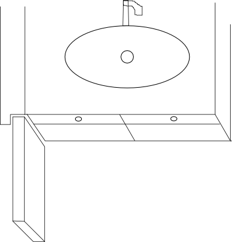
Position 2
This is what happened when the drawer blocked the door:

This only left about a centimeter of leeway for opening the door from outside
Not enough to let daylight go through, but enough for me to be able to get the drawer to open even more by pushing the door back and forth.
And because of the form factor of the drawer (the front panel being a couple of centimeters larger than the drawer itself, I felt the more the drawer would open, the more I could open the door, to the point that I could actually get a finger in.
Position 3

Using a metal hanger, I could manage to open the drawer even more, or close it a bit, but closing it would make the front panel of the drawer apply pressure to the door, eventually bringing me back to Position 2, where I couldn't fit anything in anymore to close the drawer further.
I spoke to the locksmith who said he could make a hole in the door in order to close the drawer. This would mean I'd have to replace the door afterwards, for a price of about 100$.
I decided to first test my puzzle solving skills and figure out a significantly cheaper way of closing it.
Other elements that may or may not be useful:
- the door handle was situated above the drawer, too high to touch it or anything
- the bottom of the door was about half a centimeter above the floor, letting daylight go through
- lifting the door up its hinge was not an option because unless fully opened, the frame would block it
- I lived in a city with all kinds of shops where I could buy all kinds of tools or accessories
- I lived on a third floor, and there were bars to the window of the bathroom, meaning no human would be able to get in, even with a high enough ladder, and the window was closed anyway
Could you find a way to open the door without breaking anything?
EDITS
- I only drew one side of the door frame, but it was the same step-shape on both sides as well as on top, preventing access to the hinge for example
- the drawers don't have handles. I only put them on the picture for illustration, so that people understand they are drawers :-)
- taking the drawer out of its rails is not an option, because it needs to lift it with both hands, also, falling on the floor would most likely break it, which I wanted to avoid
Go to Solution
53 votes, asked by LFH#19009, answered by Julian Rosen#2627
I'm excited to share the following riddle. It was given to me more than two years ago and I finally solved it last summer (after not thinking about it for a long time). In my desperation, I tried to find a solution online, but couldn't even find the riddle anywhere else. I'm excited to see if somebody knows the riddle or if not, how you approach the solution.
Three mathematicians are in prison. Each of them is in a single cell and they are not able to communicate in any way. They are imprisoned for an arbitrary number of days.
Each cell has a single light bulb that is either on or off on a given day. The warden tells the mathematicians that the light system of the prison has three modes:
- neutral mode, where each lightbulb is independent of the others
- bright mode, where two bulbs turn on every day and the other turns off
- dark mode, where two bulbs turn off every day and the other turns on
(All distributions are not necessarily uniform.)
The prison starts in neutral mode. After an unknown but finite number of days, the warden will select either bright mode or dark mode, which is locked in permanently.
After countably infinitely many days have passed, the mathematicians are asked which one the warden picked. They may discuss strategy before going into the cells, but there will be no communication afterwards. They have unlimited capacities to communicate and remember strategies that they come up with. Two of the three need to guess correctly to escape; how can they ensure this? You may assume that the axiom of choice holds.
Go to Solution
53 votes, asked by Edgar G.#17558, answered by user3294068#2328
I've created a new puzzle from an Alexey Nigin's idea. It consists of a 8x8 board where each square is randomly assigned one of three colors.
A movement is defined by picking any two orthogonal adjacent squares (forming a domino shape) with different color. Then they both turn to the third color. The objective is to reach a board with only one color.

An example picking two adjacent squares (domino shape).
You can play a test version here.
For each initial board state, there are three final possible states (one of each color), but only one can be achieved.
The question is: Is one final color always achievable?
It would be also interesting to know the hardest configuration (or one of them) and how many steps are required to solve it.
Go to Solution
53 votes, asked by Levieux#31655, answered by Rand al'Thor#5373
A friend of mine works as a pilot, so he travels a lot and I don't see him that often. But every year around the same time he sends me a message. He has been doing that ever since 1997.
Here is a list of all the messages he sent:
1997: 0.6 - LAFRBRAV - Kg
1998: 1.8 - BVOHOTXY - Is
1999: 5.8 - JULITTROMOIRRA - wdn
2000: 2.6 - LFOOOVB - Dk
2001: 2.4 - CHRLPPHL - sn
2002: 5.0 - NGOMM - v
2003: 4.8 - OMOINDIAXA - Tuk
2004: 3.0 - DSTGO - Uk
2005: 4.2 - INDIAHOVITO - G
2006: 4.0 - TGOHOTE - id
2007: 2.4 - HOTLCHOLM - Srb
2008: 4.8 - BVOECHOGOLF - ussi
2009: 3.2 - DELTMIKEECH - Nrwy
2010: 5.8 - OSCSILI - Gny
2011: 2.8 - DLTUFOMS - zbj
2012: 5.2 - GOLFYAKLTA - Sw
2013: 3.6 - IIXY - Dn
2014: 2.0 - CHLEPPHOEL - us
2015: 4.6 - VICTORIIACHO - Sw
2016: ???
Unfortunately I lost last year's message. Can you help me figure out what it was?
Note: a good starting point for this is to try and make sense out of the other messages.
Go to Solution
52 votes, asked by Bozman#2803, answered by Joe#2518
There are 4 interns at the new government agency. All 4 are comp sci majors. John is the only male. The three girls are all close but secretly like John. Lisa is playing hard to get and hopes John will make a move but could trick John into asking her out. Anne likes John and flirts openly but repeatedly tells everyone she will not date a smoker. Sarah is the smartest out of the bunch and wants John to prove to her that he can fulfill her intellectual needs.
One day John arrives at his computer and there is a post-it note with a heart around it and the following numbers written in it.
546591785
Being that asking any of the girls will dissuade the other two from ever wanting to date him, John must guess who left the message and make a gesture to show he wants to date her.
Who left the message? What does John do?
Go to Solution
52 votes, asked by f''#12408, answered by Jonathan Allan#16717
I was inspired by Rainbow Road Rabbit Hole to make a two-dimensional image maze where each image points to its neighboring rooms. Start here:
Clarifications and corrections:
Reassembly
"Either... or..." statements are inclusive or. This means that both sides can be true at the same time.
Half the Picture
If you went directly to this room, you'll need to come back later.
Block Cipher
The block on the right should be Nether Brick, not a Stone Pressure Plate.
Mind Games
The location of the small circles within the big circles is irrelevant.
Ill Omens
The first four characters of the fourth line should be at the end of the third line instead, and the first four characters of the third line should be copied to the beginning of the fourth line (so that there are twelve characters in line 3 and eight in line 4). Click here for a corrected version of these two lines. The corrected transcript for these lines is here.
Multiple Parts
There is no wordplay involved. The letter counts for the left are (3,7,4,8) and for the right (3,8,2,3,5).
Go to Solution
52 votes, asked by Trevor Powell#9286, answered by mmking#12109
All of your stuffed animals are assembled, anxiously waiting to learn who will be be invited as the Guest of Honor to your next tea party.
This is to be an exclusive party, after all, as there is to be only one Guest of Honor. This is by necessity, because you have only two strawberry pastries, and you obviously intend to eat one of those yourself. (Cook was most annoyed with you for taking so many infinite bags of pastries yesterday, and has since cut off your supply). All the other guests at the tea party shall only receive tea.
So now you must decide which of your many guests will be the Guest of Honor, who receives the coveted strawberry pastry.
Your first instinct, of course, is to invite the valiant Mr. Bun to be the Guest of Honor. After all, he's brave and noble and always tells the truth. But then you think of poor insidious Duke Froggington II, who admittedly is dastardly and always lies, but in your heart you know that these character flaws are only due to his tragic childhood. You see, the perfidious Duke Froggington II grew up all alone in a dank 30-meter well, trying to leap his way to light and freedom. You know what that's like, and your heart aches for him. And there are similar reasons why you might choose almost any of the six dozen other stuffed animals that pack every available surface in your bedroom.
No, you find that you're completely unable to decide which stuffed animal should be the Guest of Honor at your tea party, and so you instead devise a game for the stuffed animals to play, to determine the Guest of Honor fairly.
The game works in this way:
First, you choose Mr. Bun as the initial nominee as Guest of Honor. He's the obvious first candidate, as the noblest of all your stuffed animals.
Then, starting with the nefarious Duke Froggington II and descending through the other stuffed animals in order of seniority and ending with Peanut (an ugly mouse given to you by your annoying older sister at your last birthday fête, and usually tucked far back in your dresser behind your latin coursebooks), each stuffed animal still in attendance is asked if they wish to declare themselves to be the new nominee as Guest of Honor. If they do, then they become the new nominee, and the previous nominee is returned to the toy chest, where they must remain until after the tea party.
Whenever the nominee changes, the whole process starts again; Every animal (in order of seniority, and starting with the most senior remaining animal) is given a fresh opportunity to nominate themselves, even if they had previously chosen not to. As before, if an animal chooses to nominate themselves, the current nominee is returned to the toy chest, and may not attend the tea party.
This process continues until no further stuffed animals wish to declare themselves as the nominee.
Once no more stuffed animals wish to make themselves the nominee, whoever remains as the nominee shall become the Guest of Honor and will receive a strawberry pastry at the tea party. The other remaining stuffed animals shall receive tea. Any stuffed animals in the toy chest get nothing. (At least, not until they're brought out again for the next tea party (which will likely be in ten minutes or so))
A few obvious points which you know instinctively are:
- All stuffed animals love strawberry pastries (as does everyone of refinement and distinction. Peanut would probably love strawberry pastries too, despite having neither refinement nor distinction, though you've certainly never wasted one on her, even yesterday when you had several infinite supplies of them). This means that each stuffed animal dearly wishes to be the Guest of Honor.
- All stuffed animals like tea, so none of them wish to completely miss the party by being put back into the toy chest.
- All stuffed animals are perfect logicians (I mean, obviously. Do I even need to mention this?)
- Stuffed animals don't hold grudges against one another; they will remain fast friends even if one sends another to the toy chest. On the contrary, they will recognise that it was the only logical thing to do, and will probably laugh about it at your next tea party, later this afternoon.
- While the treacherous Duke Froggington II always lies, you've long since adapted to that, and aren't ever confused any more about what he means when he tells you which door leads to certain doom and which leads to your afternoon Latin classes (though you're still not convinced that there's actually much of a difference between the two). Similarly, there will be no confusion on your part about whether or not he wishes to become the new nominee, regardless of what lies he might say.
- For the sake of clarity, you have six dozen and two stuffed animals in total. With Mr. Bun as your favourite, the despicable Duke Froggington II as your second favourite, and Peanut as your least favourite. Other stuffed animals may be identified by number, with the next animal after the treacherous Duke Froggington II being number 3.
Of your stuffed animals, how many will attend your tea party, and which will be the Guest of Honor?
Go to Solution
52 votes, asked by Gamow#8874, answered by The Dark Truth#16608
Abraham Van Helsing and Jonathan Harker play a game against Count Dracula.
The three players agree on the following rules:
Count Dracula and Van Helsing enter the crypt, while Jonathan Harker has to wait outside. The crypt contains 1000 coffins that are numbered from 1 up to 1000, together with 1000 golden lockets that are engraved with the numbers from 1 to 1000.
Each of the numbers from 1 to 1000 occurs on exactly one coffin and on exactly one locket.
Count Dracula puts the lockets into the coffins, so that every coffin contains exactly one locket. Van Helsing observes this, and knows exactly which locket is in which coffin.
Now it is Van Helsing's turn: Van Helsing may (but does not have to) pick a pair of coffins and switch the lockets in these two coffins. Dracula observes the action of Van Helsing.
Van Helsing now leaves the crypt through the back door. Jonathan Harker (who has gained no additional knowledge over the choices of Dracula and Van Helsing in the first three steps) enters the crypt.
Count Dracula chooses an integer $N$ with $1\le N\le1000$, and announces $N$ to Jonathan.
Jonathan is allowed to perform 500 search steps of the following form: Jonathan chooses a coffin, opens it, and checks whether the locket in this coffin carries the number $N$.
- If Jonathan Harker finds the locket with number $N$ during his 500 search steps, then he and Van Helsing have won the game. In this case, they are allowed to drive a wooden stake through Dracula's heart.
- If Harker does not manage to find the locket with number $N$, then Count Dracula is allowed to drink Van Helsing's and Harker's blood to the last remaining drop.
Harker and Van Helsing discuss their options and want to agree on a good strategy.
If Harker chooses his 500 coffins simply at random, then the team Harker & Van Helsing has a 50% probability of winning the game. Is there a strategy that would guarantee them an even better probability of success?
Go to Solution
52 votes, asked by Puzzle Prime#14140, answered by DqwertyC#39637
I want to share one more chapter of the puzzle crime story I make for my website. All of the information for solving this puzzle is contained in the text and the image below. As usual, any feedback will be highly appreciated. Thanks!
In the moment Sanders entered the hut, the electricity inside got
turned on. A bulb lightened up the small room and revealed a man in a
cage, desperately trying to escape. The man looked at the detective
and said:
"You should be Sanders? Some crazy man kidnapped me and locked me
here. He said that once you enter, you have exactly 13 minutes to set
me free. After that the entire place will blow up. Please hurry, we
need to figure out the correct 4-digit combination which unlocks the
safe over there. The key which opens my cage is inside."
Sanders listened carefully, tried to calm the person down to best of
his abilities, then started examining the room. He could see Teddy's
peculiarities all around - a pair of mismatching shoes on the ground,
a picture flipped upside down on the wall, three old electronic
clocks, negligently thrown around... He noticed that even though the
clocks were functional, all of them were few hours wrong, and also 15
of their segments were not working. The detective wondered for a
moment why Teddy would even keep such useless items, then focused his
attention on the safe.

Sanders spent the next few minutes trying to figure out the correct
combination for the safe. Time was running out quickly, and he was
getting more and more anxious. Suddenly, with just 2 minutes remaining
on the clock, an insight hit him. He entered a 4-digit number and the
safe cracked open.
Go to Solution
51 votes, asked by BmyGuest#5840, answered by archaephyrryx#7387
This is a challenge for word-puzzle lovers. It might be a bit more of a game than a puzzle, but I think it is not limitless in it's answers, so a final answer could be found (eventually).
What is the longest list of growing anagrams which can be put into a grammatically correct English sentence?
Example for clarification:
Start with a word and then add words to the list with each having one additional letter to the one before. All letters may be re-arranged, i.e. all anagrams of the word are allowed.
I
in
pin ( or alternatively: nip )
pain ( or alternatively: pian )
paint (or alternatively: inapt )
...
You may add any letter, but the list is only valid if you can then put all words of it into a single, English sentence which is grammatically correct. (It does not have to be very meaningful.)
Such as in:
I paint "pin" in pain!
...says the painter while he is painting a shop-name ( "Pin & Needle" ) onto the wall while having severe backache...
So, the aim is: **Find a single sentence using all (and only) the words of such a list, i.e. each word-length appears exactly once.
Rules:
Diacritics may be handled as "group" represented by their simplest form ( a, ä, á... = a ) to allow for more flexibility in the solutions.
The shortest word of the list may have any length. (It does not have to be a single letter.) But the list has to contain a single word for each 'length' between the shortest and the longest word.
You may use arbitrary punctuation in the sentence. (Compound words count as single word.)
Names and acronyms are allowed but if used, give a reference for their validity.
If the meaning of the sentence is not apparently clear, give a little example of where it could be appear. (See example above.)
All words of the list have to appear exactly once in the sentence.
Bonus:
This puzzle is about English, but if you can do the same in any other language and have a good example, please post here also. It will not be accepted as answer, though.
Go to Solution
51 votes, asked by BmyGuest#5840, answered by Ben#9178
We all know it can be difficult to find a needle in a haystack, but in this puzzle you have to
Find the NEEDLE in the network!
A bit more detailed:
Somewhere in the network pictured above hides the word Needle encoded in a rather well known cipher. (You will find examples of the used cipher on PuzzlingSE in several other puzzles.) The task is to find it (and the used cipher).
Particulars:
The image alone constitutes the puzzle.
It is visual and no information is hidden in its digital representation.
(If you want, you can draw the same image by hand.)
The solution requires a cipher to be applied, i.e. the word "needle" is encoded not just visually hidden or obscured.
Go to Solution
51 votes, asked by Tyler Seacrest#2722, answered by JS1#4479
The following is a probability paradox I've been thinking about. It involves Bayes' rule; if you're not familiar, a good starting example is a urn that has a 50% chance of containing one black ball and one white ball, and a 50% chance of having two black balls. If you reach in at random and pull out a black ball, it becomes more likely there were two black balls to begin with. Specifically, there is now a 1/3 chance of there being black and white balls in the urn, and a 2/3 chance of there being two black balls.
The Setup
Alice and her husband Bob are kidnapped by an eccentric millionaire that performs probability experiments on people. Without them seeing the result, a coin is to be flipped.
- If heads, one of the two of them (at random) will be brought to an office with a big red button that, if pushed, will transfer \$5000 to their joint bank account. The other will be left in the holding cell.
- If tails, both them them will be brought to separate offices with big red buttons, each with which removes \$2000 from their joint bank account.
They can discuss strategy ahead of time, but after the experiment starts they will be kept separate from each other. What should they do?
The Plan
Alice and Bob reason their only two strategies are to push the button or not. Not pushing the button is a net zero, and pushing the button yields an expected payoff of $1/2 \cdot (5000) + 1/2 \cdot(-4000) = 500$. Not being particularly risk averse, they decide to go ahead and press the button.
The Paradox
The experiment starts, and Alice is summoned to an office with a big red button. She is about to confidently press the button in accordance with their strategy, when she suddenly has second thoughts. The fact that she has been brought to an office and not left in the holding cell gives her new information. Using standard Bayes analysis, the probability the coin was heads is now $1/3$, and the probability the coin was tails is $2/3$. Thus, now the expected value of their strategy is $1/3 \cdot ( 5000) + 2/3 \cdot (-4000) = -1000$.
Suddenly, not pushing the button seems like a good strategy. What's going on? What should Alice do, which analysis was flawed, and what is wrong with the flawed analysis? If it matters to your answer, assume Bob thinks in a very similar way to Alice, and would likely make the same decision as she would.
Go to Solution
51 votes, asked by Rand al'Thor#5373, answered by Deusovi#11876
A perfectly symmetrical small 4-legged table is standing in a large room with a continuous but uneven floor. Is it always possible to position the table in such a way that it doesn't wobble, i.e. all four legs are touching the floor?
No tricks. No lateral-thinking. Serious question (with real-life applications too!) with a serious answer.
This might look like it'd fit better on Lifehacks.SE, but the answer has a nice mathematical proof/formula [depending on whether it's yes/no; I won't give the game away!] which is surprisingly simple and elegant.
Go to Solution
51 votes, asked by Owen#11031, answered by Jonathan Allan#16717
Here is a piece of paper:
Fold it once, and you can get a shape with 9 corners:
Starting with a rectangular sheet of paper and folding twice (along any line), what is the largest possible number of corners that may result?
Rule for counting corners: both concave and convex corners count (as you can see in the example), but they must not be "covered" by the rest of the paper. In other words, you are counting the corners of the silhouette.
Credit: Alex C Weiner
Go to Solution
50 votes, asked by Levieux#31655, answered by Deusovi#11876
What comes next in each of these sequences?
$$\begin{array}{align*}\textbf{ 1
}&\text{J, KK, LLL, MZ, A, BO, ?}\\\textbf{ B
}&\text{HNAKXR, EERREA, LOGYND, INOPOO, ?}\\\textbf{ C
}&\text{NMLLARY, JBZALOY, KMMRA, DBJTML, ORMSLBL, ?}\\\textbf{ 4 }&\text{C-N, E-N, NW-S-NE-C, S-SW-W, WSW-SE-NNW, ?}\\\textbf{ E }&\text{FIRST, WELL DONE, PARKER, RIVER MOUTH, RIVER MOUTH,}\\\textbf{
}&\text{DANCE, ?}\\\textbf{ F }&\text{FILLY, DOE, FEMALE, HEN, BITCH, ?}\\\textbf{ G
}&\text{FREDDIE, WILLIAMS, DOWN TO, LIFE ON, DROPS OF, ? OF}\\\textbf{ H }&\text{VIENNA, BRUSSELS, HAVANA, BERLIN, MADRID, ?}\\\textbf{ I/9 }&\text{ZXV, PRMT, JFVVM, QZXP, GVM, MRMV, VRTSG, HVEVM, HRC,}\\\textbf{ }&\text{UREV, ?}\end{array}$$
Fill out your answers in the grid below and observe the final sequence in the highlighted cells. Find the missing letter, but make sure you take it one step at a time.
Go to Solution
50 votes, asked by Rafe#2225, answered by pacoverflow#4450
which one is the correct answer of the following picture? What is the algorithm of shapes sequence?
Go to Solution
50 votes, asked by bleh#17970, answered by greenturtle3141#29567
Here's what I'm saying
Moving 2 sticks, what is the largest number that you can create?
Go to Solution
50 votes, asked by Alconja#5208, answered by LogicianWithAHat#11717
So my son is starting to show an interest in mathematics, and being the awesome dad that I am, I decided to buy him a basic calculator. Being the cheapskate that I am, I ordered the cheapest one I could find, which happened to be from NoSlaves™ Calculator Co. (When only the cheapest calculator will do, make sure you buy from NoSlaves™, where we lovingly craft our calculators to almost adequate levels of quality, and totally don't use any slave labour... at all.)
Unfortunately (and surprisingly), when it arrived, there seemed to be something wrong with it... I plugged in a few quick test calculations:
1 + 1 = 1
4 + 3 = 9
8 - 3 + 5 = 6
24 + 51 = 84
50 - 74 + 39 = 98
Now, I like to complain as much as the next guy, so I went hunting through the instruction manual for the company's phone number. However, on the warranty and support information page, I found the following, scrawled in a strange, dark reddish, congealed ink of some sort:
2 - 3 + 4 = ?
80 - 17 = ?
4 - 1 + 2 - _ = ?
Curious, I entered in the calucluations... I didn't know what the underscore meant, so just ignored it, but regardless, the results were even more broken than my initial test calculations. By this stage I was bored, so I shrugged it off and went to bed.
Three weeks later, being the brilliant detective I am, I suddenly realised that the hand written message carried a cleverly concealed secret message. I immediately phoned the police department and was hailed as a hero.
What was wrong with the calculator? And, what was the mysterious hidden message?
Go to Solution
49 votes, asked by Albert Masclans#12165, answered by Kevin#1497
Mathematical Rebus II
Mathematical Rebus III
$$
4\sum_{n=0}^{\infty}\frac{(-1)^n}{2n+1}\\
(-\infty,...,-1,0,1,...,\infty)\times(-\infty,...,-1,0,1,...,\infty)\\
\forall\begin{bmatrix}{-1}&{0}\\
{0}&{-1}
\end{bmatrix}
$$
Go to Solution
Solutions
351 Votes, asked by Roland#13237, answered by NeedAName#13970
I believe the answer is
LIAR
The riddle was tricky (as indicated by the title) and each of the lines is
a lie.
Left alone, I'm a word with five letters.
The word is actually 4 letters
I'm honest and fair I'll admit
Obviously, a liar is the antithesis of honest and fair.
Rearranged, I'm of no use to trains.
RAIL, an anagram of LIAR, is an incredibly important facet to the function of trains.
Again, and I'm an overt place, warm and well-lit.
LAIR, another anagram of LIAR, is a hidden, dark place, the opposite of the adjectives provided.
I could be way off track but I have a good feeling that this is it.
Return to Question
292 Votes, asked by Alconja#5208, answered by Deusovi#11876
(Thanks to f'' for the help in chat! He solved the majority of this puzzle - I just came in at the end.)
Step 1: Crossword
The crossword was solved by feelinferrety, Z. Dailey, and Sleafar:
Step 2: NOTHEX
In the caption, if you look at A and D only (as it says in the NOTHEX ad), and interpret them as crossword clues (only taking the letters not torn off) you get the message "THE TITLE IS THE KEY".
Step 3: Using The Key
When you use the newspaper title as a Vignere key for the first paragraph, you get the message
"you're not listening read it again and realise the truth"
If you use the question title instead,
you get a message for all four paragraphs:
well done you are
beginning
to see but we have
not finished yet
you need all your
synapses firing
for this to work
a pirate's search
but in reverse
a map disguised here
in the verse
perfectly square
this text aligns
the mark is found
follow the signs
and now it dawns it's
not enough
dual maps required
one fore one aft
first
ENEEE N SSWW
SWW WWW W NNN S
second
WWWW NNEE EEN NNWW
WWSWW SSSSS ESS WN
but if it's broken
what difference
would it make
once you can answer
that the truth will
become clear
Step 4: Following Directions
"In the verse / perfectly square" hints at the poems being more than just instructions. In fact, all of the text in the "article" is exactly 400 letters, which can be arranged into a 20×20 grid. "A pirate's search but in reverse" hints that we're starting at an X instead of ending at one. So, if you take the text and arrange it into a square grid, you get this:
pltdlgvqncltrrumtmrq
gbamcdmwuygplpsdwvai
tzgifamqciwwcogsplse
plhbzkgfibhsjyiebvtj
survclhzegkonipzsbwa
etoivhonbvrvhtsllslu
sihvlncaawlttfvbngam
iivvcdyktpklecfjbijm
lpuhhvqtneqtrwwfsgtf
vqkyshgkngtdwiivvlit
ganrhqmkcmrleflmgluw
lmfwgvvunayficwvhoic
ksowfXjbklwfmsnfuwil
trgmrirvqkqlkheopaag
uakmuwzsknpwagmriiql
bqpkhaopwflzawakezqi
kbfvmaovsncbqaoelayj
rklvumowgarzmmndmbrg
hwcovoyiflarkapsblpq
iflmhjbtyfifmayvzpij
and for the plaintext:
welldoneyouarebeginn
ingtoseebutwehavenot
finishedyetyouneedal
lyoursynapsesfiringf
orthistoworkapirates
searchbutinreverseam
apdisguisedhereinthe
verseperfectlysquare
thisteXtalignsthemar
kisfoundfollowthesig
nsandnowitdawnsitsno
tenoughdualmapsrequi
redoneforeoneaftfirs
teneeensswwswwwwwwnn
nssecondwwwwnneeeenn
nwwwwswwsssssesswnbu
tifitsbrokenwhatdiff
erencewoulditmakeonc
eyoucananswerthatthe
truthwillbecomeclear
Follow the directions in the third paragraph on the first grid (taking letters after every space), and you get the message "AMBIGRAM". If you repeat the process with the second grid and the second set of directions ("dual maps required, one fore one aft") you get "ISBROKEN".
Step 5: The Image
An ambigram is the same thing upside-down and right-side-up. The image is almost an ambigram, but some pixels are changed. If you XOR the image with itself rotated 180°, you get the following:
Step 6: Interpreting Everything
Well, we appear to be in a coma. The messages on the borders of the "please wake up!" image are:
- We've been trying to get a message to you...
- You're in a coma...
- There was an accident...
- Open your eyes...
- We miss you...
Even the crossword clues hint that you're in a coma: specifically, the unused clues for 7, 16, 21, and 26 across. (The solutions to those are "accident", "pity", "coma", and "dream".
So we have two options: waking up and having to talk to people or staying in weird coma-land where everything is puzzles. I know which one I'd choose.
Return to Question
206 Votes, asked by James Webster#4729, answered by Tryth#7308
It is impossible.
Proof:
Let the $7\times 28$ area be painted with black and white squares in a checkerboard pattern. Every piece will cover $2$ black and $2$ white squares, except the T-piece, which covers $3$ of one color and $1$ of another. Since there are $7$ T-pieces, a tiling that uses every piece cannot cover the same number of black and white squares. Since the board contains the same number of black and white squares, it is impossible.
Return to Question
193 Votes, asked by Alconja#5208, answered by ffao#20521
After a period of thought, you approach the door triumphantly in order to type in
2369
as the keycode.
As you do so, you recall the reasoning that led you to this conclusion. Putting together the torn sticker, you saw a number of strange symbols in a gridlike shape. Fortunately for you, a calling card was left on the scene, describing the working mechanism of the locking machine. This struck you as a rather odd security practice, but you were not going to look a gift horse in the mouth.
This indicates that some rays should be traced from some starting points, turning, splitting and stopping according to some rules. You wondered what these rules could be, and reached the conclusion that the strange symbols were surely involved.
The grid had a number of those symbols, but after analyzing all of the available information, the meaning of each slowly became clear.
The easiest one to determine was #, thanks to the help of a previous unworthy puzzler who left his note on the floor. He might have failed in his mission, but you were sure you wouldn't do the same.
The image indicates that a ray incident to the # symbol splits into 3 different rays, one in each direction.
Following that, you remembered another odd piece of paper you had found. > and < didn't take long to fall.
After tracing the paths between the numbers listed, you realize that the paths are perfectly described on the right if the symbols > and < indicate right and left turns, respectively.
The writing on the wall seemed out of place. You thought maybe the placement of the @ symbol was important.
If nothing goes through the @, then you reason it should be a ray blocker of some sort.
The lowercase letters seemed impossible to crack. As a desperate attempt, you look through the peephole, when suddenly it opens to reveal someone looking back at you. Despite nearly dying of a heart attack, you manage to recall some very important schematics inside the room...
You notice that the colors in the drawing are blue, cyan, green, magenta, red and yellow, which have a 1-to-1 correspondence with the lowercase letters in the grid: bcgmry. The bottom picture, coupled with the fact that there are two of each of those letters in the grid, suggested those letters should act as portals, teleporting rays from one point of the grid to the other.
But you were clueless as to how any of this would precisely help you. Even if you figured out the inner workings of the system, how would that possibly help with getting in the door? You go back to the note on the ground...
You thought this could mean there is an input-output relationship between the entered code and what the display shows. Thanks to your fiddling with the terminal earlier, you already knew another input-output pair right off the bat: 0001 = DONTGUESS. You recall an interesting line you saw earlier...
It would make a lot of sense if the display produced the word "ENIGMATIC" when the right sequence was pressed. You now noticed that all the letters necessary to spell ENTERPASSCODE, DONTGUESS and ENIGMATIC were present in the grid, so the words were likely being formed by some interaction between the rays and these letters.
The numbers were still unaccounted for. But with your previous guesses, it only made sense that...
the numbers you typed into the machine were being used as starting points for the raycasting. But there were 4 spaces for numbers, so how could this relate to the points? Would that be related to this part of the note on the ground?
You remember the ramblings of your friend @f'' about combinatorics, and how those numbers represented the number of ways to pick 4 digits with order, 4 distinct digits with order, 4 digits without order and 4 distinct digits without order. You never thought any of that would ever be useful, yet here you are. This clued you to the fact that the order of the digits in the password does not matter: pressing the 0 button causes rays to be shot from all zeros in the grid.
All pieces had nearly fallen into place. But you heard beforehand that most puzzlers that dared to open this door were thwarted by a single symbol. Surely enough, you only had a single symbol left: %, and it was proving to be quite the tricky beast. Maybe...
The previous puzzler's notes suggest % is a line shy from being an X, which indicates blocking of some sort. In its initial state, % is open, but whenever one ray passes through this square, it becomes a blocker for further rays. In conclusion, if two or more rays hit this square, they are stopped on their tracks, but a single ray should be able to make it out.
At this point, all of it was purely conjecture. But remembering you had two output pairs, did they confirm your theories? You had to test it to find out.
What happens when rays from all zeros are cast?
You read the uppercase letters crossed by the rays from top to bottom, left to right: "ENTERPASSCODE". You must be on to something! The next step is to try it out with 0001:
You noticed the pink square is a paradox, because letting a ray through it would allow it to loop around to the pink square, blocking itself. You then assumed whoever engineered the system dealt with this somehow, possibly by blocking the ray outright. Making that assumption, the uppercase letters form "DONTGUESS"! Couldn't be a coincidence, could it?
All that was left was figuring out the combination to open the door. By using some process of elimination to quickly weed out numbers that couldn't be present in the final passcode, you reached your most likely candidate.
Most of the numbers caused the rays to immediately pass through letters not in ENIGMATIC. In fact, the only 4 numbers you saw that did not were 2,3,6 and 9. What happens when you use these 4 as starting points?
You read the crossed letters: ENIGMATIC!
Were you finally worthy? There's only one way to find out. You reach for the keypad...
Return to Question
167 Votes, asked by Alconja#5208, answered by VictorHenry#10861
The gang was the notorious
Vowel Syndicate!
The victim was
Y
because
he was a double agent for the Vowel Syndicate's chief rivals, the Consonant Guild!
The gangsters are, I believe:
1: e ("most prolific")
2: u (every time someone says "you" he thinks they're talking to him, also was stuck behind "Q")
3: y (is in every "day", is the one that seems to be the accused)
4: a (is also in every "day")
5: o (responds to gangster 2 saying "oh" near the end)
6: i (responds to gangster 3 saying "I" would gain the most from seeing "Y" dead)
Return to Question
157 Votes, asked by stacksfiller#33827, answered by Deusovi#11876
NOTE: If you upvote this, please upvote the puzzle itself too! It took far more effort to make than my solution did.
üêæ‚ùÑü•Ö#üìå‚ô†üí¶255879
This is a word square:
PAW
ICE
NET
Extract the letters in the positions 2, 5, 5, 8, 7, 9 on a phone keypad to get ACCENT.
⠗⠕⠞⠼⠁⠊⠉:⠺⠠⠰⠶⠮
The first part (before the colon) says "ROT193".
Logically, that's ROT180 + ROT13.
So, do that to everything after the colon - flip it upside down (rot180), decode as Braille, then rot13 it to get ATONE.
∞WᒧO3>H∽UO)Z⊢
Turn your head sideways - it reads as "BELOW VISCOUNT", and the rank below Viscount is BARON.
せம佛أر➪ᓭܜ⚡ﺪトΛí
Start with the section left of the arrow. Those are characters from various languages: SE, MA, PHO, and RE. So we interpret the things right of the arrow as flag semaphore to get COLOGNE.
ĆẸİĿMṈOṖ\$ŦŪVY
You can rearrange these to get ĆOṈ$ŪMṖŦİVẸĿY. The accents there are Morse code for TORI, and "Tori, consumptively" is a crossword clue (though oddly phrased) for DONUTS.
A hot new vow
This is just a cryptic clue for OATH. (Thanks, Sp3000!)
⊔N⌶ⅽ✜ዐᛊfirsts
This says "Unicode firsts", but in a weird way. Take the characters that make up "Unicode", look them up in Unicode, and take the first letters of the official names to get SLASHER.
üêåüåÆüöá‚úíüîëüõëüꣂûñüíÖ‚òÑüìÇüéπüé©
This is simply a rebus.
Before the minus sign we have SNAIL TACO METRO PEN KEY STOP HATCH. After, we have NAIL COMET OPEN KEYS TOP HAT. Removing the latter from the former gives us S[nail]TA[comet]R[open][keys][tophat]CH, or STARCH.
Vùô∏‡•®-∆ߌû‚äïÍòú‚äû‡•§…Öùüæ‚éï
The middle symbol (that looks like a circled plus sign) means "exclusive or" - basically, overlap and remove anything that's black in both symbols. Do that to the six symbols on either side and you get the word THRASH.
META:…|#/|@…:@**¢#1¢1:/
All the words are made up of a punctuation mark with two letters inserted (or on the sides). For instance, COLO(g)N(e) --> COLON and (t)H(r)ASH --> HASH. Those punctuation marks appear twice each in the text after "META:". Replace the two occurrences with the two extra letters, in order.
You don't like Twitter because it has NOT ENOUGH CHARACTER!
Return to Question
152 Votes, asked by BaSzAt#20572, answered by kamenf#15856
The following is a solution with 34 generations:
And, yes, it was really fun to play with it :).
Return to Question
152 Votes, asked by Khale_Kitha#19944, answered by sandbo00#22007
I guess this is
A rickroll
Because
This code is never going to give you (Ewe) up, because the loop will
assign a random direction to ewe as long as it is up
It is never going to let you (u) down, because the line//let u = Directions.Down is just a comment.
Since the return statement happens before calling Around(), it is obviously never going to run around.
And, because the method Around() is never called, it is also never going to "desert you", because it will never assign a null-value to Ewe.
Return to Question
139 Votes, asked by Travis Kindred#5626, answered by Matt Malone#2162
I think that you're asking someone to
help you move.
Reasoning:
The prisms are
cardboard boxes.
The sine waves are the
cardboard's corrugation.
You move them twice: once from
the house to the truck, then back into the new house.
When you're done with
the boxes, you break them down
so they're rectangles again. You can store them for later or throw them out.
You will be paid for your help in
pizza and beer.
Gramineaeze refers to
Poaceae (aka Gramineae), the family of plants that includes the cereals used in the brewing of beer. Through drenching and allowing the cereals to ferment, magical beer is born!
The other item is
Pizza, a combination of:
| cheese, a milk product that is acidified (soured) and whose proteins are made to coagulate
| Sauce/meat/veg, biological life that has been eviscerated (a term whose dictionary definition means the removal of organs, but whose popular definition often refers to the ripping or cutting apart of a living entity in a very brutal or astonishing way).
| Dough, a combination of flour (ground grains of the triticum family) and water.
Return to Question
134 Votes, asked by dwjohnston#185, answered by njzk2#310
Let's continue the induction, since the jump to 99 blue eyes does seem weird. After all, every one knows that someone has blue eyes.
If there are 4 blue eyed-people, A will look at B,C,D, thinking :
May be I don't have blue eyes (only 3 blue eyes?). In this case B must be thinking, that he may not have blue eyes either, and B is looking at C and D, whom he perceives as being the only ones to have blue eyes (since I consider the option that I don't have blue eyes), and B thinks that C is having the same reasoning. C thinks he does not have blue eyes and only D has.
Now, the issue here is that I, being A, can see that B has blue eyes. Therefore I know that C sees at least D and B as having blue eyes. But this is the reasoning of B, who does not know that he has blue eyes.
When I project myself into the reasoning of the next person, I cannot use the knowledge I have of their eyes color.
The same goes for 5 people and more. I see 4 blue eyed people, each of which is possibly seeing only 3, and thinking that each of the other is possibly seeing only 2...
Return to Question
133 Votes, asked by Tryth#7308, answered by xnor#4551
The word is
UNLINK
The images are
views of the letters from the top
More precisely,
the gradients correspond to how close part of the letter is to the top of the letter, with black being flush with the top, and white being all the way at the bottom. For example, in the second letter (N), the left and right edges touch the top and so are black, and the middle part lowers from black to white as you go left to right. The last letter (K) has this same pattern reflected, but less intense, as the dip only goes halfway down. The I is just a single bar in a sans-serif font.
Return to Question
119 Votes, asked by MattClarke#2305, answered by squeamish ossifrage#40
Solved it! Spoilers ahead:
Superposition of

and
It's a combination of two numbers represented in yellow and blue panes, with
green panes indicating where they overlap.
The blue panes give the digits of $\pi$ (3, 1, 4, 1, 5, 9, 2, 6, 5)
and the yellow panes are the digits of the first Feigenbaum constant (4, 6, 6, 9, 2, 0, 1, 6, 1).
P.S. I think this window is brilliant :-)
Return to Question
118 Votes, asked by John Meacham#4160, answered by martin#2819
I don't know how scientifically accurate this is, but it might be possible to use the light as a foucault pendulum to determine which hemisphere you are in. Of course, if there is a toilet (which is not mentioned), a flush would do the trick.
Return to Question
113 Votes, asked by Alconja#5208, answered by Dan Russell#21234
UPDATE: I wanted to confirm my suspicions, so I snuck into Wordberg's lab with a modified X-ray device, and I was able to verify via video that my descriptions below are indeed correct. I was only able to capture video of one of the words Alconja tried, but here it is:
Looks like this very cool machine has a bunch of components wonderfully hinted at in the illustration.
It seems that first the input word is
split into two parts with one part following the left path and one following the right path. There is some ambiguity in which half goes to which path.
The left path
is an antonym machine, represented by the full change in color from a dark red to a light red. The antonym is then stored at the bottom of the left path until the word on the right path is complete. When the final right-side product is ready, the left-side antonym is flipped and stamped in the middle.
The right path
has four components. The first component (light blue) rotates a single letter. The second component—the green box with pistons—picks up one letter and moves it elsewhere. The third component (red plus sign) increments the value of the first remaining letter by one. And the fourth component (the final blue-bracketed component before it drops the word into the bin) stretches the remaining letters out to allow the antonym stamping in the middle.
So the first pair of words is
smallscale and tangible
because
smallscale is split into "small" and "scale"
The "small" goes down the left path and is converted to "big".
The "scale" goes down the right path and the "c" is rotated 90° to become an "n", leaving "snale".
One letter of "snale" is moved to a new position, leaving "sanle".
The "s" is incremented to become "t", leaving "tanle".
"tanle" is stretched to "tan---le" and big is reverse-stamped into it to make tangible.
And the second pair is
nosier and jerseys
because
nosier is split into "no" and "sier"
The "no" goes down the left path and is converted to "yes".
The "sier" goes down the right path where the "s" is rotated 180°, leaving "sier".
The "s" from "sier" is moved to the end, leaving "iers".
The "i" is incremented to "j" leaving "jers".
"jers" is stretched to "jer---s" and yes is reverse-stamped into it to make jerseys.
With the third pair being
apron and afford
because
apron is split into "apr" and "on"
The "on" goes down the left path and is converted to "off".
The "apr" goes down the right path and the "p" is rotated 180° to become a "d" leaving "adr".
One letter is moved from "adr" to give us "ard".
The incrementing component malfunctions and no letters are incremented! As Guntram Blohm pointed out, this can be seen in the animation during the "apron" sequence.
"ard" is stretched to "a---rd" and off is reverse-stamped into it to make afford.
And the fourth pair is
outputs and unpins
because
outputs is split into "out" and "puts"
The "out" goes down the left path and is converted to "in".
The "puts" goes down the right path and the "u" is rotated 180° to become an "n", leaving "pnts".
The "t" from "pnts" is moved leaving "tpns".
The "t" is incremented to become "u", giving us "upns".
"upns" is stretched to "u-p-ns" and in is reverse-stamped into the blank spaces to make unpins.
If all that's true, then the tile we need to replace is
inputs (since "tangible" is the other broken one and we generated that)
which we could do by entering
shutdown
because
"shutdown" will be split into "shut" and "down"
The "down" goes down the left path and is converted to "up".
The "shut" goes down the right path and the "u" is rotated to become an "n", leaving "shnt".
The "s" from "shnt" is moved leaving "hnts".
The "h" is incremented to become "i", giving us "ints".
"ints" is stretched to "in--ts" and up is reverse-stamped into it to make inputs.
All this leads me to conclude that when Alconja gets around to making a word machine, it'll far outperform Professor Wordberg's and restore Alconja's place in the Verba Retorta hierarchy!
Return to Question
109 Votes, asked by áolɐǝz «ù…• á qoq#435, answered by Dr Xorile#15942
This is a famous physical puzzle that can be tied to the fibonacci series.
To answer the question as posed, the issue is that the two slopes are different ($\frac25$ vs $\frac38$). Note that all those numbers are in the fibonacci series ($1,1,2,3,5,8,13,21,\ldots$).
Successive fractions are closer approximations to $\varphi$, alternating between above and below. Diagrams like this can be generated by making a square with sides equal to a number in the fibonacci series (in this question 8), then dividing it into two rectangles with widths of the two fibonacci numbers that make up the first one chosen (3 and 5).
Cut the smaller one down the diagonal, and cut the bigger one down the middle at a diagonal, such that the width of the diagonal cut is the next smallest number (2 in this case). Note that this will leave a trapezoid, whose small parallel size matches the original small rectangle's smaller side (3 in this case), and whose larger parallel size matches the original larger rectangle's smaller side (5 in this case).
Since $\frac25\approx\frac38$, and from the above constructions, the pieces can be rearranged into a rectangle (as shown), the area of which will always be one away from the original square, but will look approximately correct, since the slopes almost match.
Edit: Since this answer received so many up-votes (thank you!), I suppose people are very interested in it, so I thought I'd draw up a few images!
1,1,2,3: $3\times3 = 9 = 10 = 2\times5$
1,2,3,5: $5\times5 = 25 = 24 = 3\times8$
2,3,5,8: $8\times8 = 64 = 65 = 5\times13$ (The OP's example)
3,5,8,13: $13\times13 = 169 = 168 = 8\times21$
5,8,13,21: $21\times21 = 441 = 442 = 13\times34$
Return to Question
108 Votes, asked by Matt Malone#2162, answered by McMagister#6178
Brilliant puzzle.
Puzzle 1:
U
Puzzle 2:
A
Puzzle 3:
T or P
Puzzle 4:
S or G
Puzzle 5:
I and E
Explanation:
They are palindromes, and every word is part of the palindrome too.
Individual solutions
The beginning, middle and end of the palindrome have been bolded:
using is e desist is i visits is e design is U
asia is h cuffs is s ender is i redness is f fuchsia is A
pro-tem and row are h ties is k cohesion is a casino is e hocks is either a word, name, T or P
gross is w or r assign is s amassing is e design is s amassing is s arrows is S or G
edna is i slang is x siege is e basin is x sin is x sin is a besiege is x si gnals is I and E
Return to Question
106 Votes, asked by Beastly Gerbil#18250, answered by stackErr#5030
This is a comprehensive and complete round up of the answers submitted and will credit the people who solved it.
Pime: Italics in email spell 'hidden message in first letters
Dan Russell: First letter of each paragraph from the email excluding the greeting and sign off spell out: COUNT NINE
seasnake: Taking every ninth word from the note gives the message:
'Please save me. I'll leave hidden clues. Come quickly or you won't see me again. Find the clues to find my location. Don't call the police or I think I'll never get back home. I love you, come find me'
seasnake: The unsolved sums add up-to
3, 12, 21, and 5
This spells out CLUE
pime: Ignoring operators in the sums, each number corresponds to a letter of each line in the poem to give
'sthgilfdekoobtxenyrt'
which backwards is 'Try next booked flights.'
Clues from the flight schedule (thanks to seasnake, MPeti and Dan Russell):
Letters in the flight codes spell out 'LX IS CODER', where LX = Lucida Xavier
And the gate codes spell out 'SAVE ME PLZ'
Re-arranging the flights by time and then taking the airport codes gives 'MRSMARIADOUTHWAITETETFRANCE'.
This can be spaced and punctuated to:
Mrs. Maria Douthwaite, Tet, France.
Rearranging the flights by gate order get CXLIRODES in the flight numbers the CXLI are Roman numerals for 141 and Rodes is a town in France.
So the final location is 141, Tet, Rodes, France
And:
Typing '141 tet Rodes France' into Google maps gives you
Which when dropped on the exact location gives you this house:

Return to Question
106 Votes, asked by Rand al'Thor#5373, answered by squeamish ossifrage#40
The secret message is:
DON'T GO TO LONDON NOW
because
A French author Georges Perec once wrote a 300-page novel called La disparition without using the letter 'e'. (It was later translated into English by Gilbert Adair under the title A Void - and also without using the letter 'e'.) This suggests that the letter 'e' in the email is important somehow. If you look at the letters immediately preceding every occurrence of this letter in the email, they spell out the message DONTGOTOLONDONNOW
Return to Question
103 Votes, asked by Alexander#2544, answered by thepace#2656
He brought an extra camel to assist in the division.
Current total = 18.
Oldest son gets = 18/2 = 9
Middle son gets = 18/3 = 6
Youngest son gets = 18/9 = 2
Total camel involved = 9+6+2 = 17.
The old friend then takes back the remaining extra camel and solves the problem.
Return to Question
100 Votes, asked by Shevliaskovic#50, answered by Alireza Fallah#465
If you leave home with 2 cakes, you will never pay the troll toll. You give him half of your cakes (one) and he gives one cake back to you.
So the answer is 2.
The exact solution :
Assume we have $x$ cakes,
- after the 1st bridge, we have $\frac{x}{2}+1 = \frac{x+2}{2}$ cakes
- after the 2nd bridge, we have $\dfrac{\frac{x+2}{2}+2}{2} = \dfrac{x+2+4}{4}$ cakes
- after the 3rd bridge, we have $\dfrac{\frac{x+2+4}{4}+2}{2} = \dfrac{x+2+4+8}{8}$ cakes
- ...
- after the nth bridge, we have $\frac{x+2+4+\dots+2^n}{2^n}$ cakes
- So, after the last bridge ($n=7$), we have $\frac{x+2+4+8+16+32+64+128}{128} = \frac{x+254}{128}$ cakes
According to the puzzle, we have 2 cakes at the end,
$$
\frac{x+254}{128} = 2 \\
\implies \boxed{x = 2}
$$
The answer is 2.
Return to Question
100 Votes, asked by Mathxx#15500, answered by Bailey M#11475
I think the answer is
Tile 5
Because it looks to me like
Reading from left to right, the lines continue where the previous square left off, to make two long connecting 'strings' of sorts. The eighth square leaves off in the top righthand corner and about 80% of the way down the bottom side, which is where tile 5 would connect to.
Here is an image of the final solution:
Return to Question
99 Votes, asked by GentlePurpleRain#4421, answered by CodeNewbie#12700
The two word phrase hidden quite cleverly in this long passage is
PUZZLE FIEND.
Which I reckon I am! :-D
This word was hidden in this puzzle in the following way:
In each stanza of four lines, all the letters of the alphabet are present, except one. In the first, P is missing. In the second, U is missing. Continuing to determine each missing letter gave me the string PUZZLEFIEND. It was easy to figure out the phrase PUZZLE FIEND from that.
The lines that gave it away were
In the third stanza:
So look at each word carefully; just read them one-by-one.
My friend, if every word's perused, your work is almost done!
And in the seventh stanza:
Every word's important in this lengthy, rambling prose.
Altering just one could lose the message that's enclosed;
An additional hint that I missed. Thanks Sabre for finding the clue that was craftily embedded into the puzzle
The "capital infraction" phrase in the puzzle was a big giveaway. All the capitalized letters in the puzzle spell out HINT WHAT IS MISSING FROM EACH STANZA.
Return to Question
88 Votes, asked by Avigrail#5106, answered by Deusovi#11876
These form a rebus-like clue.
1: U-turn
2: flat (British synonym for "apartment")
3: binary for into (interpreting tall cylinders as 1 and short cylinders as 0)
4: wire
5: frame
So the message is...
"turn flat into wireframe". Doing that on the URL given lets us see a chest inside! It lines up perfectly with the magnifying glass and contains the number 5106 in it. Also, the room itself (the "flat") has the words "PSE ID" in it.
So the solution is...
Avigrail himself! He's user number 5106 here on PSE.
Return to Question
87 Votes, asked by Aggie Kidd#9951, answered by Set Big O#1563
His wife
is on in-home life support.
The elevator
stops at the 12th floor because the power in the building went out.
So now he's
stuck in an elevator (despite being in no harm) while his wife is dying upstairs.
I guess you could argue that the event is a sort of "communication", but that seems pretty weak to me.
Return to Question
84 Votes, asked by Tom#19547, answered by Bolo#9200
The answer is:
United States
Because:
The first three letters are IATA codes of airports:
BENin = Benina International Airport in Benghazi, Libya
CANada = Guangzhou Baiyun International Airport in Guangzhou, China
DENmark = Denver International Airport in Denver, United States
FRAnce = Frankfurt Airport in Frankfurt, Germany
INDia = Indianapolis International Airport in Indianapolis, United States
Return to Question
83 Votes, asked by Rand al'Thor#5373, answered by Spacemonkey#11251
Here is my answer. Doors from left to right:
Green, Red, White, Blue, Yellow.
The
blue
door leads to freedom.
Explanation follows.
The white door is in the center, you can mark each possible placement of the doors as follows :
The correct door just kind of follows suit, you can rule out Yellow, Red , Green and White because green can't be 2 spaces from white, which leaves blue. Because yellow has to be glued to blue and red has to be to the left of it means automatically that blue is in the 4th spot with yellow in the 5th. From there Green goes in first spot and Red in second.
Return to Question
81 Votes, asked by Bass#36023, answered by Rand al'Thor#5373
For full meta effect, I should beat Deusovi to the answer before he sees this puzzle ... :->
$\def\G #1{\color{lime}{\text{#1}}}$
$\def\R #1{\color{red}{\text{#1}}}$
$\def\B #1{\color{blue}{\text{#1}}}$
This puzzle can actually be analysed quite rigorously ...
Let $A_n,B_n,C_n,X_n,Y_n,Z_n$ be the six entrances/exits to the $n$th largest triangle. Thus, in this image, the labelled gaps are $A_1,X_1$, etc. and the gaps on the green triangle are $A_2,X_2$, etc. Because the maze is fractal, $n$ can range from 1 to infinity.
$\G{Entering}$ $\G{the}$ $\G{$n$th}$ $\G{largest}$ $\G{triangle}$ $\G{at}$ $\G{$B_n$}$ $\G{or}$ $\G{$C_n$}$ is equivalent, since the two are connected by the maze. Via the small teleport circles, they're also $\R{connected}$ $\R{to}$ $\R{$A_n$}$ $\R{and}$ $\R{$X_{n+1}$}$ $\R{and}$ $\R{$Z_{n+1}$}$, $\B{and}$ $\B{to}$ $\B{$Y_{n+1}$}$. Via the large teleport circles within the $(n+1)$th largest triangle, they're also connected to $\R{$X_{n+1}$}$ $\R{and}$ $\R{$Y_{n+1}$}$, $\G{$Z_{n+1}$}$ $\G{and}$ $\G{$C_{n+2}$}$, and $\B{$A_{n+2}$}$ and $\B{$B_{n+2}$}$ (see second image below - note that both images can be clicked for full-size versions).
$\R{Entering}$ $\R{the}$ $\R{$n$th}$ $\R{largest}$ $\R{triangle}$ $\R{at}$ $\R{$X_n$}$ $\R{or}$ $\R{$Y_n$}$ is equivalent, since the two are connected by the maze. Via the large teleport circles, they're also $\G{connected}$ $\G{to}$ $\G{$Z_n$}$ $\G{and}$ $\G{$C_{n+1}$}$, $\B{and}$ $\B{to}$ $\B{$A_{n+1}$}$ $\B{and}$ $\B{$B_{n+1}$}$.

Summarising: we can get from the $A,B,C$ entrances in one triangle to the $X,Y,Z$ ones in the next smallest triangle, and vice versa. Deusovi starts off with access to $A_1,B_1,C_1$, so he can reach the entrances/exits $A_{2n+1},B_{2n+1},C_{2n+1}$ and $X_{2n},Y_{2n},Z_{2n}$ for all $n$, but - crucially - he cannot reach $X_1,Y_1,Z_1$. So your design is excellent and he is doomed to wander forever. Have an upvote!
Return to Question
80 Votes, asked by Alconja#5208, answered by Alconja#5208
Complete Solution from OP
Well, my Uncle would be proud... It was a team effort, but ultimately it was rand al'thor who eluded the pirate's curse and found the treasure!
Although rand's answer is ultimately correct and he has been awarded his bounty, I'm posting/accepting this answer to provide a canonical solution and to recognise the contributions made by various people throughout the search.
The first challenge is to determine which way North is on the map (first identified correctly by rand al'thor). This is achieved by observing that the blotches around the compass rose are formed by the holes in the capital letters of the words NORTH, SOUTH, EAST and WEST, as shown here:
So once rotated, the map, as used for the rest of the challenge, will look like this (with points discussed below marked):
From here, the riddle can be attacked...
Start your search from dead man's cave and follow the clues herein.
Sharpen a sword and your wits and you're ready to begin.
There's 6 initial possibilities for "dead man's cave", but we haven't yet got enough information to work out which it is yet... we'll come back to it.
Paired up, pared down, the truth exposed, lies within lies.
Heading onwards north, reeling seas terrorize.
This stanza involves word play, which when deciphered provides a clear directive (and was again cracked first by rand al'thor). To clarify the ambiguous wording, it could have been written as "Paired up, [and then] pared down, the truth [will be] exposed, [as it] lies within [the following] lies: 'Heading onwards north reeling seas terrorize'". With the apparent instruction to head north towards/away from the sea identified as a lie, we can "pair up" the words in the second line to get "headingonwards northreeling seasterrorize", then we pare these down to produce "[headin]go[nwards] [nor]three[ling] [s]east[errorize]", and we've exposed the truth: go three east. Although this helps us rule out two starting caves (since we can't go off the edge of the map), we still don't know where to go east from, so we'll look at the next stanza.
Right is left and left is right, turn and go until,
Twins appear to mark an end, though you'll continue still.
The first line is simple (and was solved independently several times): You need to turn, such that what's currently on your "right is left [behind]", meaning that "left is [the] right [way to turn]", then start travelling forward (i.e. North)... The "twins" refer to multiple duplicated squares within the map itself: SK-II, IH-AC, NE-IP and LP-NQ, which when joined, as shown in orange on the map, produce X marks (i.e. X marks the spot... how else would a pirate mark an end?). Note that at this point we can narrow the possibilities of which cave to start at down to either TH or AE, as indicated by the two possible paths on the map (this stanza was ultimately solved by Zandar).
Cardinals sitting in their nests, pick them up one by one.
Set them free and follow them, then turn to what's undone.
This stanza is pure letter play and relies in finding the cardinal directions in "their nests", giving you a set of directions: E N E S S. After following those, you need to turn and face the only direction not yet travelled, so we end this stanza facing West (tfitzger was first to post a complete solution to this, though Daniel K, solved 99% of it independently too).
A leap of faith, surrender yourself. But when things come to a head,
Take the easy way out, with the blues left behind, go three and don't retread.
From here, we take a "leap of faith" into the river and go with the flow until we reach the "headland". Exit the river onto the beach (the easy way) and with the blue river/sea tiles to our "left" and "behind", we go three more squares forward. As observed by Zandar, we can now narrow our path down to a single possibility, since starting from the cave at AE would result in us "retreading" during this stanza, which we're explicitly told not to do. So we now know for certain that dead man's cave is at TH.
Follow the gaze of the crimson saint as he looks to the pre-dawn glow.
The distance the crow flies in to pi, hints how far to go.
As Zandar again correctly observed, the crimson saint refers to Santa Claus, who lives at the North pole meaning he'll be looking South no matter what he's looking towards. The distance the crow flies involves a little Pythagorus' Theorem applied to the coordinates IN and PI, which being 4 rows and 3 columns apart gives us exactly 5. So we head 5 South.
Two one fives, all lined up, this time point the way.
They also indicate how far. Go now or be led astray.
User1618143 correctly observed that "two one fives" here tells us that "the time" of 15:15 "points the way". Looking at the hands of a clock, which "line up" at this time to both point in an Easterly direction towards the number 3, meaning we head 3 East. We need to "go now or be led astray", because if we don't the time will change and the clock hands will point in the wrong direction.
Proceed until, when viewed from on high, the island itself gives a sign.
Next steps revealed as the river reflects and the ancient stones align.
Proceeding from where we are at this point, the only way to get somewhere "high", is to travel due North until climbing the edge of the mountain at YH. From here we can see the "ancient stones" on the ground near the river. Again, user1618143 showed that if we "reflect" the existing stones, using the "river" as an axis, we end up with a series of arrows, such that connecting them spells out 3E, as shown on the map in pink. This tells us that we need to travel 3 East from this point.
Run forth with what you carry. Confusion becomes clear.
Now piece together your reward, you'll find it buried here.
The final stanza is a two parter. Rand al'thor correctly realised that "confusion becomes clear" hinted towards anagrams for both the final directive and the treasure itself. First we needed to "Run forth" with what we carry, which, as we learned from the very first stanza, is "a sword". And "run forth a sword" is an anagram for "four northwards", so we go four North from here to find the final location of the treasure at NR.
Now to discover the treasure itself, we "piece together" the coordinates that we arrived at for each stanza: TH TD OD NE BE UE UH YR NR which is an anagram for "Three Hundred Bounty", which was again discovered, and subsequently awarded to, rand al'thor.
Be warned though treasure seeker, should you make but one wrong turn.
The pirate's curse, and certain death, is all that you will earn...
And so our treasure hunt comes to an end, and we pause to remember those that fell along the way... and to congratulate rand al'thor on his ultimate victory.
Return to Question
79 Votes, asked by AeJey#2730, answered by oleslaw#30222
I can do this by simply
clicking the "Edit" (or "improve this question" for those who are not logged in) link at the bottom.
The equations are written as:
- Three + Eleven = Ten (linebreak) - Seven + Five = Six (linebreak) - Two + Four = Eight
Which is numerically equivalent to:
$- 3 + 11 = 10 - 7 + 5 = 6 - 2 + 4 = 8$
It is 8 between all the "="s
which is true :)
Return to Question
78 Votes, asked by Decypher#1934, answered by Wu33o#20690
The guard is fired because:
He had the dream this night, which means that he was sleeping during his shift
Return to Question
78 Votes, asked by Khale_Kitha#19944, answered by Alconja#5208
Ok, an excellent puzzle like this deserves a complete answer, so I'm going to bring everything together and fill in the missing blanks...
First, we have to determine if there's actually a reason to look for Karen and the kids, so:
WorldSEnder noticed that in the text there are multiple unicode characters used as substitute for normal letters. If you take each of the words that contains a unicode character you can find:
"Helps us figure out the clue key is understand"
The next thing to note is that the text below the photo, 2p:4a;4d;43, points us to:
the 2nd paragraph of text, and within it words 74, 77 and 67, giving us: "least significant bit"
From here, we can follow 2012campion's lead and take the photo and:
extract the least significant bits from the RGB components of each pixel. Then we convert each 8 bits into ascii characters (taking the least significant bit first), to produce the text:
Mnp, M uawn'g oynyi pgn. Wr'yy ohie cbdadjchh! Jgfebqy jdw nsbtvqa nw lfex wuhh gki baws nqx V jsk laeeh uag hiszgrg of ryk. Lael juih qv s vozsoghv kg prvwy lry rf xmnlf, fr cfm pohoxa'w pfgd fbu gr, eyk yht qlmguetlxd ob nuh ozvl fbu u zrqvfm. I'z oynymey roh wbvv qvklath mb bsl utn yhn Wdwff dnbz quhvv lh fvqx hv. Xywr'rr nyrsmey ns nw 3746 Fnqhff Lt - gky boh rttnqrhrg lflxl ahue pezf ltehyg. Zi'iw bn frgr nmev hf hqxrukignnq eoanii, tnt gkyeh'w ffey gklrh sw laez. Wbrb eiw trzhx, fr qrcx shuy gkek zx cbpyf uirvr. I yrix isiotrq wi fhizfz ybx utdme. Dhvr bih, Neiwg P.F. L bvg xyw gazh is wlv hxrfrh jks bawnnsjrg yj ag tuh ielkzftl zhmfdkv, ag cnvy gkmj yxtf iihqh. Jltrg zcgk 'M' rfw itqieh 1 xyjhutk 7
Note, that the "original" image is not needed in the solution except that diffing the two images (as many of the other posts here do) guides us to the number of bytes we need to examine for the text above.
Now, as WorldSEnder notes, the original email has:
Several unicode characters replacing their standard ascii representations, extracting these spells out: "Helps us figure out the clue key is understand"
This gives us the key for the Vigenère ciphered text above, producing:
Sam, I didn't leave you. We've been kidnapped! Someone was waiting at home when the kids and I got there and dragged us out. They gave me a computer to write you an email, so you wouldn't look for me, but got distracted by the kids for a moment. I'm leaving you this message so you can let Jason know where to find us. They're keeping us at 3746 Landon St - the old abandoned hotel near main street. We're in some kind of underground bunker, but there's only three of them. They are armed, so make sure that he comes ready. I look forward to seeing you again. Love you, Karen P.S. I hid the name of the person who kidnapped us in the original message, in case this gets found. Start with 'I' and ignore 1 through 7
Taking this message, and the "filename" mentioned in the email (106t154iq20rig62yyuj91atnfl173vecbof29gfjyqcn98), we can work out who has taken Karen.
If we look at the original email, and start from "I" (i.e the first paragraph, ignoring "Dear Sam"), ignore the first seven strings included in the filename and just take characters: 106, 154, 20, 62, 91, 173, 29 and 98, we spell out: Itiskyle. So the kidnapper is Kyle!
Wait... I recognise that name...
Looking back at the original email trail, we see Jason mention that "[Karen] didn't come in to work, this morning, either, but neither did Kyle, Jim, or the rest of my team". Looks like Jason's team has gone rogue and, led by Kyle, has taken Karen hostage.
#BringKarenHome
Return to Question
77 Votes, asked by stacksfiller#33827, answered by Deusovi#11876
At first, this solves fairly simply.
Each picture clues a word. The word has the same number of letters as the number of numbers next to the picture. Put each letter in its corresponding blank. (For example, the top left picture is a SNEER, so S goes in square 32, N goes in 22...)
The pictures are:
SNEER / ZIM / DIME / GURU / ART / ACE / (Kylo) REN / NAVAL (the typo, should be "navel") / COCOA / STAIR
And the message is:
MAD MAGAZINE, REAR COVER: INSTRUCTIONS ARE A CLUE
So, what do we do next?
Mad Magazine is well-known for its "Fold-Ins" on the back cover, humorous cartoons that fill a page. When folded, they give a completely different image altogether. For example:
The trick to this puzzle is that...
it's also a fold-in!
The message at the bottom now says "this is the answer", and all the numbers in the grid below correspond with the new images. Repeat the same process (the images are DOWN / HOME / LEFT) to get the final answer:
You have to know WHEN TO FOLD 'EM.
Return to Question
75 Votes, asked by Bob#11297, answered by leoll2#10281
Question:
Does everybody want a drink?
The third logician answers:
"YES" if he wants a drink, "NO" if doesn't want it.
Reason:
The first says "I don't know" because he wants a drink, but doesn't know if everybody wants one. If the first didn't want a drink, he would have answered "No".
Same for the second, he wants a drink but doesn't know if the third wants one.
So, the third answers "Yes" if he wants a drink, "No" if he doesn't.
Return to Question
75 Votes, asked by Steven Vascellaro#34836, answered by R.M#40820
How about
Stack Overflow
(the error and stackoverflow.com at the same time).
I am a computer’s nightmare,
If I was a computer, I wouldn't like these errors at all. Too much data to keep track of.
but a programmer’s best friend
stackoverflow.com is one of the best places to go to if you get stuck while programming, according to this
I am both the cause of a problem
If you get a stack overflow error, you have a problem. There is not much you can do once this error happens.
and the source of its resolution.
You might be able to find help on stackoverflow.com, for example here.
Return to Question
74 Votes, asked by ME Ant#22253, answered by Deusovi#11876
You're turning
11111 (Or 31)! This is because you light your candles in binary: last year you turned 30 (11110) so you only lit the first four candles.
Return to Question
73 Votes, asked by Zxyrra#32133, answered by Rubio#30633
With the bare minimal force required to not drop it, Rita
holds a refrigerator magnet — not the lame flexible ones that just stick to a fridge, the good ones that can actually hold papers and photos — up against the mirror.
If there were different universes,
this would be placing the pole of two magnets against each other.
I contend that these would be the same poles, which repel each other; if you've ever done this, you know this repulsion tends to push the magnets sideways relative to each other.
@Dr Xorile, in comments, suggested the symmetry of the alternate universe would mean the poles would in fact be opposites. This makes no real difference; that would cause the magnets to "snap" together from their magnetic attraction.
Either way, the magnets will exert force on each other and they will move accordingly.
It is trivial to show that, in fact, nothing happens.
So Rita proves Joe's conjecture is false.
Joe might argue that Law 7, or Rita's grip itself, still explains this.
Strong enough magnets should demonstrate the effect before actual surface contact, keeping Law 7 out of play. Hanging the magnet from some string would prevent any argument that Rita's hold on the magnet is preventing it from moving. My kids have fridge magnets strong enough, and a good few of my souvenir magnets also qualify, and I doubt my household is particularly unique in this.
Return to Question
72 Votes, asked by Glinka#14458, answered by f''#12408
18 pieces:
3,7,9,14,16,18,23,24,25,30,31,32,38,40,42,47,49,56
In 9 parts:
{3,23,30} {7,49} {9,47} {14,42} {16,40} {18,38} {24,32} {25,31} {56}
In 8 parts:
{3,18,42} {7,56} {9,24,30} {14,49} {16,47} {23,40} {25,38} {31,32}
In 7 parts:
{3,7,24,38} {9,14,18,31} {16,56} {23,49} {25,47} {30,42} {32,40}
We need to be able to split it into 9 parts of 56, so it can't hurt to make 9 pieces of 56 and then split those further. Since we need to do better than 19 pieces, we can have at most 18 pieces. This means that most of our 56s are split into exactly two parts (we can have an extra piece for every 56 we don't split).
Now, what will our pieces be mod 9? We must be able to group them into 7 or 8 groups that sum to 0, or make 9 pairs (mostly) that sum to 2. If we have a 2, we can group it with a 7 to make 0. Then we pair the 7 with a 4, and repeat with a 5 and 6. If we do this 3 times, we can use the 6s to make another 0.
To make 63s and 72s, we should repeat at an interval of 9, so that we can swap the pairs to add 9 (e.g. {7,56} {16,47} {25,38} -> {16,56} {25,47}). The other two numbers that are swapped out need an extra 27.
Suppose we start with a 56 (freeing up one cut) and see what numbers we need.
56-> 7->49->14->42
9->47->16->40->23->33
18->38->25->31->32->24
So far, this makes 6 63s with 9 18 24 33 42 left over. We also need to make a 27 and a 72 out of 24 33 42. If we split 33 into 3 and 30, both of these are resolved. This results in the final answer with 18 pieces.
Return to Question
71 Votes, asked by generalcrispy#2444, answered by Bozman#2803
The poison was in the ice. She drank them before the Ice melted to the point where it would kill her
Return to Question
71 Votes, asked by Tyler Seacrest#2722, answered by matega#7551
Another intuitive, no-math (and I believe best) strategy could be as follows:
The prisoner that gets steak the first night should always vote 2 (Don't know).
The other two prisoners that get fish tacos the first night should vote
2 until they get steak for the first time, then vote 1 (Steaks) every night from
then on.
This ensures that
- The majority won't vote 1 (Steaks) when they would be wrong.
- The majority will vote 1 the first night they all had steak.
Return to Question
71 Votes, asked by Alconja#5208, answered by Beastly Gerbil#18250
Side note:
I have made a cube of the first net in a 3D viewer. I advise clicking on 'view in 3D'.
This may be helpful in Step 1...
To start with, the top tells us we need to use a thin pen and not a thick one, and a paint fill tool.
It appears that Alconja couldn't understand the instructions so instead posted it here in hope of rep...
STEP 1
(@graaaarg solved most of this)
Well it seems we need to look on the packaging to find out what cubes there are. However Alconja thoughtlessly threw away the packaging:
'I already opened the puzzle, and discarded the packaging'
So it looks like we have to deduce which cubes are the correct ones.
It can't be the following:
- 1. because the orientation of the black V relative to the grey triangle doesn't match the corresponding 3-piece.
- 4. because the grey side would need to be opposite of the black diagonal after assembling the 6-piece.
- 5. because when the grey hexagon and the black right angle are adjacent as pictured, the top of the cube would be the grey circle.
- 6. because the orientation of the black diagonal relative to the gray square doesn't match the 6-piece.
So it can only be RS-02 or RS-03.
BOTH are viable, so one will be ruled out later...
STEP 2
Once we have the two cubes we appear to need to place them on the grid...
The top face of the left cube goes in the top left corner as demonstrated by the diagram and the top face of the right hand cube goes in the bottom left corner.
This rules out RS-02 as the 6 piece is on the right and hence wouldn't fit. So we need to fit in RS-03
However we also need to follow the rule below:
The lock appears to be on one of the 3 piece components:
And the key is on one of the tiles:
So when the cubes go on the tiles then the piece with the lock needs to go on like this:
And if we rub a bit out we can see:
The key going into the lock exactly like the instructions say:
So the 6 piece has to go on as following:
But then this doesn't make sense regarding the lock and key...
So what if this was a Sliding Puzzle?
The puzzle never tells us to fill in every square...
So the tiles should go on like this:
This would then make sense for the instructions in Step 4
STEP 3
All drawing instructions (steps 3 & 5) connect various dots together via lines. Importantly, they use shapes to represent the tile in question and other hints to indicate which dots need connecting, so:
In the first step, we draw from the dot marked "A" in the semi-circle tile, to the dot marked "D" in the hexagon tile. The second step shows that we have to connect the two triangle tiles using the dots in their centres.
This is what we get:
STEP 4
As mentioned above, the arrows are the directions we have to slide tiles into the empty space.
The 4th arrow is interpreted as slide right and rotate 270 degrees
@BmyGuest kindly supplied a visual walkthrough of each row:
Note that the penultimate step was missed by accident
So we end up with this:
STEP 5
As with step 3, we have two lines to draw. The first runs from the lone dot marked with an "E" (on the filled triangle tile), through the centre of the tile represented by the hollow diamond, and continuing off the edge (note that there is no dot at the end of the dashed line).
The second line shows a line drawn between two large shapes. These shapes are the top quadrants of an asterisk and a solid diamond, indicating we should draw a line from the top dot between these tiles and their shared centre dot.
At this point, the puzzle looks like this:
(note that this image shows a line incorrectly drawn on the left side of the "*" tile, when it should actually appear along the bottom edge due to the rotation that occurred during step 4)
STEP 6
These are also sliding instructions, showing the movement of the "hole"...
STEP 7
After rotating in step 6 we have to fill the area surrounding the asterisk, bounded by any drawn lines, with grey:
STEP 8
This is a rebus (solved mostly by @WesleySitu and @Deusovi)
It shows 'wrote eight', 'back' and 'won third' which is:
Rotate back one third
There has only been one previously rotated tile so we have to rotate that back by 1/3 of what it was originally rotated (i.e back 1/4 of a revolution).
STEP 9
@ffao showed some brilliant thinking to solve this.
All the numbers are 1 to 12, and the dot represents 9 (or more specifically the hole where the 9 tile would be if there was one). We can order this as such:
3 4 11 8
1 5 . 2
10 12 6 7
So if we reorder tiles to (again, with the gap in the 9 slot):
1 2 3 4
5 6 7 8
9 10 11 12
FINAL IMAGE
Doing steps 8 and 9:
@DanRussell was quick to get the answer:
Given the fact that we were explicitly told to use a 'thin' pen and not a thick one, the final image is a thin 'k', outside of a box, or:
THINK OUTSIDE THE BOX
Thanks to all who helped in chat...
Return to Question
71 Votes, asked by Milo Brandt#4765, answered by keymaster#8739
9 days.
Every day, each prisoner with an unknown key passes it to the next cell to the left (or to the next guy in alphabetic order, sentence length, age... w/e, just agree on the order on that first day).
Since they know where in the order the owner of their own key is (relative to them), they know on which day to expect their key - they get to keep that, and keep passing the unknown keys as usual. (For example, if guy 4 know guy 7 had his key, he should keep the key he gets at day 3.)
After 9 exchanges, technically possible in the afternoon of day 9, they can be sure everyone has their key.
Return to Question
71 Votes, asked by bleh#17970, answered by DooplissForce#23521
You say
$48$,
because
the guard's fingers represent binary digits. Let the right thumb represent $2^0 = 1$, the right index finger represent $2^1 = 2$, and so on (see diagram). When a finger is extended, it represents a $1$ in that position, and an unextended finger represents a $0$.
Therefore, since the right middle finger represents $2^2=4$, the first man answers $0000000100_2=4_{10}$. The left middle finger represents $2^7=128$, thus two middle fingers represent $0010000100_2 = 132_{10}$, the second man's answer. You see the left and right pinkies extended, thus you answer $48$, since $0000110000_2=48_{10}$.
Return to Question
71 Votes, asked by Trevor Powell#9286, answered by Dr. Wharfe#23001
In French:
Quatre (4) can be added to vingt deux (22) to make "Quatre-vingts deux" (82)
Return to Question
71 Votes, asked by Ivo Beckers#1748, answered by Element118#17581
This is
a nonogram where the zeroes are the separators of the columns. The letters map to numbers above 10: A$\rightarrow$10, B$\rightarrow$11 and so on. Using an online solver and the following text input, I received an image.
Text input:
width 35
height 35
rows
5,8
13,1
15,2
16,1
13,1,3
1,1,1,7,3,2
3,4,4,3,2
6,6,4
9,4,2
9,2,3,3
4,1,1,6,2,2
5,3,2,2,2
4,1,1,1,2,1
3,1,1,2,2,2,1
3,2,2,1,2,2,1
4,2,1,1,4,2
1,2,2,3,4,1,3
5,8
2,3,6,9
5,3,2,5,10
3,1,1,1,2,17
4,2,1,2,7,9
5,1,2,1,8,9
1,4,2,7,2,6
1,6,1,3,5,8
2,6,2,2,2,1,2,6
2,10,2,2,2,7
11,4,1,2,2,3
8,4,6,2,5
10,7,3,1,1
6,5,2,6,1
7,3,2,4,2
8,3,2,2
8,1,1,2,2
5,6
columns
7,1
9,5
1,10,3,5
7,2,6,5
5,1,3,8,5
4,1,1,2,10
4,2,3,10
2,2,2,2,9
3,3,1,10
2,2,2,5,3
2,1,4,2,2,1,3
4,3,1,1,2,2,2
1,4,3,3,4,1,2
3,4,2,1,2,1,1,2
4,1,4,1,2,1,1,2,1
5,2,4,1,2,2,2
6,1,2,2,1,1,2,1
6,1,3,3,1,2,3
7,2,3,5,1,2,1,1
7,1,9,1,2,1,2
6,2,9,2,2,2
7,2,11,4,2
6,1,2,2,7,1,4,2
5,2,3,6,1,1,2,1
5,3,1,3,2,2,2,1
4,2,2,2,2,2,3,1
6,1,6,2,2,1
1,2,1,2,6,2,2,2
1,2,1,2,8,1,3,2
3,3,5,11,2
4,10,4
10,1
13
13
14
output:
It took me a while but when I finally got a result I was full of joy! Why was I happy?
You have a new member in your family! Congratulations!
Return to Question
70 Votes, asked by Richard#4852, answered by moonbutt74#15757
Section One
I started by researching futhark, Germanic/Teutonic, Anglo-saxon runes. I don't interpret the characters too tightly as "modern" letters. (Note: These are stylised characters, bull past the flair to "see" them.)
The crosses ARE Greek as suggested by a few commentators in the article linked to in OP. I don't see how the crossbars at the tips could make it mistakeable for a maltese cross, which debunks the argument for an Islamic origin. My reasoning being the level of craft involved in the rest of the inscription suggests that had the artisan intended to inscribe a maltese cross, he would have done so properly.
Another commentator high-signing PhD cred suggests the crosses in opening and closing to be the wrapper on the benediction,
In nomine Patris et Filii et Spiritus Sancti, Amen, which would make them characters as well.
If I'm on the right track the first few characters seem to be more like HDGOG, I might be off on the O, I think the tenth character may be a U.
The mystery character R #11 may be a "lowercase" N, which would make sense in that the name/title of Christ is still subordinate to the name God.
Now, runes are also still believed to possess magic properties, it's likely that this inscription may be a name for the blade, a prayer, or a "spell". Runes, besides being the regular writing of the people/tribes who regularly used them, were also viewed as mystical/magical by those from other tribes/groups. So I think that's a good place to start.
Beowulf would be a good primer, Beware Grendel....
Note: Runes [many] also represent individual words, Gothic runes.
It's thought that a mixed cipher kind of thing might be going on here between the meaning of individual characters and some peppering with Latin maybe?
There is some suggestion the X character is a separator, otherwise the first letter of the name/title of Christ. X = C
Now, here is my first bit of guessing based on the rune theory, the first two letters from the Gothic Rune chart (linked above)
N "naudiz" or "nyd" or "nauor" can mean roughly
need, constraint, duress, trouble
D "dagaz" or "daeg" means day
Going back to the suggestion of the cipher/Latin peppering-
N irae $\rightarrow$ ire, anger, wrath, trouble
D dies $\rightarrow$ day
dies irae $\rightarrow$ day of wrath.
This is not the craziest theory, but we are talking about a sword here. An incantation/inscription evoking the spirit/magic of death is not unreasonable. Those are rough translations of what those characters actually mean in runic context.
See this page for a listing of "known" translations of similar inscriptions.
Section 2:
This section will be for manipulations of the "translations".
Word of the Dei... xD , sorry,
[H]omoousios homoousios
(Greek: “of one substance”) The XCH of the inscriptio has me reaching, > true, but i think i am following the right track but don't quote me on quod ! xD
NOTE: The n character in oranipotentis seems to function as a connector with no other value. I wonder if it works like a bindrune ?
An interesting note on both the bindrune thought and some [further] Greek connections come by way of the chi-rho symbol, see the spelling Xpisti below, which looks a little odd. ?
Settled so far...?
ORVI = ORUI the "u" serve the same function here.
Another example: sigillum = sigillvm == seal
So, ORVI, ORUI =
[O]mnipotentis, [R]edemptoris [U]niversorum [I]esu
Almighty God, the Redeemer of all Jesus
Xpisti = Christ, then what is C? Which again skews my results
below but, it's still neat how that turned out.
After playing for a bit I think this may be similar
to a variation of the Greek word for appeal,
so,
[X]pisti [C]hristi [H]omoousios
Doing a run from Latin >> Greek,
Xpisti Christi Homoousios >> Επίκληση Χριστός ομοούσιος
Phonetically --------------> Epíkli̱si̱ Christós omooúsios
then Greek to English
Επίκληση Χριστός ομοούσιος >> Invoking Christ consubstantial
I will temporarily add this idea to my translation in progress but i am not settled on it. See consubstantiality .
From the Russian site;
+NDXOXCHWDRGHDXORVI+ <--this is from the article
+NDXOXGHMDnCHDXORVI+ <---this is from that site of known translations at the end of section one of my answer.
Russian
Во имя господа Христа всемогущего и матери Христа. Во имя матери
господа нашего Христа. Во имя господа Христа всемогущего, искупителя
вселенной Иисуса.
Latin
N(omine) d(omini) X(pisti) o(ranipotentis), X(pisti) g(enitricis). N(omine) m(atris) d(omini) n(ostri) C(hristi). N(omine) d(omi-ni) X(pisti) o(mnipotentis), r(edemptoris) u(niversorum) I(esu).
English
In the name of the Lord Jesus Christ almighty, and mother. In the name
of the mother of our Lord Christ. In the name of God the almighty
Christ, redeemer of the universe of Jesus.
I think the "W" could be attributed to illiteracy or the error that comes with repetition. The "lowercase" is probably what i thought it to be.
I'm still puzzling out particulars, there are letter "substitutions" and so, "alternate" spellings to sort through.
Google translate is a HORROR! [OMG] Any clergy worth their salt should go there and start fixing it, please!
Note: I believe the "C" and the "G" are backwards...
+ NDXO XGH WDnCHDX ORVI +
Settled mostly....
+<
In nomine Patris et Filii et Spiritus Sancti, Amen,
Latin
[N]omine [D]omini [X]pisti, [O]ra i potentis
to Greek - phonetic below
Προσεύχομαι στο όνομα του Χριστού, ο ισχυρός
Proséf̱chomai sto ónoma tou Christoú, o ischyrós
to English
I pray in the name of Christ, the powerful
???? Going on the G tip =p, same move, Latin->Greek->Английский
This is still a guess.
Latin
[X]pisti [G]enetricis? [H]omoousios ?
to Greek - phonetic below
Μητέρα του Χριστού ομοούσιος
Mi̱téra tou Christoú omooúsios
to English
Mother of Christ consubstantial
[O]mnipotentis, [R]edemptoris [U]niversorum [I]esu
Almighty God, the Redeemer of all Jesus
>+
In nomine Patris et Filii et Spiritus Sancti, Amen,
Final Guess.
Based on the suggestion by commentator Philip Seddon ,
The latter "H" characters may be seen as indicators of a feminine denominator, meaning N = H as covered
earlier in my answer on the subject of runic characters interchangeability/similarity/substitution etc..
Also, the subject of the misidentified "R" being a "lowercase" n and, the "C" later "G" actually being
"G" later "C", AND, on my almost certainty that "X" is not a "placeholder/seperator" but an alternate "C"
and lastly the "W" being downside-up "M", although I believe a double "U"
e.g. "VV" could be just as like but, I couldn't see/find a fit.
+NDXOXGHMDnCHDXORVI+
+<
In Nomine Patris et Filii et Spiritus Sancti, Amen,
N D X O
Nomine Domini Christi omnipotentis,
X G H M D n C
Christi genitricis Nomine Matris Domini nostri Christi,
H D X O R V I
Nomine Domini Christi omnipotentis redemptoris universorum Iesu
>+
In Nomine Patris et Filii et Spiritus Sancti, Amen,
So,
Nomine Domini Christi omnipotentis,
Christi genitricis Nomine Matris Domini nostri Christi,
Nomine Domini Christi omnipotentis redemptoris universorum Iesu
the name of our Lord Jesus Christ Almighty,
the name of the Mother of Christ, Mother of our Lord Christ,
the name of Jesus Christ Almighty Redeemer of all
I'm still not satisfied with my answer and have clearly hit my limit of skill with this. I hope that by turning what i have so far over to Community Wiki [and a penalty free format] will attract some more users willing to jump in. It's a neat mystery and I want to know what the inscription actually is.
Return to Question
69 Votes, asked by Halvard#29129, answered by Smart#27404
Answer is
YES.
because,
If Anne is married, she’s looking at George, who is unmarried.
If Anne is unmarried, Jack is looking at her.
Return to Question
67 Votes, asked by bleh#17970, answered by Lothar Narins#12006
One answer is
1: 25
2: 18
3: 25
4: 24
5: 23
6: 24
7: 26
8: 25
9: 26
To find this, I first noted that each of the blanks must be at least 8, since there are already 8 digits different from the given one. None of the blanks can be 8, though, since that would mean all of the digits in the blanks are the given digit, which would have to be 8, and there can't be 88 digits in the box - at most 27. If a blank were 9, all of the digits would have to be the given digit except, presumably, that 9. But then there would be 24 digits different from 9, which contains two different digits, '2' and '4,' so 9 is ruled out.
Thus, we know every blank is a 2-digit number, so there are indeed 27 digits in total. Thus the average number of digits that aren't a given digit is (9*27 - 27)/9 = 24.
So I started by writing 24 in every blank. I then counted the number of each digit, and wrote what should be in the blanks in that case. Since only '2' and '4' appear in the blanks, the number of non-1 digits is 26, same as 3, 5, 6, 7, 8, and 9, while there are 17 non-2's and 17 non-4's. So I changed the blanks to 26, 17, 26, 17, 26, 26, 26, 26, 26. Then I counted again and corrected. After 11 iterations, I found that I hadn't changed any of the numbers, so I arrived at an answer, which I've written above.
I can't prove that it's unique though. Also, my method may have ended in a cycle, so I was lucky to have found a fixed point.
Return to Question
67 Votes, asked by WendiKidd#10, answered by CaptainRad#320
Ilmari's answer covers the logic of the answer perfectly, but in case anyone's still confused, here's a version of the diagram I find more intuitive (I made it myself while solving the puzzle).
The Pink squares are rooms where the princess could be on the given day, the blue squares are where the prince knocks that day, and the black squares are rooms in which she logically cannot be. On day 30 all rooms but room 2 have been eliminated, meaning that if the prince has not found the princess already, he will find her there on day 30.
Return to Question
66 Votes, asked by Anonymous#0, answered by Sleafar#15632
Please upvote the other answers as well. ffao solved half of the ciphers on his own, and dcfyj solved the cube shortly before I did.
Starting position
As known from the hints the OP is using a non standard layout for the Rubik's Cube. We also know that the front of the cube should be white ("with clouds in front of me") and the bottom blue (as clarified by the OP). Applying the cube faces from the question gives this:
Rotations
In the copy of the deleted question we can see names of angels on the right side. The capital letters in these names are instructions that should be applied to the cube.
R U LI DI B FI LI FI R DI
I have created a tool which performs all these rotations, while preserving the orientation of the letters. This is the final result (click on the image to see all steps):
We can see some words on some cube faces: "GOD", "CUBE", "REPEATING", "PRIDE", "SKIP", "MY HOUR". Each face is a hint for the cipher with the corresponding color of the starting position.
Orange
Solved by ffao
"son of the morning" (Isaiah 14:12)
Yellow
This is not a hint for the God's Number, but for the Trifid cipher (which works with a 3×3×3 cube). There are many variants of this cipher, therefore I will simply paste a screenshot created with this online tool:
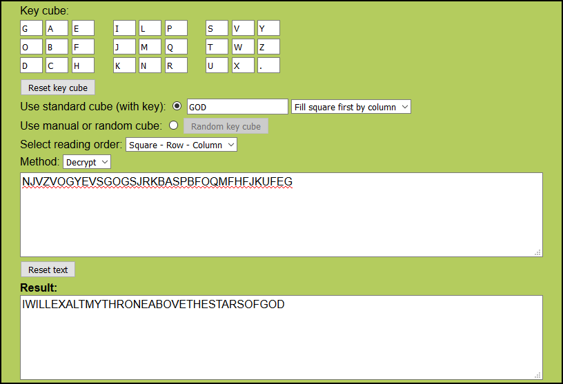
"I will exalt my throne above the stars of God" (Isaiah 14:13)
White
Solved by ffao
"I will ascend above the heights of the clouds" (Isaiah 14:14)
Blue
This is a variation of the Ceasar cipher (aka. ROT-n). First we need to decrement all letters by 7, giving:
FZJIAIZKGDXTOIQY
Then we increment the first letter by 0, the second by 1, the third by 2, and so on:
FALLENFROMHEAVEN
or:
"fallen from heaven" (Isaiah 14:12)
Green
The hint for this face is to use the rail fence cipher (because of the arrangement of the W's) using an offset of 7, which gives the following:
.U.D.W.T.T.E.R.U.D
C.T.O.N.O.H.G.O.N.
or:
"cut down to the ground" (Isaiah 14:12)
Red
Solved by ffao
"brought down to hell" (Isaiah 14:15)
Gray
All currently found solutions are quotes from Isaiah 14 (probably from the King James Bible - thanks to ffao for correction). Assuming the last quote would be also from this text, this means the solution for the gray part is probably:
"Yet thou shalt be brought down to hell, to the sides of the pit." (Isaiah 14:15)
Return to Question
65 Votes, asked by Mike Earnest#10615, answered by Lopsy#1752
Satan should stick to fiddling. You will win, and here is a simple proof.
Consider the game $n$ turns at a time. After each cycle of $n$ turns, all the coins are in their original position (though not necessarily flipped the same way).
Replace $H$ with $0$ and $T$ with $1$.
In each cycle, you flip all $1$'s to $0$'s, until Satan flips a $0$ to a $1$. Once Satan makes a flip, you stop and leave the rest of this cycle's coins alone.
Satan must always make a flip during a cycle. If not, then you have just flipped all the coins to $0$, and you win.
Read the sequence of coins as a binary number. Each cycle's play starts at the ones place and progresses to the largest place. Satan makes the last flip in each cycle, and that flip flips a $0$ to a $1$. Therefore, after each cycle, the number gets larger.
But it can't get larger forever. After at most $2^n$ cycles, it reaches $111...1$. Put on your smuggest face and flip all the coins for a well-deserved win.
Return to Question
64 Votes, asked by Maria Deleva#29050, answered by Glorfindel#11110
The solution is:
or, in text form:
157 239 468
349 685 712
682 174 359
214 763 985
735 928 146
968 541 273
476 352 891
521 897 634
893 416 527
Explanation (not the fastest way, I realized some improvements while writing it):
It's best to start with the 1's and 9's, as they can only be placed on fields with only <'s resp. >'s, and work 'inwards' from there. Note that when I'm talking about <'s, it is 'respective' to the square I'm talking about, so in the first row, the first sign is a < for the leftmost square but a > for the second square.
Let's start with the 1's.
* In the top-left 3x3, the top-left square is the only one with no >'s.
* In the 2nd row, the 8th square is the only one with no >'s.
* For the 3rd row and the top-middle 3x3, that leaves only the 4th square of the row.
* In the middle-left 3x3, the top-middle square is the only one with no >'s.
* That leaves for the 3rd column and the bottom-left 3x3 only the 8th square of the column.
* For the bottom-right 3x3, it then must be the top-right square.
* For the bottom row and the bottom-middle 3x3, it must be the square in the center.
* The two remaining rows and columns are quite obvious.
Next, the 9's:
* Start with the 8th row; the 4th square is the only one with no <'s.
* That leaves for the top-middle 3x3 only the top-right square.
* That leaves for the 4th column only the 5th square.
* That leaves for the 4th row only the 7th square.
* That leaves for the top-right 3x3 only the bottom-right square.
* That leaves for the 8th column only the 7th square.
* That leaves for the 2nd row only the 3rd square.
* The remaining 9 is put in the 1st column, 6th row.
Next step: the 8's. This is already considerably more difficult. An 8 can have zero, one or two <'s.
* In the 3rd row, all squares have <'s which do not come from 9's, except the 2nd square. So that's where the first 8 goes.
* For the bottom-left 3x3, this leaves the bottom-left square.
* For the 3rd column, the 6th square.
* For the bottom-right 3x3, the top-left square.
* For the top-right 3x3, the top-right square.
* For the 2nd row, the 5th square.
* For the 8th column, the 4th square.
* For the 5th row, the 6th square.
* For the 8th row, the 4th square.
Next, the 2's; they can have >'s but only towards 1's.
* In the top-middle 3x3, the only available option is the top-left square.
* In the bottom-right 3x3, the only option is the bottom-middle square.
* In the bottom-middle 3x3, it must be the top-right square.
* In the 8th row, the 2nd square.
* In the central 3x3, the central square.
The 2's aren't finished yet, but I couldn't see any progress here.
Now the 3's:
* The only square in the 6th column where you can place a 3 is the 4th one. The 2nd and 3rd are greater than the 4th one, the 8th is greater than the 9th and between the 9th and the '2' on that row we need another number.
* In the 8th row, the 1st square cannot be a three (it's greater than the square above it) and of the four rightmost squares, the one in the 8th column must have the lowest value of them all, so that's where the 3 goes.
* Now, in the middle-left 3x3, the only possible places for a '2' are the 4th row (the 6th row doesn't work because the central square cannot be '1.5'). This has consequences for the '2' and '3' in the middle-right 3x3; they can't occupy the 4th row or the 8th column and the square in the middle-right has three >'s; that leaves the bottom-left and bottom-right square.
* This means the 3 in the middle-left 3x3 must go in the 5th row, and as it's the lowest number in that row (the 2 will go on the 4th row), it must be in the central square of that 3x3.
* The 3 in the 5th column can only go in the 1st square (the 3rd square is greater than the 3 to it's bottom right, and the 7th square is greater than its left neighbour which is at least 3).
* The bottom square of the 4th column can't be a 3 because its left neighbour can't be a 2. That leaves the 7th square as the only option.
* In the 9th row, the 3rd square must be a 3.
* In the 4th row, the 3rd square can't be a 2 because it's greater than its neighbour above. The 1st square is the only option left.
* That means that in the 3rd column, the 2 goes in the 3rd square.
* There are two options left for the 3 in the 1st column, but the 2nd square is smaller than the 3rd square, so the 3 must go into the 2nd square.
* The only option for the 3 in the 3rd row is the 7th square.
* This means the 6th row has a 2 in square 7 and a 3 in square 9.
* The final 2 goes in the 9th column, 2nd square.
* In the 6th column, the 9th square has to be at least 5 (because there can't be a 3 right next to it), so the 8th at least 6. That means the 4 can only go in the third square because the second square is greater than it.
* The only option for the 4 in the top-right 3x3 is the top-left square.
* In the 2nd row, it needs to go in the 2nd square.
* In the 9th column, the 8th square.
* In the 8th column, the 5th square.
* In the 9th row, the 4th square.
* In the middle-left 3x3, the top-right square.
* In the 1st column, the 7th square.
* The final 4 goes in the 5th column, 6th square.
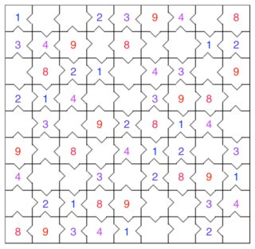
* Now, look at the 2x2 square of blank cells at the bottom, just right of the middle. We need to get down from 9 to 2 in three steps, using the numbers 7, 6 and 5. That only works if the top-left one is a 7, the bottom-right one a 5 and the other two 6's.
The rest of the Sudoku is trivial, and the <'s and >'s aren't even necessary anymore.
Return to Question
64 Votes, asked by Xenocacia#30254, answered by Steven Eccles#30345
Answer:
18, or XVIII in Roman Numerals
Rationale:
The key to this riddle is only for you
Exclusive
Below are instructions, above this the clue
First strike the one near the head of a year
Take away an "e"
Then remove he who begins a cheer
Take away a "c"
Next take away the end of a tunnel
Take away an "l"
Then let us go to solve this puzzle
Take away a "u" and an "s"
What you first took you must now take again
Take away another "e"
With three you are left, but fret not dear friend
Fattest to front and thinnest to rear
Arrange the remaining letters, XIV, in order of size - XVI
Add in two "eyes" and all becomes clear
Add two further "I"s to get XVIII
Return to Question
63 Votes, asked by Mike Earnest#10615, answered by gtwebb#12760
Here is a link to a prezi. If there is anyway to export it that would be great but I'm not exactly sure how it works.
Just keep clicking next through it.
https://prezi.com/oh2efo-ejbv9/untitled-prezi/?utm_campaign=share&utm_medium=copy
GIF
And the path in the format from-to (level). If the number includes a letter it comes from/goes to an internal maze box, if it does not it goes to the outside of the current level.
IN-A3 (1)
3-B1 (2)
1-12 (3)
B12-B11 (2)
11-A10 (3)
10-C4 (4)
4-B6 (5)
6-D8 (6)
8-10 (7)
D10-7 (6)
B7-7 (5)
D7-9 (4)
A9-8 (3)
B8-D3 (2)
3-B4 (3)
4-B6 (4)
6-D8 (5)
8-10 (6)
D10-7 (5)
B7-D10 (4)
10-8 (5)
D8-6 (4)
B6-4 (3)
D4-5 (2)
A5-1 (1)
OUT
Return to Question
62 Votes, asked by 2012rcampion#9718, answered by elias#8822
Here you can find the files found in the recovered compressed file.
The ogg file is distorted, maybe somebody with better audio editing skills can figure out something. The pictures and filenames already tell enough for me though.
A shorter wrap-up of all the findings that lead to the result can be read here, but I also kept the original post with updates for those who are interested in the complete history of the discoveries.
I promised to share all the code I've written to solve this puzzle. I've cleaned them a little bit, and made them available here (zip, ~30.5kB).
The corners for positioning, the alignment bits around them and two extra white pixels in the middle are at the very same positions for the tiles of all three raven tilesets. If we rotate the tiles on the two-page document 180 degrees, they have all these bits in the very same positions too.
The pixels should be converted to a bitstream, using boustrophedon traversing: rows by two, alternating between left-to-right and right-to-left, inside those always column first, top to bottom. See the red arrows on the picture below for clarification. White pixels should be converted to 0, black ones to 1.
The forementioned two white pixels actually work as a separator between the header and body part of the bitstream. The header is 378 bits long, while the body consists of 2040 bits.
The header should be read as 63 6-bit units. It uses a Reed-Solomon code with a message length of 15 units, and 67 as the primitve polynomial - just as it was given as a parameter for gfPow on the printout. If you don't know Reed-Solomon codes, you can think of it as a clever version of parity bits. The high redundancy it introduces allows us to recover the important 15-unit long main part of the header even if any 24 units (out of the 63) were corrupted. This 24 comes from an important parameter of the code, 2x24+1=49 is the so-called distance of the error correction, meaning that any two encoded words differ in at least 49 units. It is also not a coincidence, that 49=63-15+1, that is it is one larger than the difference of the block length and the message length. So the first 15 6-bit units are the important part of the header, the rest was there to make it possible to recover this first 15 if they are read imperfectly.
Even after the solution, most of these 15 6-bit units' meaning remained unknown, but we know that the last 4 is a counter. Each tile has a unique index, starting from zero, with an increment of one. The tiles were ordered according to this index in the raven-none and raven-ordered tilesets, but they were in a randomized order in the raven-random tileset and for the pages in the focus of the puzzle. For this latter, the largest index found was 2408 - suggesting there were at least 2409 tiles in this tileset, but only 2182 remained intact and were given in the tiles.zip provided by the official hint.
The only other 6-bit unit understood was the very first one. Its value serves as a parameter for how the body should be read - this was 16 for all the raven tilesets, but 20 for the last one.
The body uses Reed-Solomon error correcting codes as well, but with different parameters than the header. Here, units are 8 bits = 1 byte, and the block length is 255 bytes. The primitive polynomial is 301 for these (just as it was for rsgentest on the printout), the distance is 33 for the raven tilesets, and 41 for the tileset on the burnt paper. 33=2x16+1 and 41=2x20+1, so the first number in the header is the maximum number of errors that can be corrected in the message.
If a tile is successfully decoded, we're left with 223 correct bytes per tile in the raven tilesets, 215 in the document. But for some tilesets not all the tiles can be successfully decoded: raven-ordered suffered a spilled out coffee, and the two-page document got burnt. It is still possible to recover these, because of a second layer of Reed-Solomon codes. The raven tilesets use 223 bytes block length and 191 bytes message length, the two page document uses 215 bytes block length and 175 bytes message length. All the other parameters are the same they were in the first encoding.
For the raven-none tileset there is no interleaving, so the second layer is just another encoding on a single tile. But for all the other tilesets this second layer uses a diagonal structure: for example on the mysterious document the 617th block starts with the 1st byte of the 617th tile's , then the 2nd byte of the 618th tile's message follows, and so on, the last one in this block is the 215th byte of the 831st tile's message. Wherever it is needed, the indices wrap around, so the 2nd byte of the 2409th block is coming from the 2nd byte of the 1st tile's message (assuming that there are actually 2409 tiles in total, and not more).
A last problem was, that some of these blocks miss more than 20 bytes. However, in this case, the position of these wrong bytes are known (using coding theory terminology, in this case they are called erasures, not errors), and because of this, twice as many can be corrected. It is possible to recover all these blocks, extract the messages inside them, and you just have to concatenate them to get the original file. It is a bz2 file, containing a tar file, containing the three images and the audio file listed on the link above.
Original post (April 28)
Just some ideas which might lead someone somewhere:
First,
@ffao's answer already suggested the use of polynomials over finite fields. Might it be, that the 'rs' in the filenames means Reed-Solomon, which is a type of error-correcting codes, just as QR codes are? I don't see the maths matching, however.
And I think the last page contains
three examples, what the encoding (with different parameters) produces on a sample text, probably Edgar Allan Poe's The Raven. At least that's what that filename suggests for me.
Update #1 (July 6)
I finally decided to digitalize the images.
You can find the output as a zip of text files here (~1.9MB).
I used the numbered, cut out and aligned tiles from @2012rcampion's answer with hints. 1s represent whites, and 0s represent blacks. There are some errors in the conversion, as the blacks and whites weren't perfect, but hey, if it's QR, it should be prone to errors :).
An even more cropped version can be found here (~1.6MB).
The difference from the above one is that 4 bits are removed in every direction, so there is no overlap between two tiles, and the aligment bits are cut in quarters in this conversion.
Feel free to use them!
Update #2 (July 7)
Sorry, I just realized that the cropped images were cropped too much (missing 4 important rows on the right and the bottom). I've corrected them, the link above now points to the corrected version.
I also changed the threshold used to distinguish black and white cells. It's still not perfect, but seemed to be better then the previous one.
Update #3 (July 7)
Using again the official hint answer,
this time the averaged pictures (for which the original idea comes from @WesleySitu). It seems that the alignment bits of the raven-* documents look like the bluish parts of this (png, ~2.6kB).
However,
the mysterious document's alignment bits do not match, until you rotate them 180 degrees, upside down. So I'm pretty sure @LeppyR64's observation about rotating them upside down before further processing is correct.
Update #4 (July 11)
Traversing the pixels in the order that @WesleySitu suggested, the raven-* codes turn into these (zip, ~61.2kB) strings of 0s and 1s. If it is needed, I can convert the pages of the mysterious document too, but I think we should understand first what raven.txt went under.
For clarification, the order in which the pixels are read goes to the following pattern:
Neglect the alignment bits.
The rest is processed in rows of two, alternating from left to right, column first, from the top.
Update #5 (July 12)
As @2012rcampion pointed out, there was a bug in my code which was responsible for the order in which the pixels were read in. I've corrected it, and replaced the zip above.
Update #6 (July 26)
I tried to run the lines (which I got with the method above) through a Reed-Solomon decoder with the standard parameters (n=255, k=223). The bytestream I got is not human readable. Either this is not the next step that should be done, the parameters are not-standard, or I messed up something. I tried it with white cells as 1s and blacks as 0s and vice versa as well.
Update #7 (July 28)
I'm not yet sure how I did it, and the data seems to be dirty, but
just as I guessed in my original post, the raven-* documents are the encoded version of Edgar Allen Poe's The Raven.
I will be back after I manage to come up with a cleaner output.
Update #8 (July 28)
So here's what I've found earlier today. It is still work in progress, but seems like I've managed to identify some parts of the tiles:
What makes me to think this?
I was parsing the files I linked above as the digitized versions of the raven-none tiles, and playing with different Reed-Solomon parameters and bit offsets. Some parts of the resulting bytestreams started to make sense for the human eye, and 'BANG!' I immediately recognized parts of the poem I first mentioned in this post exactly three months ago.
Decoding the 'actual message' part as bytes and converting them to the corresponding ASCII characters, the raven-* documents hold these messages.
I did not check, but I think the raven-ordered and raven-random messages are some permutations of the characters in raven-none message.
The numbers (191+32+32 bytes) match too nicely not to be some kind of Reed-Solomon codes (my other first impression in my original post), but I didn't yet manage to build those parts together in a way that it makes sense.
As the raven-none tiles don't have any black pixels in the last 32 bytes, I think those bits cannot be a part of the error correcting bits. My first idea was that they are also part of the actual message and have to be used to reorder the characters to get back the original message, but did not manage to get anywhere with this so far.
So our idea about how to traverse the bits is confirmed.
And if you are using my files, you have to invert 0s and 1s as it seems black pixels represent 1s, white pixels represent 0s.
Update #9 (July 29)
A correction again - there was a mistake in the bit cluster picture above.
Update #10 (July 29)
I also figured out what to do with the ordered interleaving.
Rows represent tiles (in order, so tile0000 is in the first row), and the columns are the bytes extracted with the same method I used for raven-none. Newlines and other special characters are replaced by '+'.
Another new observation is, that
the tiles in the raven-random image are the very same tiles as the ones in the raven-ordered image, the only difference being their order (ordered tile0000 is random tile0011, ordered tile0001 is random tile0003, and so on).
The name suggests their order is random, but maybe with the help of the interleaving bits they can be somehow sorted, and once they are ordered, the previous method can be used to get the content of the message.
Preparing for the worst, I suppose
the mysterious document's pages are encoded with random interleaving, which means some characters (of the burnt tiles) will be missing every now and then from the message. Also those don't seem to have alphabetical characters, at least that's what their average's uniform gray color suggests. We will see soon.
Update #11 (July 31)
I was working on turning the mysterious pages into bits when I read @TusanHomichi's results, and his suggestion to redigitize the tiles.
I tried to do my best, played a lot with ImageMagick commands, and although it's still not 100%, I managed to
get a new version of the raven-* tiles, which gives an almost perfect bitstream - even before the error correcting is done. Of course I still converted the mysterious document as well. White pixels are decoded as 0 this time. You can find all these files here (zip, ~1.5MB).
Using these, and @TusanHomichi's observations about
the header, I managed to come up with the correct order of 2055 tiles of the mysterious document (txt, ~25.2kB). 'l' and 'r' stands for left and right page, the 4-digit number is the index of the tile as it was given in the zip provided by @2012rcampion. There are some holes in the sequence, but not that much. I estimate the missing number of tiles around 350-360.
Update #12 (July 31)
After these findings, I returned to work on
the message parts of the now ordered tiles. As @TusanHomichi noted earlier, the error correcting codes do not work in most of the cases, I managed to decode only 507 tiles.
So I tried to brute force some parameters, namely I replaced the modulus of 301 with all the possible irreducible 7-degree polynomials over GF(2). None of those helped to decode, not even a single tile.
Thus it seems, the modulus 301 is hardcoded in the encoding procedure, and this makes sense, as it wasn't given in the command line during the raven encodings.
However,
there is another parameter, which was: '-t 16'. I've also noticed that the first and the seventh 6-bit chunk of the header of the raven tiles has the value of 16. For the mysterious document, the seventh is also 16, but the first one is 20. So maybe it was encoded with '-t 20'. But what that t means is still unclear. As another '--t=4' appears in the arguments of the run of rsgentest, I suspect it is worth looking for in that direction.
As a less serious sidenote,
another command line parameter of the encoding was '-s 6x6'. Probably it was for the shape. And what could be the shape parameter for the mysterious document's command?
It definitely has 30 columns and at least 40 rows, that's 2400 tiles on the two pages altogether. We also know, that the pages were upside down, and the last row is full, suggesting, that the number of tiles printed on those two pages is divisible by 30. Furthermore, in the headers we've seen indices in the range between 0 and 2408. So we have at least 2409 tiles, maybe a little bit more, if the ones with the largest indices are among the burnt ones. But it is very unlikely that there are 21 in a row lost, which would complete a full row. So probably there was another page with the last 9 or slightly more tiles in the office.
Haven't you found anything like that, @2012rcampion? Maybe at that time you didn't happen to realize it is the last part of this document, but you still picked it up with all the other papers. Not that we need some more tiles that much, but maybe there is some other important information (a.k.a. hint) on that piece of paper...
Update #13 (August 1)
Further optimizing my digitizing process, I managed to
get the counter in the header for all the tiles provided. I had to do the last 14 manually, but hopefully there aren't any errors. The file I linked yesterday about the correct order of the tiles is now updated. Of course the burnt tiles are missing, so are the ones which did not fit on the pages.
The message parts can be decoded with my current method for about 1700 out of 2182. I will publish those soon.
Update #14 (August 1)
I started publishing
the message bytestreams of the tiles (now ordered according to the counters inside them). You can find all the encoded messages and the succesfully decoded ones here [EDIT: link removed with update #16]. The set of the latter is continuously updated.
Update #15 (August 1)
Here [EDIT: outdated, see update #18] you can find my current best attempt as the target file's reconstruction. Some assumptions I used:
I assumed that the tile index 2408 what we saw is the actual largest, so there are 2409 tiles in total.
Wherever the decoding was successful, I used its outcome. If the decoding failed, I used the corresponding byte of the encoded version. If the whole tile was missing, I used the byte 0xff, as a simple frequency analysis showed there are more black pixels than white ones.
If anyone can open it with something, let me know. I guess it still has too many corrupted bits to be opened.
Update #16 (August 2)
For some tiles the main problem was
a one pixel translation into x or y direction. Identifying these tiles and realigning them before processing allowed me to encode further 174 of them. Now there are 1910 which can be perfectly decoded. The link above to the reconstructed file is updated.
I removed the link from update #14 to the decoded and encoded versions of the tiles, as they are not that helpful. Here is a zip of undecoded tiles instead [EDIT: no more tiles left unsolved].
Update #17 (August 2)
Further finetuning of
parameters in my ImageMagick scripts allowed me to decode all but 5 tiles. The reconstructed file and the 5 problematic tiles are now available on the links above.
These tiles seem to be tricky, probably they need manual corrections, but it's getting late here, and I just cannot focus with my eyes any more today. Maybe someone else is more fresh to do that.
I still don't know what to do with the restored file. Maybe it needs the last 5 tiles. Maybe even with those a good enough reconstruction is impossible.
Update #18 (August 3)
I'm done with
manually correcting the last 5 tiles. I've updated the reconstructed file. My system automatically detects it as a .bz2 file, but still cannot open it. Maybe it has some error correcting structure, or it can be restored with some data restoring software.
It is available in 2 versions: supposing there are 2409 tiles in total, or 2410.
Update 19 (August 3)
I've found some
short description about what kind of error correction is used for .bz2 files, and managed to use the recovering tool mentioned there on the 2409-tile version above (it fails on the other one). This is the result, but I still cannot open it.
Update #20 (August 6)
I realised, that
there is another layer of Reed-Solomon encoding inside the encoded versions of the tiles, with block length of 215 bytes, and message length of 175 bytes. The blocks go across tiles, so it might be possible to restore the missing tiles and thus the missing parts of the file, but so far I've only managed to recover only about half of the blocks. The file remains corrupted.
Update #21 (August 7)
As a second tought, I'm not sure about
the message length being 175 bytes. Do you remember the number 16 in one of the 6-bit chunks in the header? Maybe it means the maximal distance for the error correction, and then the message should be 183 bytes.
Anyway, it seems the only direction going forwards is to decode some more tiles, which weren't provided in the post with the official hints. There aren't too many, but maybe just enough to get inside the maximal distance, and have a successful decoding for all of the blocks.
Update #22 (August 8)
I'm now working on
extracting some more tiles from the original pictures. There are about 116 partial tiles, here are the rotated versions of some which give some hope to be recovered.
Update #23 (August 10)
It seems like
the message length is 175 bytes, at least I manage to decode more parts with this parameter. This means that the 215 byte block can have 20 bytes wrong. Because of the diagonal structure, a part of the bz2 file can be recovered if we have at least 215-20=195 tiles of every consecutively indexed sequence of tiles - that is, the first part needs at least 195 tiles from tiles indexed between 0 and 214, the second part needs at least 195 tiles from tiles indexed between 1 and 215, and so on.
Well, the original tiles.zip does not contain enough tiles to cover all these sequences sufficiently: for example, we have only 185 tiles with indices in the range [165, 379], so I don't see how the corresponding part of the file can be recovered without knowing some more tiles with indices in that range.
So I'm now hunting more tiles. Some more which I managed to decode successfully are the ones marked with blue here:
The first few were possible to extract without manual work, but the task is getting more and more tricky. It obviously offers only a limited number of tiles to be recovered. Probably not even enough to recover the missing parts of the file.
The method worked very well with the raven-ordered file where some tiles were too badly corrupted themselves, but the diagonal error coding made it possible to recover them.
However, maybe there is another direction which we should go for these pages, as we don't have enough tiles for the diagonal decoding. I'll still keep hunting for tiles for a while though.
Update 24 (August 11)
Finally here is the recovered file.
It is a bz2, extracting it you get a tar, extracting that you get 3 pictures and an audio file. I'm still having troubles playing the audio, but the pictures suggest I shouldn't even tell anybody I've ever seen them or heard the message on the audio.
Return to Question
62 Votes, asked by Puzzle Prime#14140, answered by 2012rcampion#9718
The back side is:
An anagram for PUNISHMENT
Rearranging the letters to match transforms the front into the numbers:
1713
The result as a picture
Return to Question
62 Votes, asked by Rubio#30633, answered by Brian Rushton#10582
Rubio specifically mentioned partial solutions, so I thought I'd start recording information here, starting with the cryptic clues. Unfortunately, I realized that
they're completely useless.
Number 1:
Italian food is PIZZA, left unfinished is PIZZ. If I and U trade places, it becomes PUZZ. If you begin Lasertaking to get an L, and take the first letters of Interesting, Now Greatly, you get PUZZLING, which is certainly perplexing.
For the cryptic clues, number 2 seems to be
STACK, which is a synonym for chimney and part of playing Towers of Hanoi.
Finally, number 3 is
EXCHANGE, which means replace, and is also an old partner (EX) with something new (CHANGE).
Thus, the cryptic clues spell out
PUZZLING STACK EXCHANGE
Edit:I think I've figured out the next step. The only way the clues make sense is if:
The cypher text is BRAILLE, which has special encoding for quotation marks, FOR, and AND. The resulting image should most likely make an image, thus being the 'photojournalist'. I don't have the time right now to translate the whole text into braille, but I hope someone does!
Solved!
The answer is "Image writer dot matrix printer", spelled out in grade ii braille encoding!
⠽⠯⠀⠎⠋⠱⠀⠞⠳⠀⠮⠠⠶⠀⠿⠯⠀⠣⠜⠜⠀⠟⠣⠀⠽⠯⠀⠹⠏⠀⠿⠯⠀⠟⠣
⠀⠀⠀⠯⠕⠀⠪⠕⠀⠹⠏⠀⠀⠀⠎⠋⠱⠀⠞⠳⠀⠹⠏⠀⠟⠣⠀⠽⠯⠀⠕⠪⠀⠀⠀⠀⠀⠀⠟⠛⠀⠟⠣⠀⠽⠯⠀⠟⠾⠀⠹⠏⠀⠿⠯⠀⠟⠣
Here is a Braille Visual
Return to Question
61 Votes, asked by Qaisar Satti#23204, answered by Techidiot#30887
The code is:
042
Explanations:
One number is correct and is also correctly placed:
2
One number is correct but wrongly placed:
4
Two numbers are correct and wrongly placed:
0 & 2 incorrectly placed
Nothing is correct:
None of them are in the code
One number is correct but wrongly placed:
0
Approach/Thought Process Chosen
682 - One number is correct and well placed
Correct Number's array - 6,8,2
Confirm Number's array -
614 - One number is correct but wrong placed
Correct Number's array - 8,2,1,4(6 is removed since this clue contradicts the previous one and hence 6 should not be present even in the code-The position of 6 is same in Clue 1 and 2 which mean's it can be pushed out of scope)
Confirm Number's array -
206 - Two Numbers are correct but wrong placed
Correct Number's array - 8,2,1,4,0
Confirm Number's array - 0_2(Since 6 is out of scope, consider 2 and 0 to be in the confirm array list and clue 1 says 2 is well placed )
738 - Nothing is correct
Correct Number's array - 0,2,1,4(8 is removed from the array)
Confirm Number's array - 0_2
780 - One Number is correct but wrong placed
Correct Number's array - 0,2,4(Clues 3 and 5 confirms the position of 0 to be the first. Clues 1 confirms the position of 2. Clue 2 confirms the position of 4 and hence 1 is removed from the list)
Confirm Number's array - 042
Return to Question
60 Votes, asked by GentlePurpleRain#4421, answered by Aggie Kidd#9951
This is a compilation of many previous answers and adding of my own. Most of the credit to Paul Evans, Sleafar, charfellow, and question_asker (in no particular order).
The answer is:
David
You've probably seen me naked.
The Statue of David is a famous statue of King David in the nude. (from charfellow)
As an alphabet aficionado, I can make you laugh long into the night.
David Letterman, comedian and former late-show talk host. A letter man is an alphabet aficionado. (from question_asker)
As a make of Japanese vehicle, I can keep your surroundings clean and beautiful.
David Suzuki, environmental activist. Suzuki is a make of vehicle from Japan. (from question_asker)
As an execution apparatus, I make you laugh despite not maturing.
David Cross, comedian and actor on Arrested Development. A cross is an ancient method of execution, and not maturing = arrested development.
As a mixed-up romance, I lead tens of millions.
David Cameron, prime minister of the UK. Cameron is an anagram of romance. (from Paul Evans)
As a gardening tool, I provide weekend evening entertainment and provide guidelines for proposing.
David Spade, a comedian on Saturday Night Live and an actor in Rules of Engagement.
weekend evening entertainment = Saturday Night Live
guidelines for proposing = rules of engagement.
As a reddish-brown meadow, I dazzle you with tricks.
David Copperfield, illusionist. A reddish-brown meadow is a copper field. (from question_asker)
As a fighting knife, I make popular music and navigate a maze.
David Bowie, acclaimed singer, and actor in the movie Labyrinth. A Bowie knife is a popular knife originally made for fighting, and a maze is a labyrinth. (from Sleafar)
As a speech-impaired aquatic athlete, I am your friend.
David Schwimmer, actor on the TV show Friends. An aquatic athlete is a swimmer, which might be pronounced, "schwimmer" by someone with a speech impairment. (from charfellow)
As a renter, I am your doctor.
David Tennant, actor on the TV show Doctor Who. A renter is a tenant, and he plays the role of the doctor. (from charfellow)
Return to Question
60 Votes, asked by Rafe#2225, answered by Zyerah#20
If I asked what door would lead to freedom, what door would the other guard point to?
If you asked the truth-guard, the truth-guard would tell you that the liar-guard would point to the door that leads to death.
If you asked the liar-guard, the liar-guard would tell you that the truth-guard would point to the door that leads to death.
Therefore, no matter who you ask, the guards tell you which door leads to death, and therefore you can pick the other door.
Return to Question
59 Votes, asked by Ankoganit#25412, answered by Milo Brandt#4765
Yes, the policeman can catch the thief, although it may take a very long time. In particular, the following strategy works: The policeman starts in the center. First, he makes a counterclockwise loop around the top right quadrant. Then, he makes a counterclockwise loop around the top left quadrant. Then, he makes a counterclockwise loop around the bottom left quadrant. He continues making such loops until he catches the thief, each time moving to the next quadrant in counterclockwise order. The strategy is illustrated in the following picture, where he executes the red arrows, then the green arrows, then the blue arrows, then the yellow arrows, and then repeat the whole process ad nauseam. The diagram below labels the four steps in each counterclockwise loop from $1$ to $4$, which will be useful in discussing the strategy.
In the comments, @f'' points out that this strategy may also be described as follows: The policeman walks around the perimeter counterclockwise. Each time he reaches the midpoint of an edge, he walks into the center and then back out, continuing his traversal of the perimeter from where he left off.
To show that this works, let us first notice that the thief can never safely visit the center of Squareshire. This is because, for her to do so, she would have to run from the perimeter to the center and then back in the time it takes the policeman to make one loop. However, this requires her to run past two edges in the time the policeman runs four, which she cannot do.
In particular, this "disconnects" the center in a way, meaning that, if the thief is not in the center, there is a unique point $P$ on the perimeter where she last left the perimeter, and where she must later enter the perimeter again. This will always be a midpoint of one of the outer edges. An important property is that the thief is no better off leaving the perimeter, then coming back, than she is just standing at point $P$. That is, if she leaves the perimeter at a point $P$, and the policeman then sees that point, she will be surely caught.
To show this, consider what happens during the policeman's first loop around the top left quadrant. If $P$ is the midpoint of the top edge, then the policeman sees it after walking two edges. It continues to be visible to the policeman until he reaches the midpoint of the top edge, at which point he sees everywhere the thief could safely be*. If $P$ is the midpoint of the left edge, then the policeman must have already travelled more than one edge before the policeman enters, and the first time the policeman will see $P$ is when he returns to the center. He will also see the whole edge connecting to $P$, so the thief will die regardless of whether she stayed at $P$, or ventured inwards. The case for the midpoint of the bottom or left edges is similar.
This establishes that, if the thief can survive, she can do so while staying on the perimeter. However, the policeman is "sweeping" the perimeter faster than she can move. In particular, let us label every point of the perimeter by a number** with the numbers increasing in the counterclockwise direction such that the difference between two labels is proportional to the distance between them, as walked on the perimeter. We will consider that $1$ and $0$ represent the same point:
During the policeman's first loop, he is able to see the point $0$, then for a while sees all the points in $[-1/8,1/8]$, then sees all the points in $[1/8,3/8]$. On his way back to the center, he sees the point $1/4$. Then, on the next loop around, he sees the same sequence of points, just shifted by $1/4$ forwards, to signify that he is now sweeping the next quadrant. The significance is that the thief can travel at most some constant amount less than $1/4$ around the perimeter in each of these steps, so the policeman's view eventually catches up. A plot of this is provided below, where the thief's position on the perimeter is a yellow line, running as fast as it can away, and the policeman's view is the shaded region bounded by blue and purple lines. The $x$-axis gives the distance walked by the policeman as a fraction of the perimeter.
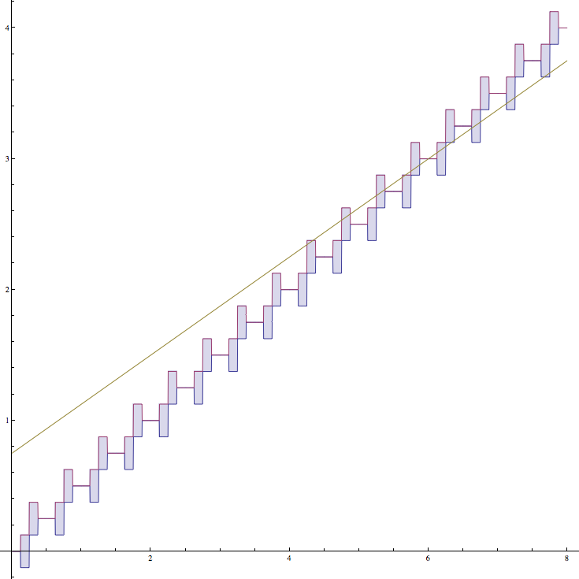
The important note here is that the thief's line is limited in slope to some constant less than $1/2$, whereas the policeman's view is moving forwards with an average slope of $1/2$. The thief wishes to avoid her line intersecting the policeman's view, but this is, of course, impossible.
(*Note that the thief could have run across the center so that the policeman doesn't see her until he returns to the center, but we already established that running through the center is a fatal mistake, so we assume the thief doesn't do this.)
(**For mathematicians, we're really considering the perimeter to be $\mathbb R/\mathbb Z$, and then lifting both the policeman's view and the thief's position to $\mathbb R$)
Return to Question
59 Votes, asked by GOTO 0#4394, answered by Dr Xorile#15942
All three are drunk
If the first were sober s/he would answer yes. So the first is drunk.
If the second were sober s/he would answer yes. So the second is drunk.
If the third were sober s/he would answer yes. The third now has enough information to answer "no", but is too drunk to realise it.
Return to Question
59 Votes, asked by dcfyj#22684, answered by Siyual#17596
Her name is
Jenny
Her phone number is
867-5309
Because
The message is in morse code, the numbers represent the number of .s and -s should be in that place. E.g. 1.4- = .----
The translated message is:
.---- --..-- .---- ..--- --..-- .---- -.... --..-- ---.. --..-- .---- --..--
----. --..-- .---- ....- --..-- ....- --..-- ----. --..-- .---- --..--
..--- ----- --..-- .---- --..-- .---- ....- --..-- --... --..-- .---- ..... --..--
.---- ----. --..-- ----. --..-- ..... --..-- .---- ---.. --..-- .---- ---.. --..-- .---- --..--
----. --..-- .---- ....- --..-- ....- --..-- ----. --..-- .---- --..--
..--- ....- --..-- .---- ---.. --..-- .---- --..-- ..--- ..... --..--
.---- ----. --..-- ----. --..-- ..... --..-- .---- ---.. --..-- .---- ---.. --..-- .---- --..--
..... --..-- ...-- --..-- ---.. --..-- .---- ..... --..--
..--- ..--- --..-- ----. --..-- ...-- --..-- ..--- ----- --..-- .---- ..... --..-- .---- ---.. --..--
..... --..-- ...-- --..-- ---.. --..-- .---- ..... --..--
.---- ....- --..-- .---- ..... --..-- ..--- ..--- --..-- ..... --..-- .---- ...-- --..-- ..--- --..-- ..... --..-- .---- ---.. --..--
-.... --..-- .---- ..... --..-- ..--- ....- --..-- ..--- ----- --..-- .---- ---.. --..-- .---- ..... --..-- ..--- ----- --..--
----. --..-- .---- ....- --..-- ....- --..-- ----. --..-- .---- --..--
-.... --..-- .---- ..... --..-- ..--- ....- --..-- ..--- ----- --..-- .---- ---.. --..-- .---- ..... --..-- ..--- ----- --..--
..... --..-- ...-- --..-- ---.. --..-- .---- ..... --..--
..--- ----- --..-- .---- --..-- .---- ....- --..-- --... --..-- .---- ..... --..--
.---- ---.. --..-- .---- ..... --..-- .---- ...-- --..-- ..... --..-- .---- ..... --..--
..... --..-- ...-- --..-- ---.. --..-- .---- ..... --..--
..... --..-- ...-- --..-- ---.. --..-- .---- ..... --..--
..--- -.... --..-- ..--- .---- --..-- .---- ..--- --..-- ..--- .---- --..--
..... --..-- ...-- --..-- ---.. --..-- .---- ..... --..--
..... --..-- ...-- --..-- ---.. --..-- .---- ..... --..--
.---- ---.. --..-- .---- ..... --..-- .---- ...-- --..-- ..... --..-- .---- ..... --..--
.---- ..... --..-- .---- ----. --..-- ...-- --..-- .---- --..-- .---- ---.. --..--
.---- ....- --..-- .---- ..... --..-- ..--- ..--- --..-- ..... --..-- .---- ...-- --..-- ..--- --..-- ..... --..-- .---- ---.. --..--
----. --..-- .---- ....- --..-- ....- --..-- ----. --..-- .---- --..--
.---- ....- --..-- .---- ..... --..-- ..--- ..--- --..-- ..... --..-- .---- ...-- --..-- ..--- --..-- ..... --..-- .---- ---.. --..--
..... --..-- ...-- --..-- ---.. --..-- .---- ..... --..--
.---- ---.. --..-- .---- ..... --..-- .---- ...-- --..-- ..... --..-- .---- .....
Which, converted to plain text is:
1, 12, 16, 8, 1, 9, 14, 4, 9, 1, 20, 1, 14, 7, 15, 19, 9, 5, 18, 18, 1, 9, 14, 4, 9, 1, 24, 18, 1, 25, 19, 9, 5, 18, 18, 1, 5, 3, 8, 15, 22, 9, 3, 20, 15, 18, 5, 3, 8, 15, 14, 15, 22, 5, 13, 2, 5, 18, 6, 15, 24, 20, 18, 15, 20, 9, 14, 4, 9, 1, 6, 15, 24, 20, 18, 15, 20, 5, 3, 8, 15, 20, 1, 14, 7, 15, 18, 15, 13, 5, 15, 5, 3, 8, 15, 5, 3, 8, 15, 26, 21, 12, 21, 5, 3, 8, 15, 5, 3, 8, 15, 18, 15, 13, 5, 15, 15, 19, 3, 1, 18, 14, 15, 22, 5, 13, 2, 5, 18, 9, 14, 4, 9, 1, 14, 15, 22, 5, 13, 2, 5, 18, 5, 3, 8, 15, 18, 15, 13, 5, 15
The result above
is the letter number in the English alphabet. (e.g.: 1 = A, 2 = B, etc.)
Translating this, we get:
ALPHA
INDIA
TANGO
SIERRA
INDIA
XRAY
SIERRA
ECHO
VICTOR
ECHO
NOVEMBER
FOXTROT
INDIA
FOXTROT
ECHO
TANGO
ROMEO
ECHO
ECHO
ZULU
ECHO
ECHO
ROMEO
OSCAR
NOVEMBER
INDIA
NOVEMBER
ECHO
ROMEO
These are the
Phonetic spellings of the English alphabet.
Which spells out the following:
AIT SIX SEVEN FIFE TREE ZEERO NINER
Which are the
Phonetic spellings of the numbers.
Giving us her phone number:
867-5309
Which, pop-culture tells us belongs to:
Jenny
Return to Question
58 Votes, asked by Bailey M#11475, answered by Alconja#5208
So, standing on the shoulders of giants, and adding in the answers to two remaining stanzas, we get the final complete solution (as noted by Quassnoi), to discover that life is indeed:
PUZZLING
Looking at the riddle, it's fairly obvious that the clues are cryptic, but there's a little more to it than that. As hinted, the final stanza tells us how to approach the puzzle beyond these cryptic clues.
Between the lines you'll find your answer, definitively twisted;
yet in the shadows aligned so clearly you'll be surprised you missed it.
The definitively twisted part hints to us that the stanzas not only contain a word discovered through cryptic clues, but also the definition of the answer to one of the other stanzas. So as we solve cryptic clues, we can validate these answers by looking for words/phrases elsewhere to find synonyms/definitions thereof.
The in the shadows aligned part of the clue will become apparent at the very end...
Now, stanza by stanza we have:
Stanza 1:
To start, stay within the pathway of general glee,
though stay clear of the law faery, who flits about wildly.
Giving us:
PATHOGEN, by staying within PATHway Of GENeral, avoiding each of the letters from "law faery" (once each), as shown by Pete. This is of course synonymous with virus, from stanza 6.
Stanza 2:
The road third-least taken leads to you and I in flight.
Head north 'til you see the reverse, then once more north to the burial site.
Giving us:
QUINCUNX, by way of Q (the third least common letter for a word to start with), U & I (in flight), then N(orth) CU (U C reversed), N(orth), X (marks the spot). The definition of which ("an arrangement of five objects with four at the corners of a square or rectangle and the fifth at its center") can be found in the first line of stanza 3.
Stanza 3:
When five becomes square, it may lead to confusion;
behead the basilisk, an ironic inclusion.
Giving us:
WIZARDRY (again as from Pete), from a beheaded basilisk (aka lizard) to get IZARD, included in WRY (irony). The synonym, sorcery, is found in stanza 4.
Stanza 4:
Before two sharp curves and the ring of sorcery,
stand still, close your eyes, and count aloud past three.
Giving us:
FORZANDO, once more found by Pete, based on FOR (what you hear when you count past three), Z (two sharp curves) AND O (a ring). The definition of forzando in music is to play forcefully, as seen in stanza 8.
Stanza 5:
In the air - do you hear it? The water baby screams.
Let our own misgivings start and end in our dreams.
Giving us:
HEIRLOOM, again from Pete, because HEIR (sounds like air) plus the start letters of L(et) O(ur) O(wn) M(isgivings) at the end. With the synonym being keepsake from stanza 7.
Stanza 6:
A quixotic elf and I stand at the gates -
succumb to the virus, and the city awaits.
Giving us:
FELICITY, as solved by Quassnoi, derived from FEL (anagram of elf), I, and then CITY. Felicity means happiness, or glee, as seen in stanza 1.
Stanza 7:
As you approach the arbor, I wait in between.
Clutch your keepsake as the first enemy's heard and seen.
Giving us:
AIRBORNE, again from Quassnoi, since we put I into ARBOR (airbor), and add N (first letter "heard" in enemy), and E (first letter "seen" in enemy). The definition, "in flight" is found in stanza 2.
Stanza 8:
Will being stuck in all this goo truly help you see?
Primarily, primarily; whip around, forcefully.
Giving us:
POLLIWOG, by whipping around (reversing), the letters from WILL stuck in the letters of GOO (i.e. gowillo reversed), but starting with P (start of primarily). A polliwog is a tadpole, or a water baby from stanza 5.
Bringing all these words together, we end up with eight eight letter words:
Pathogen
qUincunx
wiZardry
forZando
heirLoom
felicIty
airborNe
polliwoG
And finally, coming back to the "in the shadows aligned" hint, we see aligned down the diagonal, the final solution.
Return to Question
57 Votes, asked by Egor#6163, answered by Foami#26356
I think it is
Cheese
Stolen from babies as soon as I'm born,
Right from my maker by force I am torn
Normally babies would drink milk, or milk gets taken away from the cows. Credits to bg6471 and that2guy
Pale at first, weak, and infirm,
Oh how I'll change in my ultimate form.
Cheese is made from milk, and is mostly white and does not have a shape.
Billions of creatures will toil away
Changing me subtly, day after day.
It could mean the cultures, or living bacteria that changes the lactose in the milk, turning it into lactic acid.
I will be ready, it won't take too long
And then I'll be sharp, and I will be strong
Sharp cheese(acidic natural tasting cheese), it has a strong taste
I can be orange, yellow, or blue
And that will be it, that's the last clue.
I think it refers to the different type of cheese or it's color.
also the title,
A person says Cheese! when a picture of him is being taken, hence the smiling part of the title.
Return to Question
57 Votes, asked by Kelsey Abreu#33241, answered by Zyerah#20
Red n is a mine. The pattern, subtracting off known flags, is 2-2-1 (above n-o-p) against a wall. The middle 2 must be next to 2 mines, but only one mine can be on o and p, so the second mine must be n.
Red q is not a mine. If it were, then the 3 above red p would be satisfied, which leaves only one square for the 2 above red o.
Also, as Kevin Crussijen points out, i, j, k, and l can have only one mine between them, so at worst, if nothing else comes up, guess there.
Return to Question
57 Votes, asked by Beastly Gerbil#18250, answered by Beastly Gerbil#18250
This is a comprehensive and complete roundup of the answers submitted by various users and brought together by the OP. A lot of this was solved in chat, mainly by Deusovi, Rubio, Techidiot and Volatility.
The first letters of each paragraph say 'NICE TRY'. So we need to look somewhere else...
The italics say 'check the last letters', so looking at the last letters of each paragraph, from bottom to top, you get 'BACK TEN'.
Going back, counting ten words each time like we counted forward nine in save your wife, and starting from the last word of the last paragraph you get the message:
"Last letters of the words can move forward to be the first of the next word, but reverse each of them before hand. I fear that I will not see you again. Please help me."
This seems to point towards the supposedly 'meaningless' letters. By reversing each word and then moving the last letter of each word forward you get the riddle:
'I'm some small devil or sprite,
who merged with danger.
But things were not alright.
When it did not turn off.
They said something about learning,
or at least something similar to that,
I'm trapped but also the key.'
The answer to this is
IMPRISONED
Because
An 'IMP' is a small devil or sprite
A 'RISK' is a danger
Take away 'K' to get 'RIS' because things were not alright (OK)
'ON' is the opposite of off, and 'it did not turn off'
'ED' stands for education which is a synonym of learning
IMP+RIS+ON+ED = IMPRISONED
'IMPRISONED' means trapped and 'key' suggests a vigenere cipher.
Each algebraic equation:
can be simplified. For instance, the first one - '$2P + 3N - P - 2N + 3E$ - can be simplified to $1P + 1N + 3E$. These are actually directions from a compass.
$1P$ means the P in the first paragraph of the book. There is only one - it's in 'upon'. In each simplified equation, there is only one in the paragraph of the first letter. Using the example of the simplified one above:
$1N$ means go 1 letter North
$3E$ means go 3 letters East
Doing this we get the letter 'O' in 'your'.
We should also note that 4 equations give the words 'SPACE', 'GAP, 'VOID' and 'BLANK' when simplified which suggest a space in a sentence.
The number and the letter at the start of each equation are the paragraph number and the letter in it which is the only one. The rest are directions, but it is important to simplify so that the letters are in the order they appear in the equation because $3E+3N$ won't be the same as $3N+3E$ due to letters not being exactly above each other and different width letters.
Doing this for every equation gives:
The phrase 'oa abfos.wtj aaamm fizfhze ansXv.jpg'. The 'C' in the 29th equation indicates capitalisation. If you want to see each simplified equation and the letter it maps to, there is a spreadsheet created by Deusovi and edited by others (especially Rubio) with all the information. (Thanks to them for that.)
So
http://i.stack.imgur.com/ansXv.jpg is a valid imgur link and gives:

Transcribed this is
1-4-4 24-24-9 9 22-9 24-24-9-9 24-12-9
This when changed to letters is:
Add XXI I VI XXII XLI
And changing Roman Numerals to base 10 gives:
Add 21 1 6 22 41
If we use
IMPRISONED as a Vigenere key we get
Go lkxwe.jpg solve numbers
http://i.stack.imgur.com/lkxwe.jpg is a valid imgur link but just gives a torn piece of paper:
However
If you add the numbers given to each letter of the imgur link, you get a new letter, and that gives the final image of https://i.stack.imgur.com/gldst.jpg:
EPILOGUE FROM OP:
Realizing where your wife is, you scrabble around on the floor. There must be a trapdoor somewhere as you've already checked every room. You eventually find it hidden under a rug. Lifting the trapdoor up reveals a flight of stairs leading down to a door. It is locked on the outside. You scramble inside and find your wife gagged against the wall. You untie her and she falls tearfully into your arms. After all that effort, you're finally reunited with your wife. You both found her and saved her.
You solved the puzzle...
Return to Question
57 Votes, asked by Will#17147, answered by M Oehm#9860
The number you should say is:
Thirty-four point four.
We can decode each phrase by ..
... taking words in pairs. Each word pair represents a letter (or character) and the lengths of these pairs taken as hex number yield the ASCII code of that letter. In other words, the ASCII code is:
c = 16 · length(w1) + length(w2)
There's a special rule, though. The name of the café hints at ...
... the importance of the letters in DECAFE. These letters are all valid hex digits. These letters are special when they come at the end of a word:
A single word whose last letter is a valid hex digit also represents one letter. The corresponding ASCII code is the hex number made up of the length of the word without the last letter plus the hex digit at the end:
c = 16 · (length(w) − 1) + hex(last(w))
With this method, the first phrase becomes:
Aloo·f whal·e swim forth. → 4f 4e 45: ONE
Second phrase:
Tasty warm pasties contain stuf·f. → 54 77 4f: TwO
Third phrase:
Pinkish fish adds distinct flavour on your bagel: robust smack. → 74 48 72 45 65: tHrEe
Fourth phrase:
Toxi·c frogs dispatch. → 4c 58: LX, which is sixty in Roman numbers.
The last hint:
This phrasing with cryptical pros·e forms hint → 48 49 4e 54: HINT (Ha!)
So, now to my passphrase:
Our cat can lick ic·e, you know. → 33 34 2e 34: 34.4
Return to Question
56 Votes, asked by Rand al'Thor#5373, answered by xnor#4551
It is
not possible
Proof/construction:
Let $k$ be the greatest number of sides of any face. This face must touch $k$ other faces. But, each other face must have a distinct number of sides from $3,4,\dots,k-1$, which allows only $k-3$ other faces.
Even more strongly,
there must be a repeat even if you can ignore two faces. This means, either four faces with the same number of sides, a triplet and a pair, or three pairs.
Return to Question
56 Votes, asked by GentlePurpleRain#4421, answered by Dan Russell#21234
The final riddle, found by others is:
My first, on its own, really loves to inquire.
My next, in an auto, will blacken in fire.
MY THIRD'S THE QUINTESSENCE; THE CROWN OF PERFECTION,
BUT SPLIT DOWN THE CENTRE IN TWO EQUAL SECTIONS.
My fourth is the time since the day you were sired.
My fifth marks the time that a rocket is fired.
My last's often down when you start in the middle.
My whole, in reverse, is how you found this riddle.
Which gives
My first, on its own, really loves to inquire. = Y (Its a question, why?)
My next, in an auto, will blacken in fire. = H (H in car makes char)
My third's the quintessence; the crown of perfection,
but split down the centre in two equal sections.
Quintessence (the crown of perfection) = PARAGON
Split into two equal sections = remove central A, leaving two parts = PARGON
My fourth is the time since the day you were sired. = AGE
My fifth marks the time that a rocket is fired. = T (T-minus 10, 9, 8, ...)
My last's often down when you start in the middle. = S (for South, when starting in the middle of a map/compass, down = South)
My whole, in reverse, is how you found this riddle. Reverse YHPARGONAGETS
So the final answer is:
STEGANOGRAPHY
which is indeed how
the riddle was discovered, hiding in the text. Very meta! Well, not Meta meta, but you know what I mean...
Return to Question
56 Votes, asked by pacoverflow#4450, answered by Ian MacDonald#10399
The answer is
"In space no one can hear you scream." The tagline for the Alien movie.
echo -e 'AAAAHHH!!!\a'
This is a scream. (Added bonus of \a telling the system to beep.)
> /dev/null
This redirects the output to the null device, effectively muting it.
#
#
Space!
A minor adjustment makes it even more creepy!
# echo "echo -e 'AAAAHHH!!!\a' > /dev/null" > my_basement
Return to Question
56 Votes, asked by rnaylor#18508, answered by Deusovi#11876
Bob can get it in
2 questions.
Here's how:
First guess 1. Then guess a power of 10 greater than the response; he can simply "read off" the coefficients. That uniquely determines the polynomial, so he can just calculate $P(2016)$ for his final answer.
What I mean by the term in quotes:
I'll use the polynomial $17x^4 + 4x^3 + 5x^2 + 8$ as an example: $f(1) = 34$, so I choose any power of ten greater than 34. I pick 1000. $f(1000) = 17004005000008$, and you can easily see the coefficients there, separated by zeroes. (Chunk starting from the right in groups of $n$, where $10^n$ is the number you picked.)
Return to Question
55 Votes, asked by Joe#2518, answered by Bachrach44#2501
After reading Paul's answer:
Start with an analog clock at noon (or midnight). The number the guard starts with is the number of printed digits to advance the minute hand (in other words, the number of 5-minute intervals to advance the time). Take the number of minutes past the hours and divide by 10. That's the answer the knight gives.
This yields an answer of:
three
Expressed as a math formula, where N is the number the guard gives, the solution is:
(N % 12)*5 / 10 (more or less - modulo doesn't actually give the answer x for x%x, but humans who don't understand how modulo works sometimes do).
Return to Question
55 Votes, asked by kamenf#15856, answered by 2012rcampion#9718
6 cells, 111 generations
I found 12 unique (up to reflection) 6-cell solutions:
They all work by the same method as my previous 8-cell solution, forming a house one cell below the top of the base area at generation 6. Here's an animation:
There are no solutions with fewer than 6 cells (that stabilize within 200 generations).
previous solution: 8 cells, 111 generations
Return to Question
55 Votes, asked by Amruth A#22890, answered by f''#12408
It's­­­­­­­­­­­­­­
A USB icon.
Return to Question
55 Votes, asked by Hugh Meyers#18924, answered by Wu33o#20690
This riddle is about a
Flower
The title can be explained by
Dismembering the flower in parts, which can be found in the riddle
My top is tilted to the light,
top is tilted -> Pistil: The ovule producing part of a flower.
A trumpet, almost, in its form
trumpet, almost -> Petal; self-explanatory
You court a woman? There I am.
woman? There -> Anther: The part of the stamen where pollen is produced.
I please, palliate, perfume and mourn.
please, palliate -> Sepal: The outer parts of the flower (often green and leaf-like) that enclose a developing bud.
Your grief I lament. Slay me and
grief I lament -> Filament: Part of a stamen, the male part of a flower
I will your last amen adorn
last amen -> Stamen: The pollen producing part of a flower
Return to Question
55 Votes, asked by JLee#463, answered by JS1#4479
They are:
Various lines on the earth and the number of countries each passes through.
Priscilla, mother and leader, at least 8 counts of trespassing, claims her children are not doing any harm, and that she has trained them on the straight and narrow path their whole lives
Prime Meridian: UK, France, Spain, Algeria, Mali, Burkina Faso, Togo and Ghana
Ed, tallest sibling, 13 counts of trespassing, the most famous of the 5 worldwide
Equator: Ecuador, Colombia, Brazil, Sao Tome & Principe, Gabon, Republic of the Congo, Democratic Republic of the Congo, Uganda, Kenya, Somalia, Maldives, Indonesia and Kiribati
Caitlin, 17 counts of trespassing
Tropic of Cancer: Bahamas, Mexico, Mauritania, Mali, Western Sahara, Algeria, Niger, Libya, Egypt, Saudi Arabia, India, China, United Arab Emirates, Oman, Bangladesh, Burma and Taiwan
Cadence, twin sister of Caitlin, at least 12 counts of trespassing
Tropic of Capricorn: Brazil, Paraguay, Argentina, Chile, South Africa, Botswana, Namibia, Australia, Madagascar, Mozambique, France (French Polynesia + New Caledonia), Tonga, Fiji, New Zealand (Cook Islands)
Arnold, 8 counts of trespassing
Arctic Circle: Norway, Sweden, Finland, Russia, United States (Alaska), Canada, Denmark (Greenland), and Iceland
Anthony, twin brother of Arnold, multiple counts of aiding and abetting
Antarctic Circle: No countries
Bonus clues:
All the lines are "straight and narrow". The Equator is the longest of the 5 siblings, hence the "tallest". The two tropics and the two circles are "twins" of each other as they are matched pairs in the north and south.
Return to Question
54 Votes, asked by Deusovi#11876, answered by question_asker#17250
The message for the SE Admins is:
Thank You!
This can be found by looking at something hidden in the answers to each of the clues:
Albertan politician who succeeded Lucien Maynard (6, 7)
Arthur Soetaert
Approved for passport authorization (6)
Visaed
Famous stage direction from The Winter's Tale (4, 7, 2, 1, 4)
Exit, pursued by a bear
Method of hiding messages undetected inside images, audio, or text (13)
Steganography
Pigment made from antimony (6, 6)
Naples yellow
Rapper or theater worker (5)
Usher
Revealed or exposed - what the Scooby-Doo gang did to the villain of the week (both literally and figuratively!) (8)
Unmasked
Voice of Carl from Up (2, 5)
Ed Asner
All of these answers have
the pattern S?E in them with a letter replacing the question mark. If you rearrange them by the position of S?E you get...
STEGANOGRAPHY
USHER
VISAED
EDASNER
UNMASKED
NAPLESYELLOW
ARTHURSOETART
EXITPURSUEDBYABEAR
Then just read the letters in between and you get "THANK YOU"!
Return to Question
54 Votes, asked by Tryth#7308, answered by Alconja#5208
It's hard to be sure with all this sand in my eyes, but I believe the desert is saying:
CACTUS
Reasoning:
Firstly, the title and the fact that the only numbers used in the grains of sand are 1 - 12, hint towards a clock face.
From here, we can treat numbers as directions, such that from any given point, you just take the number given and travel according to the associated hour direction:
Then, starting at the odd grain out (the dark coloured 9), follow the path:
You have to squint a bit (because of all the sand), but it's pretty clear that the path scribes the word
CACTUS.
Return to Question
54 Votes, asked by rsp#40590, answered by Beastly Gerbil#18250
I think the problem is
There are stars visible behind the moon.
In reailty
The dark part of the moon is still there - it doesn't become transparent and the stars shouldn't be seen as the moon would block them out.
So it should look like this (courtesy of @Chuck):
(There are a few other extra details being pointed out such as the fact that the outer moon is lighter than the inner moon - but I’d say this is the biggest an most obvious problem so I haven’t included the rest)
Return to Question
54 Votes, asked by Sleafar#15632, answered by Reti43#20122
The mystery
There are 9 pawns on the board (black supremacy propaganda?). If we remove any of them to make it legal, we can mate in 1.
The mate
Remove a7, 1. Qb6#
Remove b7, 1. Nc6#
Remove c4, 1. Qb4#
Remove d3, 1. Qe4#
Remove e3, 1. Bxf2#
Remove f7, 1. Ne6#
Remove f2, 1. Bxe3#
Remove g6, 1. Rg4#
Remove h3, 1. Rh4#
Additional note
We note the double pawns occur on the f file. A potential question could be whether we could remove any of the pawns and still have the board position reachable legally. The answer is that no pawn removal matters. For example, if we removed the a7 pawn, the pawn that is currently at f2 originally started at a7 and with sequential captures traversed a7, b6, c5, etc to reach f2. We can similarly show that for any other pawn from any file, the pawn at f2 could have started from that file and reached f2 legally.
Return to Question
54 Votes, asked by Dan Russell#21234, answered by M Oehm#9860
Final Report
Group 1
... are animals:
sabre: s + bear
aliens: e + snail
coding: c + dingo
others: t + horse
alternate: l + anteater
gyrations: o + stingray
The leftover letters spell closet: e + Colts
Group 2
... are sweets:
creak: r + cake
final: i + flan
morose: o + smore
rotund: r + donut
script: t + crisp
totter: t + torte
replica: p + eclair
saunaed: a + sundae
clobbers: s + cobbler
The leftover letters spell portraits: r + Patriots
Group 3
... are body parts:
naive: a + vein
signor: s + groin
stench: n + chest
twirls: l + wrist
weblog: g + elbow
primate: e + armpit
reunion: i + neuron
cribbage: b + ribcage
The leftover letters spell singable¹: i + Bengals
¹ as confirmed by original caller [Sloppy work, agent. Please be more careful when recording personal details on suspects/witnesses. — Capt. L. Letter]
Group 4
... are state capitals:
boner: o + Bern
cools: c + Oslo
hoard: r + Doha
fiasco: c + Sofia
sprain: n + Paris
another: o + Tehran
hastens: s + Athens
nibbler: b + Berlin
The leftover letters spell corncobs: c + Broncos
The gang members are ...
... names of NFL teams: Indianapolis Colts, New England Patriots, Cincinnati Bengals and Denver Broncos.
The pet word ...
is made up of the letters e, r, i and c and is rice.
OP: Original intent was Eric here, because all my pets are named Eric.
Return to Question
53 Votes, asked by sousben#40607, answered by Lawrence#9422
Get a sturdy, thin metal bar (say 4mm x 15mm cross section) from the hardware shop.
Have the bar bent into an 'L' shape, with one arm about the length from the floor to the drawer (black figure in the diagram). Loop a piece of string (pink figure) around the top of the 'L' to help guide the bar later.
Work the door and drawer so that you can move the bar past the door through the 'L' gap as shown in the diagram, leaving part of the bar sticking out the bottom on your side of the door. Use this part as a handle to manipulate the bar.
Close the door fully, hanging on to the string at the top and the bar's handle at the bottom. Work the handle while pulling on the string until the drawer is completely closed. The handle would tend to push the bar to the left and away from you, while the string would tend to pull the bar towards you (and to the left).
Open the door.
Return to Question
53 Votes, asked by LFH#19009, answered by Julian Rosen#2627
The night before their first day in prison, the mathematicians choose a non-principal ultrafilter on the set of days they are in prison. A non-principal ultrafilter is a rule for classifying some sets of days as large, and the rest as small, subject to the following conditions:
- Every set of days containing a large set is large,
- If the set of all days is partitioned into finitely many sets, exactly one set is large, and
- No finite set of days is large.
Constructing a non-principal ultrafilter requires the axiom of choice, and communicating an ultrafilter from one mathematician to another requires an infinite amount of information. These mathematicians have unlimited mental capacity though, so maybe this is possible.
After the countably infinite number of days has passed, each mathematician guesses dark mode if the set of days when their light was off is large, and guesses bright mode if the set of days their light was on is large (property 2 above guarantees that exactly of these conditions is met).
Suppose warden eventually selects dark mode. Consider the following four sets of days:
- neutral mode days,
- dark mode days when the first mathematician's light is on,
- dark mode days when the second mathematician's light is on,
- dark mode days when the third mathematician's light is on.
Again, property 2 of the ultrafilter says that exactly one of these sets of days is large. By property 3, it cannot be the first, because that set is finite. This means exactly one of the mathematicians saw a light for a large set of days, so that mathematician guesses bright mode and the other two guess dark mode. Success!
The argument in the case the warden selects bright mode is identical.
Return to Question
53 Votes, asked by Edgar G.#17558, answered by user3294068#2328
Yes, it's possible.
Start with the various 2x2 squares.
Ignoring symmetries of rotation and color swapping, there are 1 combination of 1 color, 3 combinations of 2 colors, and 2 combinations of 3 colors. It is simple to brute-force these 6 combinations to show that each can be changed to a 2x2 square of 1 color. For example:
$$ {12 \choose 31} \to {2 2 \choose 21 } \to {22 \choose 33} \to {12 \choose 13} \to {11 \choose 11}$$
So, to start, convert each of the 2x2 squares to 1 color, each.
If one has two adjacent 2x2 squares of different colors, the first step is to swap the touching colors:
$$ {1122 \choose 1122} \to {1332 \choose 1122} \to {1232 \choose 1222} \to {1212 \choose 1212}$$
For simplicity, call this process "swap", and denote it with $\implies$.
To make two 2x2 squares of different colors into one 2x4 block of one color:
$${1122 \choose 1122} \implies {1212 \choose 1212} \to {3312 \choose 1212} \to
{3312 \choose 3312} \to {3333 \choose 3312} \to {3333 \choose 3333} $$
Do this with all adjacent pairs of 2x2 blocks (that are not the same color already). You now have 8 2x4 blocks.
To combine two 2x4 blocks of different colors, repeat the swap procedure until all the columns alternate, then apply dominoes horizontally to make all the colors the same.
$$ {11112222 \choose 11112222} \implies {11121222 \choose 11121222} \implies {11211222 \choose 11211222} \implies {12111222 \choose 12111222} \\
\implies {12112122 \choose 12112122} \implies {12121122 \choose 12121122}
\implies {12121212 \choose 12121212} \\
\to {33121212 \choose 12121212} \to {33331212 \choose 12121212}... {33333333 \choose 33333333}$$
Do this to each row, yielding 4 blocks of 2x8.
Next, perform the same process using columns of 2 blocks instead of rows. Since all the squares in each row are already the same color, the process will yield an entire 8x8 square all one color.
This process can be extended to any rectangle where the number of rows and columns are powers of 2 (>=2).
Update
It is possible to solve for any $m\times n$ rectangle, so long a $m$ and $n$ are each not divisible by 3.
Solution: make all the squares in each row a single color, using only horizontal dominoes. Repeat process vertically to make all the squares in each column a single color, using only vertical dominoes.
Proof that this is possible: Assign each color a value in ${1,2,3}$. Applying a domino does not change the sum of the values, modulo 3, for example $1 + 3 \equiv 2 + 2 \mod 3$. Since $m$ is not divisible by 3, we know that $m$, $2m$, and $3m$ have distinct values modulo 3. For each row, determine the sum of the color values, $S$, and find the color $i$ such that $S \equiv m i\mod 3$. That's the target color for the row.
Obviously, if $m = 2$, then either the colors are the same and we are done, or they are different, and a single domino will make them the same. So we focus on $m \geq 4$. Take the first $4$ squares, which have values $a, b, c,$ & $d$. It is possible to apply dominoes such to reach $XXXY$, where $X$ is the target color, and $Y = a+b+c+d\mod 3$ (unless $a = b= c= d = Y$).
Proof of this by brute force is tedious, but there are only 81 cases to consider. By way of example:
$$ aabb \to accb \to bbcb \to baab \to bacc \to bbbc \\
\to bbaa \to bcca \to aaca \to abba \to abcc \to aaac \\
\to aabb \to accb \to bbcb \to baab \to bacc \to cccc
$$
That path covers 14 of the 81 cases (with some duplicates). No matter what the target color, each of those cases can reach it, except $cccc$.
For each row, determine your target color, $X$. Use this process to set the first three squares to your target color, possibly also changing the value of the fourth square (see caveat below for when this is not possible). Repeat for each group of 3 squares until you have only 1 or 2 left.
If you have 1 left, then that square must now be your target color.
If you have 2 left, then either they are both your target color, or neither is. If neither is, apply a domino to make them both your target color.
Caveat: it may be the case that for a given group of four squares, they are already all the same color, and that color is not your target color. In that case, skip the first three and work on the next set of squares. When you reach the end, then work your way backward. The last set you skipped must now be $YYYX$, which you can convert to $XXXX$. Continue until you are done.
This process will convert a single row to all the same color, using only horizontal dominoes.
When you have converted each row to a single color, you can then proceed to do the same with each column, using vertical dominoes. Since each column now contains the same pattern, the result must be at the end that all squares are the same color.
Return to Question
53 Votes, asked by Levieux#31655, answered by Rand al'Thor#5373
Two things jumped out at me as soon as I saw this puzzle.
Firstly, the mixed-case letter strings on the far right. Several of them look like
country names with certain letters removed. For instance, Srb -> Serbia, ussi -> Russia, and Nrwy -> Norway.
Secondly, the all-caps letter strings in the middle. Several of them start with what look like
words from the NATO IACO phonetic alphabet. Reading down, we can immediately spot JULI(E)T, INDIA, HOT(E)L, DELT(A), GOLF, VICTOR.
Looking at it a little more closely, I noticed that
the letters missing from the country names seem to be identical in each line to the letters removed from the NATO IACO phonetic alphabet words.
So let's fill in some of those letters and see where we get:
1997: 0.6 - DELTA / UNIFORM / BRAVO - United Kingdom
1998: 1.8 - BRAVO / HOTEL / XRAY - Israel
1999: 5.8 - JULIETT / ROMEO / SIERRA - Sweden
2000: 2.6 - ALFA / ROMEO / NOVEMBER - Denmark
2001: 2.4 - CHARLIE / PAPA / HOTEL - Estonia
2002: 5.0 - TANGO / LIMA / LIMA - Latvia
2003: 4.8 - ROMEO / INDIA / XRAY - Turkey
2004: 3.0 - INDIA / SIERRA / TANGO - Ukraine
2005: 4.2 - INDIA / ECHO / VICTOR - Greece
2006: 4.0 - ALFA / TANGO / HOTEL - Finland
2007: 2.4 - HOTEL / ECHO / LIMA - Serbia
2008: 4.8 - BRAVO / ECHO / GOLF - Russia
2009: 3.2 - DELTA / MIKE / ECHO - Norway
2010: 5.8 - OSCAR / SIERRA / LIMA - Germany
2011: 2.8 - DELTA / UNIFORM / SIERRA - Azerbaijan
2012: 5.2 - GOLF / YANKE / DELTA - Sweden
2013: 3.6 - MIKE / MIKE / XRAY - Denmark
2014: 2.0 - CHARLIE/PAPA/HOTEL - Austria
2015: 4.6 - VICTOR / INDIA / ECHO - Sweden
On each line, the all-caps part deciphers to
three letters, which together with the context of the message suggests airport codes.
Furthermore,
the airport given by this three-letter code is in the country given by the right-most part of the previous line! For instance, in 2008, BEG is Nikola Tesla Airport in Belgrade, Serbia - the country mentioned in 2007.
Having noticed this connection, I actually used it quite a lot to help me find some of the missing letters to reconstruct the above.
So now we have the following list of airports:
Dublin (DUB), Ireland
Birmingham (BHX), United Kingdom
Atarot (JRS), Israel (Palestine?)
Stockholm Arlanda (ARN), Sweden
Copenhagen (CPH), Denmark
Tallinn (TLL), Estonia
Riga International (RIX), Latvia
Istanbul Ataturk (IST), Turkey
Kiev International (IEV), Ukraine
Athens International (ATH), Greece
Helsinki (HEL), Finland
Belgrade Nikola Tesla (BEG), Serbia
Domodedovo International (DME), Russia
Oslo Gardermoen (OSL), Norway
Dusseldorf (DUS), Germany
Heydar Aliyev International (GYD), Azerbaijan
Malmo (MMX), Sweden
Copenhagen (CPH), Denmark
Vienna International (VIE), Austria
Thanks to Sconibulus, these correspond to
the locations of the Eurovision Song Contests in the respective years. (This explains why the airport in one line matches the country in the previous line - because each year's winner becomes the next year's host.)
Looking at the linked table, we can now spot that the number on the far left of each line in the puzzle corresponds to
the date of the ESC (you did mention that the messages come "every year around the same time"). E.g. for 2010, the number 5.8 equals 29/5 and the ESC was on the 29th of May.
So
in the row for each year, we have
the date, location, and winner of that year's Eurovision Song Contest (the date encoded by simply treating the slash as division; the location encoded by an airport IATA code in the IACO phonetic alphabet, and the location and winner encoded by removing their common letters).
And the final answer is
2016: 2.8 - LFOMOOVMB - Uki, because the 2016 ESC was held on 14/5 in Stockholm and won by Ukraine, giving "ALFA/ROMEO/NOVEMBER - Ukraine", from which we remove the letters R, A, N, and E (thanks to Henning Makholm for realising that the letters removed are precisely the ones found in both strings).
Return to Question
52 Votes, asked by Bozman#2803, answered by Joe#2518
He should ask out ...
Anne
The numbers correspond to the keyboard key below-and-to-the-right of it (eg. 5=T, 9=O) and spell out TRY TO QUIT.
Return to Question
52 Votes, asked by f''#12408, answered by Jonathan Allan#16717
Solved
Map:


Individual Puzzles:
As per @Henkie's post, the second door from EXAMPLE ROOM solved
On the first page, the right side is encoded as morse.
It reads SEVENBIGJSMALLASMALLBBIGA
Which leads to 7JabA (COLLISIONS)
COLLISIONS solved
Each paragraph describes one of the individuals who are particles...
1st J/psi meson J
2nd proton p
3rd B meson B
4th Kaon K
5th Lambda baryon Λ, wearing a belt: A
yielding JpBKA (REASSEMBLY)
REASSEMBLY solved
The correct solution (from Henkie) was HAF/DCI/EBG.
GET TWO FREE solved
There are three sudoku: a cyan one, a magenta one, and a yellow one
(blue=magenta+cyan; green=cyan+yellow; red=magenta+yellow; black=magenta+cyan+yellow).
The exit wall is repeated cyan, magenta and yellow pixels (could there be three rooms or is that just a hint for the colours employed?)
There is a grey 2 at the top-right of the bottom-right block - do we need to also "get this free"?
If I got it all right, then all three are uniquely solvable with the grey 2, without it: Cyan has 38 solutions (only one has a 2 there, 20 have a 4, 11 have a 5, 6 have a 9); Magenta still has just the one solution; Yellow has 4 solutions, the other three having a 1 in the grey 2's place.
The sudokus, with solutions using the grey 2 on the right.
Cyan: .7..1.2.....7....86..592....52.348....1...3....468.12....361...1....7.....6.2..3.
· 7 · | · 1 · | 2 · · 4 7 9 | 8 1 3 | 2 6 5
· · · | 7 · · | · · 8 2 3 5 | 7 4 6 | 9 1 8
6 · · | 5 9 2 | · · · 6 1 8 | 5 9 2 | 4 7 3
------+-------+------ ------+-------+------
· 5 2 | · 3 4 | 8 · · 7 5 2 | 1 3 4 | 8 9 6
· · 1 | · · · | 3 · · 8 6 1 | 2 7 9 | 3 5 4
· · 4 | 6 8 · | 1 2 · 3 9 4 | 6 8 5 | 1 2 7
------+-------+------ ------+-------+------
· · · | 3 6 1 | · · · 9 8 7 | 3 6 1 | 5 4 2
1 · · | · · 7 | · · · 1 2 3 | 4 5 7 | 6 8 9
· · 6 | · 2 · | · 3 · 5 4 6 | 9 2 8 | 7 3 1
Magenta: .....2.1.136......7.451.6.....2..571...495...582..1.....5.497........846.4.8.....
· · · | · · 2 | · 1 · 9 5 8 | 6 7 2 | 4 1 3
1 3 6 | · · · | · · · 1 3 6 | 9 8 4 | 2 5 7
7 · 4 | 5 1 · | 6 · · 7 2 4 | 5 1 3 | 6 8 9
------+-------+------ ------+-------+------
· · · | 2 · · | 5 7 1 4 9 3 | 2 6 8 | 5 7 1
· · · | 4 9 5 | · · · 6 7 1 | 4 9 5 | 3 2 8
5 8 2 | · · 1 | · · · 5 8 2 | 7 3 1 | 9 6 4
------+-------+------ ------+-------+------
· · 5 | · 4 9 | 7 · · 8 6 5 | 1 4 9 | 7 3 2
· · · | · · · | 8 4 6 2 1 9 | 3 5 7 | 8 4 6
· 4 · | 8 · · | · · · 3 4 7 | 8 2 6 | 1 9 5
Yellow: ......6144....8.35213.6.....94..1...8.......6...8..49.....7.84.12.4....7745......
· · · | · · · | 6 1 4 5 8 7 | 3 9 2 | 6 1 4
4 · · | · · 8 | · 3 5 4 6 9 | 7 1 8 | 2 3 5
2 1 3 | · 6 · | · · · 2 1 3 | 5 6 4 | 7 8 9
------+-------+------ ------+-------+------
· 9 4 | · · 1 | · · · 3 9 4 | 6 2 1 | 5 7 8
8 · · | · · · | · · 6 8 5 1 | 9 4 7 | 3 2 6
· · · | 8 · · | 4 9 · 6 7 2 | 8 5 3 | 4 9 1
------+-------+------ ------+-------+------
· · · | · 7 · | 8 4 · 9 3 6 | 1 7 5 | 8 4 2
1 2 · | 4 · · | · · 7 1 2 8 | 4 3 6 | 9 5 7
7 4 5 | · · · | · · · 7 4 5 | 2 8 9 | 1 6 3
If we were to overlay those on the right there would be FIVE black numbers:
. · · · | · · · | · · · 6
7 · · · | · · · | · · · ?
@ · · · | 5 · · | · · · H
------+-------+------
I · · · | · · · | · · · Q
R · · 1 | · · · | 3 · · Z
[ · · · | · · · | · · · c
------+-------+------
d · · · | · · · | · · 2 l
m · · · | · · · | · · · u
v · 4 · | · · · | · · · ~
All the letters on the right are 8 more (in ASCII) than those on the left, so the numbers 1,2,3,4,5 yield TlXwC (MAZES IN MAZES)
MAZES IN MAZES solved
Note that you start by entering Red and inside Red you enter a Yellow then inside that Yellow you enter another copy of Yellow then pop back out of that Yellow into the previous Yellow then out of that Yellow back to the original Red then ... then you exit the maze from the original Red:
yielding Ue3b6
HALF THE PICTURE solved
XORing the Reassembly image with the Half image, we get . Reading off the red, green, and blue channels, we get:
C1en2 (MIND GAMES)
2bzyR (BACKTRACKING)
k5E2V (BLOCK CIPHER)
MIND GAMES solved
This is a game of Mastermind: the blues represent misses, the reds are hits but in the wrong place, and the greens are hits but in the right place. The solution is DtvqW.
WHERE ARE YOU? solved
That $\oplus$ symbol is "xor" (the operation where you take the bits in either A or B but not both; if you're xoring several things together it doesn't matter what order you do them in.). The equation says that xoring all three of the rooms together gives us 4sP~u; since you can undo an XOR with another XOR, I just XORed all three 5-char strings together to get LahLf.
ILL OMENS solved
These characters are a Unicode text file reinterpreted as extended ASCII. Reading off the Unicode characters, most are from the Sutton Sign Language block; these, plus modifiers to label capital and lowercase, spell r2HDr.
ACCOLADES solved
These are all descriptions of Stack Exchange badges! The badges, in order, are Revival, Research Assistant, and Populist. Extracting the letters, makes "ARAPANOVECV - 6". Applying a Caesar shift of -6 results in "ULUJUHIPYWP", which is the red key.
BACKTRACKING solved
There is a gray character hidden (or sometimes not hidden) in each of the puzzles on this path. Those characters, in reverse order, are Qv2RX (GOAL IN SIGHT).
GOAL IN SIGHT solved
The images refer to other "visual" puzzles, the numbers refer to puzzle solutions (from left to right):
H : A well balanced puzzle: Logic puzzle(s) in visual disguise
P : Perplexing Fireworks
B : Hidden Message: Of Shapes and Numbers
W : Lepidopterology needed!
S : The Writing's on the Wall
B : A hunt for long forgotten treasure ...but beware the pirate's curse!
D : Find the secret phrase in this encrypted image (Part 4)
R : The Musing Of the Eggs
B : The markings of Mictal
U : This is important. I need you to listen…
O : Little bits of food
So the green key is HPBWSBDRBUO.
BLOCK CIPHER solved
This is a screenshot from Minecraft. Each block in Minecraft has a "data value", a number used internally to store what type of block is in which location. Reading the data values of the blocks in a row out as ASCII gives 14k9p (MULTIPLE PARTS).
BLOCK CIPHER (solution 2)
If you read the IDs of the lower blocks you get "Red5T0nE". Using a DES cipher on the base64 sign text with this as the key gives you nCXwy (FIFTEEN PUZZLES).
MULTIPLE PARTS solved
Both clues refer to Stack Exchange puzzles that have been duplicated in format by many people. The first refers to The hangman game backward and the second refers to The Security to the Party. Extracting the letters we're told to from each of the question titles, we get EWNCGGMESRO+5. Applying a Caesar shift of +5 makes JBSHLLRJXWT, which is the blue key.
FIFTEEN PUZZLES solved
Each of the puzzles has a 4x4 grid with a square missing in the bottom right corner. These can be treated as scrambled 15-puzzles, and the arrows here tell us how they were scrambled. Undoing the scrambles, we get... nothing really. But, if you then undo the scramble of ALL the solved puzzles using the last arrow as a reference, you get:
This looks like 4w9g8, and in fact it is. (TAKING IT APART)
TAKING IT APART solved
Deciphering "APLASTICBAG" with the keys yields:
red: GERRYMANDER
green: TAKEASFLAGS
blue: ROTTHIRTEEN
So we gerrymander to put 3 of four regions in Greens favour (currently way behind Red in the polls)
Then treat the lines as flags as per semaphore in the direction their region's number is facing
Then rot 13 the letters
Yielding:
Reading those in the direction of the region numbers gives us:
GOOD JOB YOU HAVE FINISHED THE MAZE (!)
Return to Question
52 Votes, asked by Trevor Powell#9286, answered by mmking#12109
All but Mr. Bun will attend the tea party, with Duke Froggington II as the guest of honor. The total number of animals who will be attending the party is $(6*12+2)-1=73$.
Looking at some specific cases:
One animal left: he will definitely nominate himself.
Two animals left: each animal knows that if he nominates himself, there will only be one left, and that one will definitely nominate himself. So neither will nominate himself.
Three animals left: each animal knows that if he nominates himself, there will be two animals left, and neither will nominate himself. So the first animal to be asked will nominate himself.
Four animals left: each animal knows that if he nominates himself, there will be three animals left, and one will nominate himself. So none will nominate himself.
So using backward induction, if there are $n$ animals left, the strategy taken will be:
- If $n$ is even, no one will nominate himself.
- If $n$ is odd, the first one asked will nominate himself.
When Duke Froggington II takes his turn, there are 73 animals left (including himself). As he is a perfect logician, he will nominate himself as the guest of honor. No one else will nominate himself after him. So poor Mr. Bun gets sent to the toy box, while everyone else enjoys the tea party and Duke Froggington II hogs the strawberry pastry.
Return to Question
52 Votes, asked by Gamow#8874, answered by The Dark Truth#16608
The lockets and coffins are always found in loops.
- open a coffin
- look at the number of the locket in the coffin
- go to the coffin with the same number as the locket
- open the coffin
- repeat from 2
At one point you will definitely find the locket of the coffin you first opened
To prove this lets look at the other possibility and try to enter a loop without the first coffin in it.
This is impossible, as any locket which would be needed to enter that second loop would have to be included in the second loop itself and therefore can't be used to enter it.
Now that we know that all coffins are ordered in one or more loops we can easily define a strategy for 100% success:
Van Helsing:
Find (if it exists) a loop that contains more than 500 coffins (there can be at most one such loop since we only have 1000 coffins) and switch two lockets in that loop so that two new loops with each 500 or less coffins are created.
Jonathan Harker:
Start with the coffin with the number N as stated by Dracula and follow the loop until you find the locket with the number N. As no loop will have more than 500 coffins it doesn't matter which number dracula chooses.
To understand splitting of loops:
Imagine 4 coffins 1,2,3,4 with the lockets 2,3,4,1 (in that order).
We now have a loop of size 4.
If we now switch the lockets of coffin 2 and 4 we get coffins 1,2,3,4 with lockets 2,1,4,3 (in that order).
So now we have two loops of size 2 (namely 1,2 and 3,4).
Return to Question
52 Votes, asked by Puzzle Prime#14140, answered by DqwertyC#39637
I think the code is:
1910
I started by figuring out which of the segments were broken. To do this, I used the following rules:
1) The first number on each clock has to be a 1 or a 0. If it was most of a 0, that meant the rest of it had to be filled in.
2) The third number on each clock has to be less than 6. This meant that, even though there were multiple possible numbers that could come from some of the partial numbers, there was only one that worked.
3) After those, I filled in numbers that could only be one other thing. There were only a couple pieces left at this point, so there weren't too many possibilities.
Using those rules, I found that the times on the clocks were:
09:57, 06:55, and 10:28.
Adding 11 minutes, the times become
10:08, 07:06, and 10:39
This means that, 11 minutes into the escape, taking broken lines into account, the clocks would look like:
Flipping the last clock back over, to what Sanders would see, we get:
With 2 minutes left, Sanders reads the code, as clear as day:
ONE-NINE-TEN, or 1910
Also, props for the amazing artwork! I look forward to seeing where Sanders' story goes from here!
Return to Question
51 Votes, asked by BmyGuest#5840, answered by archaephyrryx#7387
16 Words (Internationalize)
I
iN
Tin
tinE
ineRt
retAin
reLiant
retainAl
alienatOr
orientalIa
rationaliZe
Nationalizer
lineArization
relatInization
interNalization
intErnationalize
I, reliant nationalizer, retain internalization; internationalize orientalia relatinization; rationalize linearization retainal; tine inert alienator in tin.
I (being a trustworthy nationalizer) hold on to incorporation; internationalize the process of translating into Latin those books characteristic of the Orient; justify the retention of linearization; and enclose (tine) a dormant ostracizer in metal.
I can assert with reasonable certainty that no longer chain exists (according to the dictionary that I am using to generate this). There are a huge number of variations of the chain starting with "Internationalize", but this one was possible to squeeze a grammatical sentence out of.
Return to Question
51 Votes, asked by BmyGuest#5840, answered by Ben#9178
I noticed that four of the nodes of the graph have a quarter missing, and each of those four is missing a different quarter.
These missing quarters can be used to designate those four nodes as the four corners of a 7 by 6 grid of nodes like so:
With this...
Each row of the grid has 5 cells, which can be assigned a 1 if the diagonal goes from lower left to upper right or a 0 of the diagonal goes from upper left to lower right. Using this method, the rows have binary values of 01101, 00100, 00100, 00011, 01011, and 00100. In base ten, these numbers are 13, 4, 4, 3, 11, 4.
Though many people might convert these numbers into letters starting with A=1, this would result in the nonsense word "mddckd". All C programmers know that we should start with A=0, which means the numbers convert to "needle".
Return to Question
51 Votes, asked by Tyler Seacrest#2722, answered by JS1#4479
First of all, Alice is correct in that the expected value of the strategy (from her point of view) is now -1000. It would have been best if she had not been summoned to an office, in which case the couple would have won 5000. Since she has been summoned to an office, that possibility is ruled out. Let's look at the various possibilities. I will shorten the cases to A, B, and AB, where A means Alice was picked alone, B means Bob was picked alone, and AB means both were picked. I will use the term equity to mean the expected value of a case multiplied by the probability of that case.
A summary of the original possibilities:
A : +5000 (25% chance) (+1250 equity)
B : +5000 (25% chance) (+1250 equity)
AB: -4000 (50% chance) (-2000 equity)
Total equity: +500 (as stated in "The Plan")
A summary of the remaining possibilities once Alice is selected:
A : +5000 (33% chance) (+1667 equity)
AB: -4000 (67% chance) (-2667 equity)
Total equity: -1000 (as stated in "The Paradox")
This all makes sense so far. There was a 75% chance of Alice being selected, with expected value -1000, and a 25% chance of Alice not being selected, with expected value +5000.
-1000 * 0.75 + 5000 * 0.25 = 500 equity, which is the original equity.
So far so good. But Alice should still press the button. Why? Because her equity from pressing the button is positive:
A: +5000 (33% chance) (+1667 equity)
AB: -2000 (67% chance) (-1333 equity)
Total equity: +333
Note that in the AB case, her pressing the button only loses 2000 dollars and not 4000. Bob pressing his button and losing the other 2000 dollars is "a done deal" which results in -1333 equity, but that doesn't affect whether Alice should press her button or not.
In other words, Bob is going to press the button and lose 1333 equity. If Alice presses the button, she will regain 333 equity to make the final result -1000. If she does not press the button, the result will remain -1333 which is worse.
Edit: A commenter said, why doesn't Alice just not press the button and end up with 0 instead of -1000?
Response: Because it's always correct to press the button. Suppose Bob decided to "wussy out" and not press the button. That means that instead of Bob losing 1333 equity, he will have lost 0 equity. Alice should still press the button and gain 333 equity. Her decision is independent of Bob's decision. Also, remember that the -1000 equity doesn't mean that pressing the button is going to lose money. You always have to factor in the +5000 in case B that makes the final equity +500. The decision is between pressing the button and making +500 overall considering all 4 cases and not pressing the button and making 0.
Another way to think about it
Here's another way to think about it that might clear up the "paradox" for some people. Suppose Alice and Bob were strangers instead of a couple. And the rules were that if you press the button in heads case, you alone get 5000 dollars. And in the tails case, anyone who presses the button loses 2000 dollars from their own bank account. Now it is clear that you actually want to be picked. Because if you are, your expected return from pressing the button is (1/3) * 5000 - (2/3) * 2000 = +333 dollars. It doesn't matter that the other person might lose 2000 dollars. Their best strategy overall is also to press the button. It just happens that if you get picked, you know they will be losing 2000 dollars by pressing the button.
Return to Question
51 Votes, asked by Rand al'Thor#5373, answered by Deusovi#11876
The answer is
yes!
Here's why:
Imagine that the table can pass through the floor. We're going to call one leg the "floating leg" - the other three are going to always be on the floor. Now, after we rotate the table a quarter turn, the floating leg is going to be above the floor if it was originally below, or vice versa. By the intermediate value theorem, it will be exactly on the floor at one point in that rotation.
More detailed proof:
Three legs of the table define a plane. Define the "offset" of a leg to be the distance above the floor if the other three legs are placed on the floor directly - negative if below, positive if above. In any arbitrary placement, the offset of any two adjacent legs will be positive and negative. (WLOG assume the one on the left is positive.) Offset is a continuous function because it's the distance from the floor. If you start with a positive offset on leg A and rotate the table 90° to the right, the offset on leg A (now in the original position of another leg) will be negative. This means that at some point, offset was 0, therefore the table was completely touching the floor.
Return to Question
51 Votes, asked by Owen#11031, answered by Jonathan Allan#16717
I managed to make
$16$ corners with a thin strip, or $15$ with any rectangle including a square.
Like so:
For a strip:
For a square:
 - fold along the red lines
- fold along the red lines
(the black lines on the back are the same as the front except rotated to have the 16th lines in the bottom quarter rather than the top one.)
For a rectangle with less width than height do the same but move the first red line's ends nearer the centre and the second red line's ends nearer the quarter marks (at some point you can make $16$ corners instead though).
Return to Question
50 Votes, asked by Levieux#31655, answered by Deusovi#11876
Partial Answer
1 (found by bobajob).
This is the roman numeral for n under the rot-n cipher. The next member of the sequence is CPP.
B (found by Daphne B).
These are the nth letters of the noble gases. The next letters are UNTNN.
C (found by Betty Crokker).
The name of actors who have played James Bond, in a chronological order (David Niven missing), encoded with a keyword cipher, where the keyword is BOND. The next one is CRAIG encoded: NRBGE.
4 (found by Moghwyn).
These represent the words ONE, TWO, THREE, FOUR when typed on cell phone keypad. E,W,N,S being directions C denotes tapping on same place for next letter. For more info check this So the next word will be N-ESE
E.
These clue letters of the NATO Phonetic Alphabet (Alpha, Bravo, Charlie...). The only five-letter clue for "golf" that starts with S and ends with T is SPORT.
F (found by Will).
These are all female animal names: the "regular" names of them are horse, goat, monkey, rooster, and dog. Those are animals in the Chinese zodiac; the next animal is a pig, whose female form is a SOW.
G.
These are all things that can be preceded or followed by the planets, in order. The next is RINGS (for the rings of Saturn).
H.
These are capitals of countries that have vehicle registration codes of A-E. The of the country with registration code of F is PARIS.
I/9 (found by bobajob).
These are Atbash-enciphered playing card values in descending order; the next is ULFI.
Final (Found by Alex Varga):
These are the letters of a QWERTY keyboard rotated backward 1-10 steps (one step at a time); Q>P, W>V>U, E>D>C>B, and so on. The solution therefore is F, or PUBNOSNAFF. A good case could be made for P, though; going back the number on the key directly above the letter key, but that was not the originally intended solution.
Return to Question
50 Votes, asked by Rafe#2225, answered by pacoverflow#4450
The answer is A.
Count the number of straight lines on each shape, and it corresponds to the digits of pi. The shapes you provided match 3, 1, 4, 1, 5, 9, 2, 6, 5. The following digit of pi is 3, so the answer is A.
Return to Question
50 Votes, asked by bleh#17970, answered by greenturtle3141#29567
How about...
Take the top and bottom sticks of the first zero, and place them upright on the bottom left, making $11^{11000}$?
If that's unrealistic...
... because the base is usually in bigger font, then $11000^{11}$ could work as well.
Return to Question
50 Votes, asked by Alconja#5208, answered by LogicianWithAHat#11717
The problem with the calculator is:
It adds/subtracts the segments of the display, not the numbers.
So, 4 + 3 is indeed equal to 9
The hidden message, then, is:
HELP, all in capitals. The underscore in the last sum is the bottom line segment on the display.
Example for the first sum :
http://www.uize.com/examples/seven-segment-display.html
Since it's clearly been written in blood, something foul is afoot at the calculator factory
Sorry, don't have access to much by way of image-editing stuff atm, so can't do the pretty pictures.
Return to Question
49 Votes, asked by Albert Masclans#12165, answered by Kevin#1497
The first line is
equal to Pi.
The second line is
the integers, Z, multiplied by itself, making Z2.
The third line is
multiplying some matrix ∀ by the negative identity matrix, negating its value. The letter ∀ negated is A.
All together,
Pi + Z2 + A = Pizza.
Return to Question


{kind=link}
{kind=link}
{kind=link}
{kind=link}
{kind=link}
{kind=link}
{kind=link}
{kind=link}
{kind=link}
{kind=link}
{kind=link}
{kind=link}
{kind=link}
{kind=link}
{kind=link}
{kind=link}
{kind=link}
{kind=link}
{kind=link}
{kind=link}
{kind=link}
{kind=link}
{kind=link}
{kind=link}
{kind=link}
{kind=link}
{kind=link}
{kind=link}
{kind=link}
{kind=link}
{kind=link}
{kind=link}
{kind=link}
{kind=link}
{kind=link}
{kind=link}
{kind=link}
{kind=link}
{kind=link}
{kind=link}
{kind=link}
{kind=link}
{kind=link}
{kind=link}
{kind=link}
{kind=link}
{kind=link}
{kind=link}
{kind=link}
{kind=link}
{kind=link}
{kind=link}
{kind=link}
{kind=link}
{kind=link}
{kind=link}
{kind=link}
{kind=link}
{kind=link}
{kind=link}
{kind=link}
{kind=link}
{kind=link}
{kind=link}
{kind=link}
{kind=link}
{kind=link}
{kind=link}
{kind=link}
{kind=link}
{kind=link}
{kind=link}
{kind=link}
{kind=link}
{kind=link}
{kind=link}
{kind=link}
{kind=link}
{kind=link}
{kind=link}
{kind=link}
{kind=link}
{kind=link}
{kind=link}
{kind=link}
{kind=link}
{kind=link}
{kind=link}
{kind=link}
{kind=link}
{kind=link}
{kind=link}
{kind=link}
{kind=link}
{kind=link}
{kind=link}
{kind=link}
{kind=link}
{kind=link}
{kind=link}
{kind=link}
{kind=link}
{kind=link}
{kind=link}
{kind=link}
{kind=link}
{kind=link}
{kind=link}
{kind=link}
{kind=link}
{kind=link}
{kind=link}
{kind=link}
{kind=link}
{kind=link}
{kind=link}
{kind=link}
{kind=link}
{kind=link}
{kind=link}
{kind=link}
{kind=link}
{kind=link}
{kind=link}
{kind=link}
{kind=link}
{kind=link}
{kind=link}
{kind=link}
{kind=link}
{kind=link}
{kind=link}
{kind=link}
{kind=link}
{kind=link}
{kind=link}
{kind=link}
{kind=link}
{kind=link}
{kind=link}
{kind=link}
{kind=link}
{kind=link}
{kind=link}
{kind=link}
{kind=link}
{kind=link}
{kind=link}
{kind=link}
{kind=link}
{kind=link}
{kind=link}
{kind=link}
{kind=link}
{kind=link}
{kind=link}
{kind=link}
{kind=link}